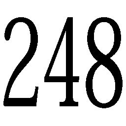
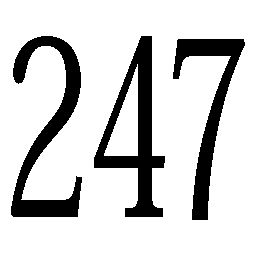
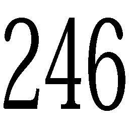
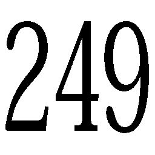
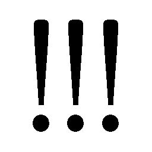

| 書きつづけるコトバ 日能研文学コンクール作品集 | |
| Unknown | |
| (2015) | |
日能研文学コンクール作品集
書きつづけるコトバ
白痴
妹尾 美佑
小さい頃から、何かが足りない何かが足りないと言われて育ってきました。
その「何か」って何？どうすればそれを補えるの？しかし、私がいくら尋ねてみても、彼らは私のその抽象的な欠点を指摘するばかりで、けっして解決策を与えようとはしないのです。
たとえば、こんなこと。
毎夜毎夜、手酌で酒を呑む父とその相伴に与る母、声の調子が沈んだならそれは私のことを話しているのです。居た堪れなくなります。障子から微かに洩れる明かりと、気だるい雰囲気。恥を忍んで廊下から、聞こえにくい二人の声をこっそり拾うあの時のあの気持ちといったら。
もしかしたら、足りないのは、障子を開けて堂々と二人を問い詰めるだけの度胸でしょうか。それとも、何だろう。もともと持って生まれた能力？健康的なばら色の頬？
私は、これだけは誰にも負けないと自負できるほどの、秀でた美点を何も持っていない。全てが宙ぶらりんなのです。だから時々、「何か」どころか全てが至らないのだと思えてくる。
こんな後ろ向きなことばかり考えているせいか、人付き合いもあまり上手な方ではありません。遠慮しすぎて、自分から距離を縮めていけない。そのくせ下手に孤独に慣れているものだから、たまに好意を傾けられると嬉しくって嬉しくって、もっともっと私だけを、と、独占欲の箍が外れてしまうのです。そうして、割とすぐに私は、その人にとって重苦しい存在になってしまう。周りも、みっともなく特定の一人に引っ付いて回る私を、見苦しいと思うでしょう。
これが、数ある私の欠点の中でも一番ひどいもののような気がします。
しかし、そんな満たされない思いを抱えていたからこそ、父の紹介であの人のお世話をすることになった時、とても嬉しかった。
あの人、とは、私の遠縁に当たる良家のご子息で、名前は明かせませんが、とても美しい人でした。白痴でした。
彼は、大抵の人がわずらわしいと感じるほどの私の深い愛、はたまた独占欲を一身に受けても、まるで平気でした。それどころか、にっこり笑いかけて、抱きしめて下さいました。・・・いいえ、抱きしめる、というより抱きつく、といったほうが適切かもしれません。しかしそれでも良かった。なんだってよかった。向けた好意を同じ分だけ返してくれる彼に、私は救われました。そして幸せに目が眩んで、いつからか、とんでもない思い違いを抱くようになってしまったのです。
この人も、私と同じなのだと。たった一人を愛したった一人に愛されればそれで良いのだと。
私は、この人の、たった一人に選ばれたのだと。
ああ、なんて浅ましい。私は、あの人の置かれた境遇を、まずきちんと理解すべきでした。高貴なお家柄の人全てがそうなのかどうかは解りませんが、少なくともあの家の人たちは、役立たずが嫌いでした。彼は、疎まれていたのです。
もっと率直に言いましょうか。彼を好きだったのは、私だけだったのです。選ぶとか選ばないとか、そういう次元じゃなかった。
ほどなくして、私は彼の婚約者に選ばれました。
気が弱いから、強く言いさえすれば馬鹿みたいにそれに従うし、もとが貧乏だから、あまり生活費も食わないし、曲がりなりにも家族に仕立て上げることで、ただで彼の面倒を見させることができるし、と、私はあの家の人たちにとってとても都合が良かったのです。
知らない人がたくさん、お祝いを述べに来ました。体裁を繕うため、今まで触れたことすらない上質の着物を着せられた私は、この時はじめて社交辞令のなんたるかを知りました。朗らかな口調に、人好きのする微笑。しかし目だけは、ひっそりと私を侮蔑しているのです。「金に目が眩んで白痴と結婚した馬鹿娘！」
きっと退屈を持て余している華族の方々にとって、私は格好の暇つぶしの材料だったのでしょう。私は悲しくなりました。そして衝撃を受けました。冷たい嘲笑を一身に受けるうちに、私は、彼の隣に座ることに例えようも無い恥ずかしさを覚えるようになったのです。
さながら知恵の実を食べたアダムとエバのように、胸の中に、羞恥という感情がすとんと落ちてきました。私は、微笑むしか能の無い、頭のいかれたこの男と寄り添って、いつまでも周囲の物笑いの種になるしかないのだ。そう思った途端、枕に突っ伏して、わっと泣き喚きたくなるような衝動に駆られました。私は、ひどい女です。誰も居ないところでこの人に抱きつかれたなら至上の幸せを感じるのに、その幸せに浸りながらも頭の隅っこでは、誰か人のいるところで同じことをされたなら、きっととてつもなく恥ずかしいことだろう、とこっそり身震いするのですから。
私は、なるべく人前では、彼を避けるようにしました。人前と、二人きりの時のギャップに、馬鹿な彼は気付かないだろうと高を括って、パーティーなどでは、彼を疎む素振りさえ見せました。
ただただ、あの家の人たちの命令で、仕方なく彼と婚約したのだ、という風に見せかけたかったのです。上手くそう思わせることに成功すれば、周囲は私を蔑むどころか同情の色を見せ、ちやほやしてくれる。そのためには手段を選びませんでした。「実は前々から想い合っている者が居たのに、彼の為に仲を引き裂かれた」という途方も無い嘘を吐いたこともありました。
私は、周囲の侮蔑の矛先を捻じ曲げて、自分からあの家の人たちに向けさせることに成功しました。当然、身に覚えの無い噂を聞きつけた、私の義理の家族たちは怒りました。「なんということをしてくれた」「お金なら欲しいだけあげるから、今後パーティーや人付き合いは控えるように」
私は、頷きませんでした。
驚き呆れた彼らは、私を、もともとの地位であった世話係に逆戻りさせ、代りに他の娘を新たな婚約者に仕立て上げて、彼のもとへと送り込みました。第二の私は、私よりもさらに貧しい家の出身で、物事を深く考えない、天真爛漫な娘でした。
今更悔やんだって、後の祭り。全ては、私のちっぽけな自尊心の引き起こしたことでした。
第二の私は、名前を加代といいました。綺麗なものが好きで、良くお金を浪費しました。しかし私の二の舞にはなるまいと、決して社交の場には出向きませんでした。
彼女は自分の旦那にはあまり関心が無く、彼の世話は、相変わらず私がしていたけれど、しかし彼女は、彼を疎んでいた訳ではありませんでした。本当に純粋な良い子です。実の家族に煙たがられる彼を、可哀相に思ってさえいました。
馬鹿で軽薄で、しかし根は素直で優しい子。反吐が出ます。加代は、その大らかさでもって気まぐれに彼にちょっかいを出しては、彼の関心を根こそぎそちらへ持って行ってしまうのです。
ここまできて初めて、私は自分の勘違いに気付きました。数ある中から選ばれたのではなく、今までの彼の選択肢が私しかなかったということ。打ちのめされました。築き上げてきた高い高い砂の城が、一気に崩れ去る、とでも言いましょうか。ただただ、一面真っ白にした頭の中を、黒く塗り替えてみたり、赤く塗り替えてみたり。しばらくの間、考えるということが一切不可能になりました。
それからは、加代と私の争奪戦でした。いいえ、競争意識があったのはきっと私だけだったのでしょうけれど、それでも私は必死でした。こっちを向いて、私を見て、笑顔を見せて、名前を呼んで。
安心と慢心の色眼鏡を取り去って、初めて見えてきたことがあります。彼は、加代以上に気まぐれなのです。確実な頭を持っていない彼に、確実なものを求めること自体間違っていたのです。私が今までしてきたことって、一体なんだったんだろう。あやふやな世界に生きている彼には、誰がいちばん親身になって世話してくれるとか、いちばん深く愛してくれるとか、そんなことは一切関係ないのです。一瞬一瞬の感覚が全てなのです。その一瞬の判断によって笑うか愚図るかを決めているのです。
そうだ、考えてみれば、私が彼を邪険に扱った時期だって、彼はにこにこ笑っていた。関係ないのです。私の瑣末な行動など、彼の弾力性のあるバリアーでやんわりと撥ね返されるだけなのです。私は、とても遠回しに拒絶されていた。このうすのろにさえ、私は受け入れてはもらえないのです。
いつもそうでした。私は頑張っているのです。周りのみんなより、ぜんぜんもっとがんばっているのです。彼を邪険に扱ったのだって、元とは言えば、周囲の人たちに好きになってもらおうと思ったからなのです。嫌われないように、好きになってもらえるように、自分の行動で他人がどう思うかをいつも気にして、気を遣って、なのに加代みたいな純粋な馬鹿が、いつもひょいと何の努力もせずに、私の上を行くのです。
もう泣きたい。泣こう。私は今度こそ、ベッドの上に突っ伏してわっと泣き喚きました。誰かがドアーを開ける音が部屋に響いたような気がしましたが、もう知りません。どうとでもなれ。・・・なあんて、真っ赤な嘘です。本当は、気になって気になって仕方が無い。ちらりと、誰であるのか確認しました。彼でした。慰めて欲しいと思いました。「どうしたの？」優しい声。私は、彼に縋りました。彼は驚きながらも背を撫でてくれました。しかし次の瞬間、声を張り上げて、「加代、加代、綾乃が大変なんだ、早く来て！」この時点で、私には縋れる人なんていないのだということを痛感しました。
加代がすっ飛んできました。「ここはお一人にして差し上げないと、無神経ですわ」私を気遣う視線を寄越しながら、彼を引っ張っていきます。「そうだ、綾乃、元気になったらね、紫の押し花の入った文鎮僕に頂戴」「後になさいませ」ドアーが閉められ、また元の静寂が戻ってきました。
いっそ私も純粋な馬鹿になってしまおうと、心に決めた瞬間でした。
（公文国際学園高等部・二年、当時）
足りなかったコトバ
木村 美波
別府 彩子
「紗彩のバカー!! 」
親友、橘紗彩を前に思い切り叫んでいる少女、それが私、朝日桜。
「あっ、さっ、桜......。」
紗彩に話す暇も与えず、私は続けた。
「紗彩は頭もいいし、かわいいし、私の気持ちなんてわからないよ!! 」
私は戸惑う紗彩を残し、無我夢中でその場を去った......。
それから丸二日、紗彩とは話していない。というより、私が逃げているだけ......。
紗彩が私と仲直りしたいって思ってくれているのは、手に取るように伝わってくるのに......。
それでも、何を話したらいいのか、どんな顔をして会えばいいのかわからなくて、すぐ逃げ出しちゃう......。違う。そんなんじゃない。『ごめんね』って一言言うだけ。それだけでいい。私と紗彩の事だもん。でも、私にそんな勇気はなかった。たったそれだけの事なのに......何をやっているのだろう......私は。
そんなことを考えながら、ふと自分の机の上を見ると、
「あ......。」
机の上にはあきらかに紗彩の筆跡とわかるメモが置いてあった。
「『今日の放課後、あの場所で待っているから。』......か。どうしよう。会いになんて行けないよ。行かないでもいいかな......。」
その帰り、私は歩きながらボーっとする頭でこれからのことを考えた。
でも、浮かんでくるのは自分を責める言葉ばかりで......。
ため息混じりに顔を上げると、そこには、桜の木がたたずんでいた。
もう桜の季節も終わりみたいで、葉っぱばかりが青々と茂っている。まだ残っている数枚の花びらも、今にも散ってしまいそうだった。
「こんな所まで来ちゃった......。」
私は、名前が桜というせいか、この空き地の一角にある桜の木に、不思議なほどの親近感を感じていた。
しかもこの場所は、私と紗彩しか知らないくらい、人気の少ない所にある。その為、いつも静かで、私にとって一番心安らぐ場所だった。
「久しぶりだね...。」
私は、いつもこうしていたように、木の幹に触れながら、いつの間にか、色々なことを思い出していた......。
この木は、小さい頃から私にとって大切な友達の一人。何かある度に、この木に話しかけていた。中学にあがった今も、それは変わらない。ここに来てしまったのも、小さい頃からの癖のせいだろう。
初めての授業のこと、部活のこと、お母さんと喧嘩したこと......。
どれだけの話をこの木としてきたのだろう。そんな中でも、一番多かったのは紗彩のことだった。......紗彩......。
はっとして時計を見上げると、もう４時近く。
いくら春といったって、もう日は傾きだしている。
「もう、こんな時間だ......紗彩待っているだろうな......。」
でも、ここから急いだって、10 分はかかる。間に合うはずがないよ。
もともと......行く気なんてなかったからな......。紗彩なんていなくても、平気なんじゃないかな......。
あきらめの色が残る私の瞳に次に映ったのは、春の終わりを告げる最後の花びらが散っていくところだった。風に揺られ、悲しげにひらひらと舞う花びら。最後まで残ってしまった、かわいそうな花びらに見えた。
何年もここには来ているけど、この光景は、初めて目にするものだった。そして、その花びらが地面に触れた、と思ったら、私は光に包まれていた......。
気がつくと私は見たこともないところに立っていた。一面の砂嵐。１メートル先に人がいても分からないだろうというほど、視界は悪かった。周りは砂しかなさそうだ。でも、砂漠のように暑くはない。
「何年ぶりだろうか......。ここに人が来たのは......。」
だんだん砂嵐が弱まり、視界が開けてくる。すると近くに人が立っていた。さっき聞こえた声はどうやらこの人だったみたいだ。
彼は漆黒の長い髪を首の後ろでとめ、整った顔立ちをしていた。そして、一番目を惹く美しく澄んだ瞳はどこか悲しげだった。
「あの......。」
私が話しかけようとするとその人は、
「朝日桜だね？ 私はジェノス。あなたの道先案内人だ。」
それだけ話すと、ジェノスと名乗る男は、私の前をどんどんと歩き出した。
「あの？ どこにいくの？ なんでわたしの名前を知っているの？」
それでもジェノスは何も言わずに歩いていく。
他にも聞きたいことは山ほどあったけど、仕方がないのでひとまず私はジェノスの後をついていった。
しばらくの間、砂漠のような所を歩き続けた。あんなに強かった風は、まるで魔法をかけられたかのようにやんでいた。すると、何もないと思っていた砂漠に緑の木々が見え始めた。
「ねぇ、あれオアシスでしょ!! あそこに行くんだよね!! 早く行こうよ!! 」
「......。」
なおもジェノスは黙って歩き続けて行く......。
期待に胸を膨らませ、私は歩いた。でもジェノスはオアシスの村には入らず、その外に静かにたたずむ１軒の家の前で止まった。
「ここが私の家だ。あがってくれ。」
ジェノスは「どうして？」「ここは？」と質問攻めする私をソファーに座らせた。
「とりあえず落ち着け。紅茶でも飲むか？」
そう言ってジェノスが差し出してくれた紅茶は、ほのかに甘い桜の香りがして私を落ち着かせてくれた。
「じゃあ、ここはどこなの？」
「ここは『忘れられた島』......人々が心の奥にしまい込んで、いつしか忘れていく本当の気持ちの集まる所......。」
説明が難しくてよくわからなかったけど、確か私の家の側にそんな名前の土地はなかったはずだ。
「それで、私は何でこんな所に来ちゃったの？」
「桜の木は時として心に陰を持つ者をこの世界へ連れてくる。......本当の気持ちを忘れさせないために......。」
やっぱり、これもよくわからない。
「じゃあ、今度は答えてくれなくても良いから......なんでジェノスはこんな所に居るの？どうみても、門の外なのに......。」
「村に行けばわかる。行きたければ、行って来い。」
何だかジェノスの言い方はどれも抽象的すぎて、やっぱりよくわからなかった。でも、ジェノスの眼が何かを訴えようとしているのだけは伝わってきた。
何だろう......。私はとにかく村に行ってみることにした。
村の入り口にある門をくぐり抜けて、まず耳に入ってきたのはこんな声だった......。
「小雪のばかー!! 」
「あっ、シっ、シーナ......。」
「小雪は頭もいいし、かわいいし、私の気持ちなんてわからないよ!! 」
そう言って、その子は走り去って行った。小雪と呼ばれたその子は、その場から動かず、ただ静かに泣いていた。
「酷いなぁ、あそこまで言わなくても良いのに......。」
当たり前のことを言ったはずなのに、その時なぜか心に引っかかるものを感じた。
その後、まっすぐにのびた道を歩きながら、さっきのけんかを思い返していた。この気持ち......何なんだろう......。
「痛っ!! 」
誰かにぶつかってしまったみたいだ。
「すみませんっ!! あの、ちょっとボーっとしていて......。」
慌てて謝ったけど、その人は私の事を見ると、舌打ちをしてそのまま歩いていった。周りを見てみると、人々がみんな同じ所へ向かっているのがわかった。
『村に行けばわかる......。』ふと、ジェノスの言った言葉を思い出した。きっと、このことを言っていたんだ。付いて行ってみなきゃ。そして、まるで人形のような人々の波に乗って着いたのは、大きな広場だった。でも、ただの広場とは違う。それは、広場の中央に大きな木があること。大きいといっても、並の大きさじゃない。高さは高すぎて、上の方にやっと葉が見えるくらいで、幹は大人10 人くらいじゃ囲みきれそうにない程太い。そして人々はその大木に向かって礼をしたり、何かを唱えたり......まるで、この木を神だと思っているかのように......。
私は気味が悪くなって、その場から静かに立ち去った。帰り道、村には誰もいなくて、ただ砂が巻き起こっていた。
この世界に帰るところのない私は、仕方がなくジェノスのもとへ戻る。ドアを開けると、黙ってジェノスがソファーに座っているのがみえた。
みんなが広場に集まっている最中、ジェノスは１人孤独に、この家のなかにいたのだ。いくら他人だといっても、そう思うとなんだか胸が痛くて、私は黙ったまま家に入り、ソファーに座った。
その後、沈黙を破るようにジェノスは立ち上がり、お茶を淹れてくれた。台所に立つジェノスの背中は寂しげで、話しかけようかと迷っていると、私が何を考えているのかわかってしまったみたいに、後ろを向いたまま、ジェノスの方から話しかけてきた。
「私はしきたりを破ったからここに居るんだ。」
「しきたり？」
「そうだ。あの村には数々のしきたりがある。その１つでも破ると村の人として扱われなくなるんだ。門の内に家を建てることはもちろん、村の行事にも参加できなくなる。」
そういうことだったんだ。なんで１軒だけ、それもジェノスの家が村の外にあるのか。
ジェノスにしきたりのことを詳しく聞いてみようかとも思ったけど、村から追放された暗い過去を他人に話したいはずがない。そう考えた私はあえてジェノスには聞かなかった。
「ジェノス、もう１回村に行っても良い？」
どうしてかというと理由は２つ。１つは、村に行けば何かしらの情報が手に入ると思ったから。２つ目は、なんだかジェノスを１人にさせてあげた方が良い気がしたから。でも、ジェノスの返答はこうだった。
「今日はもうやめておけ。日が暮れると門が閉まって、外に出られなくなるぞ。それと、もう行くなとは言わないが、なるべく村には近寄るな。」
『何で？』と聞きかけた私の言葉をさえぎって、ジェノスは言った。
「そういえば、桜の部屋のことなのだが、２階の空き部屋を使うといい。」
そう言って、ジェノスは歩き出した。今まで気付かなかったけど、家の隅には小さな階段があって、私達はそれを使って２階へ上がった。
「ここが桜の部屋だ。ちなみに私の部屋はこの向かいだから、何かあったら呼んでくれ。じゃあ、しばらく部屋に居て良い。考えたいことがあるだろう？」
そこまで言うと、ジェノスは１階へ下りて行った。
ジェノスが居なくなった後にドアを開けてみると、「ふわっ」と風に乗って甘い香りがした。その香りに誘われるように私は足を踏み入れた。
部屋には桜色のベッドと、チェックのカーテンをそよがせながら風を受け入れる窓が２つ、そして、かわいらしい花が飾られた勉強机が部屋の隅に置いてあった。
元の世界の私の部屋に比べると、人形もないし漫画もなくて質素だったけど、なんだか部屋全体が温かい雰囲気で満たされていた。
特に、机に飾られたちいさな花の香りは私の心を落ち着かせてくれた。
それから私はふかふかのベッドに寝転んで、村での出来事を思い返していた。すてきな部屋をもらったのに、胸の奥がなんだかチクチク痛む。なんでなんだろう......。
「あっ!! 」
思い出した。あの村に入った時に聞いた女の子の言った言葉って、私が紗彩に言った言葉と同じ。私、あんなに酷いことを......。あの後、紗彩も泣いていたのかなぁ......。そう考えると、急に胸が締め付けられるような気持ちになって、泣きたくなんてないのに涙がどんどんあふれてきて、パリッとした薄い桜色のシーツにぽとぽとと小さな丸いシミをつくった。
『くよくよしていたって、何も始まらないよっ！』
ふと、私がいつも紗彩に言っていた励ましの言葉を思い出して私は窓を開けると空を見上げた。そして、『この世界のどこかはきっと、元の世界につながっているはずだ』とそう信じて、私は果てしなく広がる空の彼方に呼びかけた。
「ごめんね......紗彩...。」
すると、手に冷たい感覚がした。驚いて手を広げてみると、中には青色にきらきらと輝く桜の花びらのような形の綺麗な石があった。
「綺麗な石......。」
突然現れた石の存在は気になったけど、今はそんなことより、早く元の世界への戻り方を知りたかった。だから私はすぐに部屋を出て、その答えを知っているであろう人の元へ向かった。
ジェノスには出会ったばかりなのに、なんだか彼のことは、信用してもいい気がしていた。
ジェノスしか知っている人がいなかったからかな......。
「ジェノス、ジェノスー？」
階段を下りていくと、ジェノスを見つけた。
「どうした？ 泣いたのか？」
私はジェノスに言われて初めて、自分の目尻にまだ涙がたまっていることに気付いた。
「ちがうよ、眼にごみが入っただけ。大丈夫だよ。」
本当は全然大丈夫なんかじゃなかったけど、私の問題にジェノスを巻き込むわけにはいかない。だから私は涙を拭いて笑ってみせた。
「......そうか。」
なんだかジェノスはまだ納得していない感じだった。ごめんね、ジェノス。
「そんなことよりジェノス！ 私ね、一刻も早く元の世界に帰らなくちゃいけないの!! どうしたら良い？」
一瞬の間があり、そしてジェノスは言った。
「やっぱりな......。桜ならそう言うと思っていたよ。」
そしてジェノスは、あの綺麗な眼で私を見つめながら真剣な顔つきで話し出した。
「......この世界には本当の気持ち......《謝罪》《感謝》《自信》《信頼》《思いやり》の５つを象徴する、桜の花弁の形をした石がある。その全てを集めれば、お前は元の世界に戻れる。でも容易なことではない。石は主を選ぶからな。手に入れるには、桜自身がこの５つの気持ちを取り戻さなければいけないんだ。......ここに来るのは、この大切な５つの気持ちを忘れかけた人だからな。」
「本当の気持ち......。」
しばらくそんなことを考えている内に急がなければいけないことを思い出した。
「じゃあ、早くしなきゃ！ 私、村に行ってくるよ、何か手がかりがあるかも......。」
「桜、今村に行っても入れない。もう日が暮れてしまったからな。」
外を見てみるとすっかり日が暮れ、月が昇り始めていた。
「えっ......。」
不安をあらわにしている私の顔を見て、ジェノスが言った。
「早く帰りたい気持ちはよくわかる。だが、今日はもう遅い、ゆっくり休むと良い。」
「でも、親友との約束が......。」
私がそういうと、ジェノスは微笑んだ。なんだか心が安らぐ。
「心配するな、桜の『自分の世界へ帰りたい』という想いが消えないかぎり、桜の居た世界の時間が進むことはない。」
安心した私は、その場に座り込んでしまった。その時、私のポケットからあの石が転がり出てきた。
「桜、これはどうしたんだ？」
床に落ちた石を拾い上げながら、ジェノスが問いかけてきた。
「えっ？ これのこと？ わからないよ。気付いたら持っていたの。」
すると、ジェノスは私に微笑みかけてこう言った。
「気持ちを取り戻したんだな？」
「何のこと？」
私は、わけがわからなくて聞き返した。
「桜、これが私の話した石......これが元の世界への手がかりだ。......これは《謝罪》の石だな。誰かに心から謝っただろう？」
「......うん。」
紗彩......あなたなら許してくれるよね。
私はその日、初めて紗彩のいない世界で夜を迎えた。星はとっても綺麗に輝いていたけど、心の中はなんだか寂しかった。
次の日、私はまぶしさで目を覚ました。外を見るとすっかり日は昇っていた。
私は急いで着替えを済ませ、足早に階段を下りて、
「おはよう。」
と、台所に向かうジェノスの背中に呼びかけた。
「ああ、おはよう。今、朝食ができたから、運んでくれないか？」
「うん。」
ソファーに座って食べた、ジェノスの作ってくれた朝食はとても美味しい。
「今日も村に行くんだな？」
急にジェノスが言った。
「うん。石の手がかりを見つけなくちゃいけないから。」
それに小雪ちゃんのことも......会えるわけがないとは思うけど、行ってみたって良いよね。
「......そうか。じゃあ、あまりあの木に近づくな。それと、早めに帰ってこいよ。」
「何で？ 木になにか......。」
そこまで言って、私は止めた。昨日の儀式のようなものを思い出したからだ。ジェノスも、それ以上話そうとしない。『村を追い出されちゃった理由って、そこに関係あるのかも......。』そう思わずにはいられなかった。
「行ってきます。」
私は、食器を片付けると急いで村へ出かけた。
先日の様に村に入ると、前に村を訪れた時に見かけた小雪という女の子が、今日も隅の方で静かに泣いていた。
でも、この間とは違う。それは、その子の傍に必死に慰めようとしている女の子がいること。
私も落ち込んでいた時は紗彩に慰めてもらっていたっけ......。この２人を見ていて、こんなに胸が温かくなるなんて......今になって初めて紗彩の大切さに気付いたよ。
すると、手には冷たい感触が......手を開かなくてもわかるよ。これはきっと「感謝」を象徴する緑色の石......。なんだか傷ついていた心が少しずつ癒されて、胸の奥に光が「ぽっ」と灯ったみたい......そんな感じがする。
しばらく２人を眺め、こんなことしている場合じゃないな。と思った私は、石の事をジェノスに話そうと走り出そうとした。
そして、ふと後ろを振り返る。すると、小雪ちゃんが涙で濡れる眼を拭いて、ぎこちない笑顔で一生懸命に想いを伝えようとしているのが見えた。
「私もがんばらなくっちゃ！」
そう言って、私は村の出口に向かい、風のように走り出した。
ドアを開けると、ジェノスが驚いた顔で迎えてくれた。
「もう帰ってきたのか。何かあったのか？」
「そうなの。ほら。」
私はあの感謝の石を取り出した。
ジェノスは一瞬、悲しそうな顔になったように見えた。
でもその顔はすぐに消え、代わりに微笑むと、私の頭に手を乗せ、優しくぽんぽんと頭をたたいてくれた。なんだか心がほっとする。
そして、
「よくやったな、桜。あと３つ、この調子でがんばれよ。」
と、言ってくれた。
「今日はもう休んだほうがいい。ほら、昨日は寝られなかったんじゃないか。仮眠をとったらどうだ？」
ジェノスの言う通り、昨日はあまり寝ていない。というより、寝られなかった。そこで私はジェノスの言葉に甘えて、眠ることにした。
昨日寝られなかったのは、ジェノスが信用しきれていなかったからかもしれない。でも、今は信用できる。それとも、ただ単に眠かっただけなのかな......。
「結構眠っちゃった......。もう１回村に行きたかったのに。」
風にそよそよとゆれるカーテンの奥ではもう夕日が見えている。
まだボーっとする頭でよろよろと階段を下りた私は、
「おはよう。」
とジェノスに言われて驚いた。
「今......おはようって言った？」
「今はもう朝だぞ。知らないのか？ 桜、あの後ずっと寝ていて......夕食に起こしに行ったけど、寝ているようだったからそっとしておいたんだが......。起こした方が良かったか？」
ジェノスが心配そうな顔で言うので、
「いや......別に......。今日行けば良いからさ。」
本当は昨日も行きたかったけど、ジェノスの顔を見たらそんな事は言えなくなってしまった。ま、いいか。
そんなことを話していたら、急にお腹が減ってきた。
「さて、朝食にするか。」
「うん。」
そして、朝食を食べた私はすぐに家を出た。
「行ってきます。」
『道に迷った時は地図を使うと良い。あの村には東西南北４つの門があって、そこに地図がある。もちろんこの近くの入り口の門にもな。できれば私も行きたいのだが......』
ジェノスが玄関で言っていた言葉が浮かんでくる。
「えっと......地図はこれだよね。」
門の傍の立て札に地図が彫ってあった。相当古いのか、すごく読みにくい。でも、道と記号だけは読み取れた。
「うわぁ......いろいろあるなぁ......。」
警察署に図書館、これは洋服屋だろうか。Ｔシャツのマークもある。どうやら、あの大木以外は普通の町と変わらないみたいだ。私はすっかり安心して、村の中に入っていった。
町は賑やかだった。......というより、人が多いだけと言った方が良いかもしれない。どこへ行っても、人々は誰も話さない。聞こえるのは、どこかへ向かう人々の足音ばかり......。おしゃれなカフェの前を通った時でさえ、カチャカチャという食器の触れ合う音しか聞こえてこない。
「みんな、冷たいなぁ...。」
人ごみの中を歩いているのに、何気なくつぶやいた私の声さえ大きく響いている。
寂しくなって静かに人ごみを抜けていくと、楽しそうな声が響いてきた。冷たい人ばかりだと思っていたから、自然と足が速くなる。
公園について私は驚いた。
そこでは歳もばらばらな子供達がボール遊びをしていた。笑い声......そんな身近なものを聞けるだけで、こんなに嬉しいなんて......なんだか温かい気持ちになった私は、笑顔で先を急いだ。
しばらく歩いて行くとなぜかあの大木のある広場へ着いた。人のいない広場は昨日にも増して、気味が悪かった。時々すれ違う人々も人らしさが消えてしまったみたいな顔で歩いていて、『静寂』という言葉がぴったりだ。
そして、周りに誰も居なくなると私は引き寄せられるように木に近づいた。興味があったというのもあったけど、何より、そうしないといけないような気がした。......幹に触れてみる。とても冷たいけれど、枯れてはいない。手のひらから命を感じる。なんだか、悲しみを誰かに伝えようとしている......そんな気がした。よくわからなかったけど、不思議な気持ちだった。
一通り町を回ってみると、どこも行くところがないので、公園に行った。まだ帰るには早いし、子供たちを見ていたかったから。
帰りに道を引き返していると、お母さんと手をつないで歩く子供を見た。公園で遊んでいたのか、その子の服はずいぶん汚れている。私は、元の世界のなつかしい風景を重ね合わせて微笑みながら、そっと聞き耳を立てた。でも、私の期待していたような楽しい話は聞こえてこなくて、その代わりに心に深く突き刺さるような会話を聞いた。
「ねぇ母さん、ジェノスの所に異世界の人が住んでいるんだって!! 」
あ......私のことだ......。
「だめでしょ、罪人の名前を口にしちゃ。」
「今日も神木様に手を触れたらしいよ。僕、信じられないっ!! 」
心臓が凍りつく。この先なんて聞きたくない。なのに、足が動かない。
「そうねぇ、何でそんな子が来ちゃったのかしらね。救う価値もないわ。」
「そうそう。来なければ良かったのにね。」
「そうね。」
私は親子が行ってしまうと、一気に町の中を駆け抜けジェノスの家に入り、自分の部屋まで走り続けた。それまでは息もまともに出来なくて、１つ深呼吸をすると、胸の中に閉じ込めていた想いが涙になってあふれ出した。がんばってこらえようと思っていても口からは嗚咽が漏れた......。
それから私は村へ行かなくなった。というより、外に出ようとするとあの親子の会話が脳裏をよぎり、前に進めなくなってしまう。
何度も試してみたけど、ドアノブに触れようとするだけで足が動かなくなってしまう。
ジェノスの止める言葉も聞かずにこんなことを繰り返しているうちに、私はどんどん精神的にも、肉体的にもすっかり弱ってしまった。
そして、何度目かの挑戦をした時、ついに私の身体は限界を迎えて床に倒れた。
目を開けたら真っ黒な空間が広がっていた。
「ここはどこだろう。確か、外に出ようと思ってドアに向かって......。」
その後が思い出せない。
悩みながら周りを見渡してみる。何もない、ただ真っ黒い世界が広がっているだけ......。「静寂」そして「孤独」、そんな言葉が似合いそうだ。ここにいると心が「悲しい」と訴えかけてくる。
私は終わりの見えない闇の中に呼びかけた。
「ジェノス？」
私の声は虚しく闇に吸い込まれていった。今度は立ち上がり、歩きながら叫んでみる。
「おーい、ジェノス？ 紗彩ー？ みんな居ないのー？」
返事は、いくら叫んでも返ってこない。
心細くなった私は叫びながら走り出した。何処に向かっているのかなんて分からないけど、何かをしていないと「寂しさ」に押しつぶされそうだった。
どの位走っただろうか。未だに、聞こえてくるのは「はぁはぁ」という私の荒い息遣いだけ。まだ、たいして走っていないはずなのに、精神が、私自身が壊れてしまいそうだった。
その時、黒しか映っていなかった私の瞳に、白い何かが映った。よく見ると、それは花だった。純白の花。
「きれい......。」
思わず感嘆の声を上げた。しゃがんで花に手を伸ばす。でも、私が触れた途端にその花はしおれてしまった。そして、みるみる内に真っ黒くなって枯れてしまった。まるで生気を失ってしまったかのように。その傍にあった花達も次々と枯れていく。......そして、さっきまで真っ白だった花畑は、黒くなって闇の中に溶けていった。
「どうして......。」
周りを見渡すと数分前と変わらない黒の世界。自然と涙があふれてきて、私は顔をうずめて泣いていた。
すると、背中から声を掛けられた。
「代わってやるよ。」
あわてて声のした方を見ると信じられない物が視界に入った。それは、友達でも宇宙人でもなくて、たった１人しか居ないはずの私。
「あっあなたは!? 」
「ん？ 私は私。ま、もっとも私はあなたでもあるんだけどね。」
「なっなんっ......。」
私の言葉をさえぎり、『私』は話し出した。
「なんでか？ それは、あんたみたいな弱くて何も出来ない人間は嫌いだから。代わってあげようと思って。」
当たり前のように言う『私』の言葉を聞いていると悔しかったけど、どれも本当の事だと思うと何も言い返せなかった。
なおも『私』は続ける。
「小学校の頃のこと憶えている？ あんたったら、みんなになじめなくて毎日陰で１人、泣いていたよね。強がっちゃって。」
それは、心の奥にしまって、忘れようとしていたはずの過去。
すると、いきなり目の前に空間が開けた。 そこには机やいすが規則正しく並べてあって、見慣れた黒板やかわいい金魚の住む水槽も置いてあった。
「ここは......学校？」
そう言うと突然チャイムが鳴り響いて、その音と共に子供たちがドアを開けて入ってきた。
どの子もリコーダーや教科書を手に仲良くおしゃべりをしている。きっと音楽の授業の後なんだなぁと思いながらしばらく見ていると、幼い頃の『私』が入ってきた。
「え......？」
『私』の周りには誰もいない。そして『私』は俯きながら静かに歩き、机に座った。
それを見ていたら、閉まっていたはずの辛い記憶が波のように押し寄せてきて私は怖くて震えだしてしまった。
「あいつって悪い奴じゃないんだけどな。」
「あんなにお金持ちだと近寄りがたいんだよね。」
「お母さんにも近づくなって言われているしね......。」
「ほらっ、朝日さんに聞こえるって!! 」
教室の隅で話している数人の子供たちのひそひそ声が頭の中に響いて今にも壊れてしまいそうだ。
「やめてぇー!! 」
堪えきれなくなって叫ぶとその空間は消え、また黒の世界に戻った。
まだ身体がガクガクと震えて息も荒い。いつまで経っても心が落ち着かないから助けを求めるように『私』の顔を見た。そこで私は絶望した。
だって『私』は薄い笑みを浮かべて、まるで私が堕ちていく様を楽しんでいるかのように私を見下ろしていたんだもの。
「どう？ これがあんたの姿。もっと見せてあげてもいいんだけどね。」
「中学校に入って紗彩に会わなければ、あんたはあのまま１人だったんだよね。そうやって、いつも周りに助けられて......自分じゃ何も出来ないくせに。ほら、そのあんた、みせてあげるよ。」
そういうと、『私』は消え、見慣れた風景があらわれた。
「あ......。」
今度は、中学校入学当初の私の姿。
チャイムが鳴って、みんながお弁当を食べだしている。教室はにぎやかで楽しそうだ。
そんな中、私は......
「橘さんっ。一緒にお弁当たべようっ。」
そのときの紗彩は、転校してきたばっかりで、クラスに馴染んでいなかった。かわいいし、おとなしくて、皆、どことなく近寄りがたかったんだろうな。
紗彩がクラスに馴染んできても、私と紗彩は親友だった。紗彩もそのうち離れていくと思っていたから、意外で......うれしかった。
さらに、紗彩のおかげで、私もクラスに馴染むことが出来たんだ。
するとまた、漆黒の世界に戻ってきていた。でも、さっきみたいな心細さはない。
『私』はまた話し出した。きっと、私が傷つくような言葉を並べているのだろう。
でも、その声はもう私の耳には届かなかった。なんというか、いきなり心の奥底で青白い炎が燃え上がるような感覚がして、「今なら誰にも負けない」と思えた。人はこれを「自信」とか「勇気」と呼ぶのだろうか。
そして私は立ち上がり、『私』の眼を見据えて口を開いた。
「私はずっと、親があんなだからしょうがないよね。って思っていた。でも、気付いたんだ。私がしてきたのはただの『逃げ』だって。みんなと仲良くなれる機会はいくらでもあったはずなのに、初めから諦めて自分から壁を作っていたんだ。確かに、最初は近寄られないよね。でも、私が努力してなかっただけなんだ......。本当にばかみたいだね......。でも、ジェノスや紗彩、みんなに会って『今までの自分で居たくない』って『変わりたい』って、そう思えるようになった。だから、私はがんばるよ。今回は紗彩に助けられちゃったけど、今度は自分から変われるように!! 」
そこまで一気に話し終えると、周りの世界が歪んで、私は気を失った。
「桜......桜......。」
誰かが私の名前を呼んでいる。そう思って重たいまぶたを開くと、ジェノスが心配そうに私の顔を覗き込んでいた。どうやら、ここは私の部屋にあるベッドの上のようだ。
「大丈夫か？ お前、ずっとうなされていて......。」
そんな慌てたジェノスが無償にいとおしく思えて、私は彼の骨ばった大きな手を握った。
そして、私はさっきまで居た世界の事を思い出した。というより、あの世界に住むもう１人の『私』の事を......。最後の瞬間、彼女は言った。その言葉は音にはならなかったけど、私の心の中に大きく響いた。たった一言
「がんばれ」
......と。
「がんばるよ......。」
そういったとき、私の手には《自信》を象徴する石が握られていた...。
ジェノスもその事に気がついたみたいだったけど、深くは聞かれなかった。
ジェノスなりに、気を遣ってくれたんだろうな。
数日後、私は勇気を振り絞って村へ向かった。いつも静かだった町並みは、私の周りだけざわめいていた。でも、ここで立ち止まっちゃいけない。残るふたつの石を見つけるまでは。
「よし、ここだな。」
私が立っている扉の前には本のマークの看板がある。
今まで、村の通りしか歩いたことがなくて、少し緊張したけど、私はドアを開けた。
中に入ると、見かけより図書館はずっと広い。その上、床ギリギリから天井まで、所狭しと本が並べられていた。でも、とてもきれいな図書館だった。
よく考えれば、手がかりを得るのに、図書館に来ればいいと思うのは当然だよね。いろいろありすぎて思いつかなかった。
「えっとっ......歴史書のコーナーはっと......あった!! 」
早速そこへ走っていくと、どのコーナーよりも多くの本が揃っていた。
「これと......あと......これも。」
５冊ほどの本を抱え、私は読書コーナーへと向かった。
「さ、読み始めようっ。」
そういって私が本を開く。すると、厚い本のページはくりぬかれ、一回り小さい、ぼろぼろなもう１冊のノートが納められていた。
本の表紙には、『この日記を見つけてくれたあなたへ。私はあなたがこの村を救ってくれると信じている』マルコ・クレイマー
と書かれている。
興味を持った私は日記を開いた。
『３月23 日
今日は、広場の中央にある、桜の木の下で宴会を行った。
桜はまだ満開とはいかないが、夜まで村人皆で楽しんだ。』
丁寧な字で、そう書いてあった。
そんな話が延々と続く。平和な話だった。
「ただのいたずらかな？」
そう思い始めたとき、意外な言葉を見つけた。
『４月８日
村に、ジェノスという少年がやってきた。
暗くて、おとなしい子だ。自分の心を閉ざしたまま何も話してくれない。きっと、相当辛いことがあったのだろう。少しでも役に立てたら......少しでも早く村に馴染んでほしいな。
しかし、ジェノス君はどこから来たのだろうか......？』
そのあとも、所々ジェノスについて書いてあった。
『10 月９日
ついにジェノスが口を開いてくれたらしい。
村人達の話によると、ジェノス君は異世界から来たらしい。
私はファンタジーを信じる方ではないが、ジェノスが言うなら、本当なのだろう。』
......異世界？ 私は驚いた。もしかしたらジェノスも......帰ったら、ジェノスに聞いてみよう。
そう思いつつも日記を見ていると、急に内容が変わった。
『４月15 日
もう４月も終わりに近づいているのに、桜が咲かない。だが、村人たちは気にしていない様子だ。毎年、桜の開花日は大切な日。
その桜が咲かなくて、どうして気にならないのだろう......。
友人たちも、なんだか冷たくなった気がする。
私の思い違いならいいのだが......。』
『９月27 日
これで確実になった。村人が冷たいのは、桜のせいだ。しきたりも日に日に増している。このままでは、私は捕まる。
どうにかして、花を咲かせなければ。』
『４月13 日
ついに私は明日、処刑される。
この日記がばれてしまったのだ。だが、この日記を見てくれる人がいると信じ、私はこの日記を隠す。どうか、呪われたこの村を救ってくれ。健闘を祈る』
そして、日記はこの日で終わっていた。
「え？ ということは......。」
私はある本を手に取り、ページをめくった。
本の題名は、『過去の追放者の記録』。
「４月14 日......あった!! 」
『マルコ・クレイマー
インチキな文章で、村人を惑わした罪で処刑』
この人で、間違いなさそうだ。
はっとして外を見ると、きれいな夕日が出ていた。だから、私は急いでジェノスの家へ帰った。
「ただいま。」
ジェノスって、もしかしたら現代から来たんじゃないだろうか......でもジェノスに、なんて切り出そうかな......。
そんなことを考えているうちに、いつの間にか夕食が食べ終わってしまった。
話すなら今しかない。そう思った私は、
「あのさ、ジェノス......。」
「なんだ？」
「あのさ、ジェノスって、マルコさんって人知っている？ マルコ・クレイマーさん。」
ジェノスは驚いた顔をしたけど、質問には答えてくれた。
「あぁ。知っているさ。あの人には、いろいろなことを教えてもらった。」
遠い目をして、話すジェノスには悪いけど、私は今日見つけた物のことを話した。
「そうか......。」
「でね、もしかしたらジェノスは、私のいた世界から来た人なのかなって......。」
ソファーに座ったジェノスは、火のついていない暖炉を見ながら、一瞬間をおいて、私の質問に答えた。
「そのとおり、私は桜のいた世界から来た人間だ。私がどうしてこの世界に来たのかを、話そうか。」
そう言うとジェノスは語りだした。
「......私は普通の家庭に生まれた。決して裕福というわけではなかったが、幸せだった。母と、父と、妹と......。だが、そんな幸せな日々を切り裂く出来事が起こった。母が交通事故に遭ったんだ。明らかに相手のミスで、母はかえらぬ人となった。父親は、彼女が居ないと何もできない人だった。しばらくすると、父は酒におぼれ......それから優しかった彼は、日頃のストレスを、私たちにぶつけてくるようになった。初めは口だけだったが、だんだん暴力を振うようになった。そして母が死んで半年後......耐えかねた私達は行く宛もないまま家を出た。
その後、いいことなんて、ひとつもなかった。一日１食食べられればいい方だし、残飯にありつくことがほとんどだった。服だってどんどん小さく、ぼろぼろになるし......。そんな中、乗り越えてこられたのは、ミシェルのおかげだった。ミシェルは、私より４つ下の妹だ。なにより負けず嫌いで、気は強いが優しい子だった......そしていつも、ミシェルなりに私を助けてくれた......。」
ミシェルのことを話すジェノスの目は、いつもより一層悲しげで......私は、そんな思い出したくない過去を、無理やり思い出させてまで、話が聞きたいわけじゃなかった。
でも、ジェノスは話したかったんだと思う。眼がそういっていた。それでジェノスが楽になれるのなら......。私は黙って聞いていた。
「しばらくすると、住むところが見つかった。人気のない公園だ。他にももっと良い所はあったのだが、ミシェルは目の前に桜の見えるその場所が気に入ったようだった。そして、私たちは徐々に、安定した生活を送れるようになった。だが、そんな私たちに、再び悲劇が訪れた。ミシェルが高熱で倒れたのだ。普段から、唯一の兄である私に心配をかけまいとしていたのか、その時にはもう病状はかなり悪くなっていて、私がどんなにがんばって看病しても、悪化していく一方だった。『自分が代わってやれたら。』と何度願ったことか......。」
そこまで話すと、ジェノスは深呼吸をして、心配そうに見つめる私に微笑みかけて、前に向き直って話を続けた。
「そして、雪のちらつくある日......。ミシェルの寝そべるベンチの横に座っていた私に、ミシェルが話しかけてきた。
『私......ね......お兄ちゃんに、町を見てきて欲しいの......。』
『ミシェル!! 無理をするなっ!! 』
その頃のミシェルはもう、話すのもとぎれとぎれで、歩くことはおろか、起き上がる事さえ一人ではできなくなっていた。
『お願い......。』
そう言って私を見つめた彼女の顔はやつれ、元気に町を駆け抜けた少女の面影はなかった。
『わかった......。』
仕方なく町へと行って私は驚いた。雪の降る町は赤や黄色のイルミネーションで綺麗に飾られ、活気があふれている。
『忘れていたな......今日はクリスマスイヴか......。確か、去年のこの日にはミシェルとこの町に来ていたな......また来年も来ようと約束をして......。』
そんなことを考えながら歩いていると、足元にちいさな熊の付いたツリーの飾りが落ちているのを見つけた。
『......こんなところに。そうだ。一つくらい持って行ってもいいだろう。』
そして、私はそれを拾い上げると暗い公園へと引き返した。
『ミシェル、ただいま。』
ミシェルはやつれた顔で一生懸命に笑ってこういった。
『綺麗だったでしょ？ ......確か......今日はクリスマスイヴだから......。』
『なんだ、知っていたのか。』
『うん......。だって、本当は私もお兄ちゃんと一緒に見に行こうと思っていたから......。約束だったのに......守れなくてごめんね......。』
そう言うと、元気だった頃から唯一変わることの無い綺麗なミシェルの瞳から涙があふれた。どんなに辛くても、一度だって泣いたことは無かったのに......。私は、ミシェルに元気をだしてもらおうとして言った。
『そんなこと、良いんだ。また来年行けば良いだろう。それより、ほら。』
私は先ほど拾ってきたツリーの飾りをミシェルに手渡した。
『町を歩いていて拾ったんだ。本当は、もっと良い物をあげられたら良いんだけどな......。』
『ううん......。すごくかわいい......。お兄ちゃん...ありが......とう。......大好きだよ......。』
それが、ミシェルの笑顔を見た最後だった。」
きっと辛いはずなのに、ジェノスは涙も見せずに話し続ける。私は話を聞いただけでこんなに涙があふれてしまっているというのに。
「......当たり前のようにやって来たその瞬間はすごくあっけなくて、悲しいとか寂しいとか、そんな想いは少しもなくて、からっぽの心の中に〝ミシェルが死んだ〟という事実だけが残った。その後、私は一日中動かずにミシェルのそばにいた。たった一つの心の支えが音を立てて崩れた気がした。どうしたらいいのか分からなくて、ぼぉっとしていると、いつの間にか私は町に来ていた。クリスマスで、昨日よりさらににぎやかな町は楽しげな雰囲気が漂っていた。道ゆく人、皆が笑っている。そんな中、私は一人、取り残されていた。
なぜ皆は笑っていられるんだ？
一人の人が死んだというのに。
......なぜ？
ミシェルが死んでもいつもと変わらず回り続ける世界が憎かった。このときは、楽しげな笑い声でさえ、私を軽蔑し、嘲笑っているように聞こえた。
本当は、うらやましくて仕方がなかったんだろうな。
クリスマスを、楽しく迎えられる人々が。
何の悩みもなく、素直にプレゼントをもらって喜んでいる人々が。
見ていられなくなった私は、もう冷たくなったミシェルの元へと戻った。
いつも人気のない公園は、なぜだか騒がしい。
だが、そんなことを気にとめるほど、私に余裕はなかった。
ミシェルのベンチへ向かおうとしたその時、一人の警察官に呼びとめられた。
『もしかして、あそこにいた娘の兄妹かな？』
『......はい......。』
本当は、違うと言いたかった。すぐに身元を調べられて、いずれ親の下へ返されることはわかっていたから。......でも、違うとは言えなかった。たとえ警察官であろうと、違うというとミシェルの存在した証がなくなってしまうような気がした。このあと、ミシェルはどうなるのだろう......。
そのあと私は、警察署で質問を受けた。だが、私が何を話したのかは覚えていない。ひとつ覚えているのは、『あの子は、相当疲れがたまっていたようだよ。そのせいで、病気にかかりやすくなってしまってね。まぁ、すぐ病院へ行けば治らない病気ではないのだが......。』という、親切な警察官が教えてくれた言葉だけだった。
私は案の定、すぐにでも唯一の肉親である、父の下へ送り返されることとなった。
数ヶ月後、私の父の居場所は見つかった。行ってみると、私たちの家族がもともと住んでいた家だった。
ただ、その家はもう、私たちが住んでいた家ではなかった。
床には半年前の新聞や、大量の酒瓶があふれていた。
さらに、その中にぽつんと座っている２年ぶりに見る父は、昔の面影は残っていなかった。
頬はやせ、髪は抜け落ち、歳より相当老けて見えた。あの仕事熱心だった瞳は、いつの間にか絶望の色に染まっていた......。
そんな父を見た私は、覚悟を決め、すぐにまた家を出た。
向かうのは、ミシェルと過ごした、あの場所......。
何もない、ただのベンチ。ミシェルと過ごしたその場所で、私は死ぬことを決意していた。
だが、死ぬにも死ねない私が目にしたのは、目の前にある、桜の木だった。
もう、花びらは少ししか残っていなくて......。そんな花びらが悲しく、かわいそうに見えたから、同情したんだ。そして最後のたった一枚の花びらを手のひらで受け止めた......。すると......体が光に包まれて......この世界にやってきていたんだ。」
私はジェノスが話し終わるまでずっと泣いていた。
それは同情ではなくて、悲しいのでもなくて、ただ「ジェノスがつらい時に傍に居てあげられていたら、どんなに些細なことでもしてあげられたのに......一人にすることなんて、なかったのに......。」って思うと、涙がこみ上げてきたからだった。
涙を拭いて見上げるとジェノスは笑っていた。でも、その笑顔は悲しげで、それを見て思った。「この人は最初から強かったんじゃないんだ。きっと、一番辛い時に頼れる人を見つけられなくて、《強さ》を装うことを覚えてしまったんだ。」と。
そう思った時、私は叫んでいた。
「何でそんなに無理するの！」
理由は「今言わないと絶対、後で後悔する。」と思ったから。でも、それ以上に「この人にこれ以上辛い思いをさせたくない。」と思ったから。
少し見上げればジェノスの驚いた顔が見えたけど、私はそんなことには構わずに、一息つくと今度は慎重に言葉を選びながらゆっくりと話を続けた。
「１人で背負うなんて辛かったよね。重かったよね。今まで１人きりで寂しかったよね......でも、もう１人じゃないんだから。辛かったら弱音を吐けば良い、悲しい時は思いっきり泣いたって良いんだよ。だから......ね、無理なんてしないで。」
話し終わって安心して泣き始めたら、頭の上に何かが乗っかった。この優しい感じは、きっとジェノスの手だ。
涙の乾かない目でジェノスを見上げると、今度はジェノスが私の涙を手で拭いながら話し出した。
「私はずっと、こんな言葉を待っていたのかも知れないな。だから、桜にこんな話をしたのかもしれない。誰かに......誰でもよかった。たった１度でも良いから、自分と向き合って欲しかった。存在を認めて欲しかった。」
そこまで言うと、ジェノスは生まれて初めて言うみたいにぎこちなく一言だけ囁いた。
「ありがとう」
と。
本当に嬉しかった。初めてジェノスの心に触れられた気がした。
でも、最後の言葉は紗彩にも聞いてもらいたかったな。だって、私に「桜は一人なんかじゃないよ」と言ってくれたのも、「無理なんかしなくて良いんだよ」と教えてくれたのも紗彩だったから......。
その夜は、外に出て、満天の星空を２人で見上げながら朝まで話し続けた。「ジェノスの話の続き」、「今までで嬉しかったこと」、「自分のこと」それから、もちろん「今手に入れたばかりの《思いやりの石》のこと」も......。
次の日、少し寝坊をして起きた私は、とてもいい気分だった。
階段を下りていくと、いつもいるジェノスの姿が見えない。
「どうしたのかな......。」
そのまま眠たい目をこすりながら待っていると、ジェノスはすぐに来た。
「すまない。ちょっと探し物をしていて。今、朝食を作るよ。」
変だな。とは思ったけど、私は気にしなかった。
「うん。今日は私も手伝うね。」
「助かるよ。」
２人で朝食の準備をしながら、あと１つ、《信頼》の石さえあればもとの世界に戻れる。という喜びをかみしめていた。
ジェノスと別れるのは悲しかったけど。
出来上がった朝食を食べながら、ジェノスは、
「あと１つだな。」
といってくれた。私は、ジェノスの方から話しかけてくれるとは思ってなかったから、驚いた。
「うん。がんばるよ。」
「早くもとの世界に戻れると良いな。」
でも、そのあと、ジェノスは、私がいなくても、悲しくないのかな...。
と思って、ちょっと私の方が悲しくなった。
しばらくの沈黙の後、ジェノスが
「桜に渡したいものがあるんだ。」
と言った。
そう言って、ジェノスが私の手に何かを握らせる。私に何だろう。そう思ってわくわくして見たそれは、おどろくほど意外なものだった。
なんと、ジェノスの手には、紛れもない、《信頼》の石が。
「ジェノス......これ......どうして......。」
驚きを隠せない私の顔を見ながら、ジェノスは言った。
「何回か桜と話をしたあと、私の手には、この石が握られてあったんだ。でも、なかなか渡せなくて......桜に帰ってほしくなかったのかもしれないな。
いつかこんな日が来る事は分かっていたのに。......弱い人間だ......私は。すまない。」
「そんなことないよ。だって、ジェノスはちゃんと私にくれたもん。ありがと。これで全部揃ったよ......。......でも、私だって、ひとりのジェノスは置いていきたくないよ。」
私だって、こんな日が来ることは前から覚悟していたはずなのに......こんなに別れが辛くなるなんて思ってなかった......。
話し終わって気まずい沈黙の雰囲気の中に２人で立っていると、その空気を裂くようにジェノスが驚きの声を上げた。
「桜が......。」
「えっ？」
私のことだと思って振り返ると、ジェノスの眼は、窓の外に向いている。
そこには、見事なまでの桜吹雪が舞っていた。
さらに、耳を澄ますと、楽しげな笑い声や音楽も聞こえてくる。
「元に戻ったんだ。」
そう思ってジェノスをみると、ジェノスが泣いていた。はじめて見るジェノスの涙はとてもきれいで、それを見ていたら揺らいでいた気持ちが決まった。
ここならもう、ジェノスは独りじゃない。置いていっても大丈夫だと思えた。
でも、微笑みを交し合ったあと、私とジェノスは何も言わなかった。
だって、口を開いたら、涙が止まらなくなるのが分かっていたから......。
そして、準備を済ませると口をつぐんだまま外に出て、桜の木へ向かった......。
途中では、みんなお祭り騒ぎ。私たちも、何度か声をかけられたけど、断った。
そして、桜の木に着いた。今度はこの木の周りも大勢の人で賑わっている。
そんな中、私は５つの石をとりだし、桜の花の形にそろえ直す。
《謝罪》《感謝》《自信》《信頼》《思いやり》......。
そして、桜の木の幹に触れた。温かかった。とてもうれしそうだ。
すると、私の体は、光に包まれていった。
そして、光の隙間からジェノスに微笑んだ。
それは、ジェノスの心の中だけにでも、この世界にいた証がほしかったから。
でも、ジェノスだけじゃなく、桜の木に集まっている人々も見てくれていた。
そして、ジェノスの微笑みが見えた直後に、私は完全に光に包まれた。
固くつむった目を開くと、そこは見慣れたいつもの桜の木の下だった。
「帰って来られたんだ......。」
たった数週間見なかっただけなのに、妙に懐かしく感じる。つい、久しぶりに帰って来た世界の土を踏みしめて、しばらく１人になっていたいと思ったけど、今はそんな事をしている場合じゃない。一刻も早く紗彩の元へ行かなければならなかった。......たった１つの気持ちを伝えるために。
私は自分を待つ親友からの手紙を握り締めて、転んでも道行く人にぶつかっても必死に走り続けた......。
「今の私ならちゃんと言える！ あの頃の私とは違う！ だからお願い紗彩、許してっ！」
祈るような思いで２人の出会った場所を目指して、私は人気の少ない路地を駆け抜けていった。
やっとの思いで辿り着くと、そこにはいつもと同じ静かな微笑みを浮かべた紗彩が立っていて、私を優しく迎えてくれた。
だから、私は精一杯の笑顔でこう言った。
「ごめんね......。」
晴れ晴れとした綺麗な夕焼けの中、紗彩と抱き合う私の頬を一筋の涙が伝い、夕日の光を反射して光り輝いた。......まるで私達を祝福してくれているかのように......。
（木村 美波 横浜共立学園中学校・二年、当時）
（別府 彩子 横浜共立学園中学校・二年、当時）
「情報」への想像力
関 翔平
頭の中に思い描き、その像を結ぶ力は「想像力」と呼ばれていますが、この能力は絵画や映画作品を見る事よりもむしろ読書によって、様々な文章に触れる事によって鍛錬されます。視覚情報が多い絵画等では、そこに印された一つ一つの状況が刺激を限定してしまい、見る手はただ受動的に理解することしか出来ません。これに対して文章、ことに小説や詩の場合は、記された内容を受身で傍観しているだけでは許されず、作者によって想定されたある枠組みの中で、読み手自身が参加しなければなりません。
次の文を見てみましょう。
...しかも冷ややかな空気の底には、下の庭園から上ってくる苔のにおいや落ち葉のにおいが、かすかに寂しい秋の呼吸を漂わせている様であった。
これは芥川龍之介の『舞踏会』という作品の中に描かれた一場面の情景ですが、これをみて、並べられた単語を一個一個ばらばらに思い浮かべるだけでは「想像力」が使われた、とは決して言えません。絵画のように映像そのものは表現されていないから、自分で組み立て直すしかない。この過程で自分自身の記憶や、体験をもとに「想像力」が働くのであり、文章の醍醐味はそこにあるのです。
右の文では幾つかある修飾語の中でも、最後の「かすかに」と「寂しい」が文全体の雰囲気を決定的にしています。短い文の中でも、作者によって示されたこの「秋の呼吸」のイメージが、私たち読み手に一つの印象を与えてくれます。それはあの夏が持つギラギラとした熱気でもなく、冬の寒々しい北風でもなくて、秋という季節特有の移り変わり、気候も涼しくなり夏場に騒いでいたセミも消えて辺りも静かになってきた、落ち着いた雰囲気です。「冷ややかな空気」は来るべく控えている冬の冷気と見ることも出来ましょうし、「苔」や「落ち葉」のにおいは、たとえ過去に実物を嗅いだ経験がなくとも、文の流れから植物の衰えた、湿った、あるいは枯れたような匂いを思い起こす事ができます。
想像力は自由なのです。ことに小説や詩は、与えられた幾つかの表現の中では、限り無く自由なのです。さっきの一場面を描いた文に対して、舞踏会を終えてバルコニーへと出、欄干に寄り添って涼んでいる婦人を想像してもいいし、窓を開けて静まり返ってしまった秋の夜を悲しむ少年の姿を思い浮かべたっていいのです。記された表現が許容する限り、私たちは「想像力」の無限の世界で遊ぶことが出来るのです。
これに対して、昨今人々の間で広まっているのは「幻想力」というものです。私たちは日々生活の中で幾度となくテレビ映像に接し、街中の視覚的アピールに接し、テレビゲームやパソコンの画面と接しています。これら全ては、自分自身の思考を経て再構成する文章情報とは違い、即座に映像として目に焼きつき、そのものとして記憶されるものです。こんな情報と相対したとき、そこに受け手側の介入の余地はなく、それだけに「想像力」が生み出すような自由な伸張性はほとんどありません。
私たちは、このように所々で溢れ返る映像情報に対して、「想像力」を掻き立てるような文章情報とは、全く違った仕方で対応せざるをえません。それはつまり、思考をイメージの再構築にではなく、現実世界での再構築、つまり実現の幻想に割り振るという方法です。映像の中で既に成り立っている仮想の事実、これをひとつ上層の認識にまで引き上げるために、現実の中で「実現された」場合を想像してみるわけです。
文章情報よりも遥かに素早く、現実感に対する影響力を及ぼす映像情報が、暴力的、残酷なものとして表現されたとき、それが人の心に与える破壊力は言うまでもないでしょう。「想像」するよりも早く与えられてしまう視覚的な情報には、実際に起きた出来事と混同されてしまう危険性すら包含しています。私たちは現代における一方的な、極めて受動的な、情報に対する態度を改めるべき時期に差し掛かっているのです。
（聖光学院高等学校・二年、当時）
二年六組の守り神
五十嵐 えりか
『二年六組には守り神がいる』
私のいる区立上沢高校にはこんな噂がある。『その年の二年六組にだけ見えて、一緒に生活できる』といった内容だ。しかし、あくまで噂は噂。信じていない人は大勢いるだろう。だが、毎年の二年六組はまとまりが良く、何か秘密を抱えているようだ。
え？ 私は信じているかって？ 当たり前だ。否が応でも認めるしかないだろう。
しかし、私は『守り神』と言われるほど尊いものでもないのだが。
１
憂鬱だった中間テストが終わり、毎日だらだらと授業を受けていたある日、潮はこの二年六組に違和感を覚えた。
教室の一番端の窓側である潮の席からはクラス全体が見渡せる。誰も授業を聞く気はなく、大半は机に突っ伏して寝ていた。起きている者もほとんどは周りの者と大声で談笑している。かくいう潮も頬杖をつき、襟足まで伸びた軽くくせのある髪を風に遊ばせて教師の声を子守唄にうとうととしていたクチだ。
そんななか、ふと横を見ると自分の反対側の端に見知らぬ女子生徒が座っていたのだ。
（誰だ？ あいつ......）
潮はクラスの全員の顔を覚えているわけではない。しかし、その生徒は明らかに昨日まではいなかったはずだ。生徒だけでなく、彼女が座っている椅子と机までもが。
見知らぬ女子生徒は下手をすれば腰にまで届くほどのくせのない黒髪を結ぶでもなく無造作に流し、潮と同じようにつまらなそうな顔で黒板に目を向けていた。ぱっと見ただけでも整った顔立ちだという事が分かる。すらりとした体格は同じ指定の制服を着ているだけでも他とは違った空気をまとっており、一度も外にでた事がないかと思えるほど白い肌は見事な黒髪によく映えている。よく聞く黒髪美人というのはこういう人のことを言うのだろう。
物珍しげに見る潮の視線に気付いたのか女子生徒はこちらに視線をやる。潮と女子生徒の目が合った。女子生徒の目が見開かれる。微かに唇が動いた気がした。潮は思わず身構える。
（睨まれる......！）
なにしろ話したこともない相手をジロジロと見ていたのだ。何を言われても文句は言えない。が、予想に反して女子生徒は唇を笑みの形に歪めた。まるで面白いものを一人だけ見つけたように無邪気に、しかしどこか大人びて。その笑みを見てしまった潮はしばらく呆然と魅入ってしまう。ごくりとつばを飲み込む。なぜか背中に冷や汗が伝った。すると女子生徒は更に面白そうにそっと黒板の方を指差した。
（は？）
女子生徒が指差すままに前を見るといつのまにか先程まで黒板に何か書いていたはずの教師が目の前に来ている。しかも少々ご立腹の様子で。
「久遠、お前ノートも取らない小テストもやらないで余裕だね？ 一生懸命どこ見てんのかな？」
「あ、すみません」
気が付けばあたりは静まり返っており、寝ていた者も起きている。いつのまにか授業は終わりが近づいていた。そして目の前には白紙のプリント。そういえば今日の授業の最後に小テストをやると言っていた気がする。
「ちなみに残り時間後半分だけど？ 合格点取れなかったら居残りだから？」
潮の背中に先程と別の意味で冷や汗が伝った。
「お前......誰だ？」
授業と授業の間の休み時間。潮は先程の女子生徒の前に来ていた。周りはざわついていて、誰もこちらを見ようとしない。
「貴様にお前呼ばわりされる筋合いはないな。別に、ただの平凡なこのクラスの女子生徒だ。」
女子生徒は一瞬だけこちらに目をやると、やけに古めかしい言い方で質問を突っぱねた。潮はその言い方にカチンと来る。バン、と机に手を置いて、声を荒げた。
「嘘つくんじゃねえよ！ てめぇ、このクラスの名簿に載ってねぇだろ。」
一度確認のため席順が乗っている紙を見てきたのだ。そこには潮が思っていた通り、女子生徒の席なんて書いていなかった。
「誰なんだよ、一体てめぇは！」
潮の声に驚いたのか、気が付くとクラスは静まり返っていた。周りの視線を感じる。
「久遠何キレてんだ？」
「っていうかあのコ誰？」
ひそひそ声に混じって何人かの会話が聞こえてくる。それすらも気にせずに潮は無言で女子生徒を睨みつけた。
「......そうカリカリするな。まぁ、お前が一番初めに気が付いたからな。教えてやろう」
女子生徒はふっと笑みをこぼす。先程の笑みとは違い呆れ半分、といった感じの笑みだ。
「『二年六組には守り神がいる。』こんな噂を一度くらい聞いた事はないか？」
そして微笑んだままあたりを見渡した。
「私が、その守り神だ」
「で、私が名乗ったのだから貴様も名乗れ」
昼休み、なぜか潮はその守り神とやらと弁当を食べる羽目になっていた。クラス内はしんとしている。誰もがこちらを気にしているのは一目瞭然だ。
「久遠」
「名前は？」
「い、いいだろ、名字だけで」
「良くないな。名乗れ」
「あーもうっ！」
潮はがりがりと頭をかいた。言っても良いが、毎回名前を知られるとあることを言われるのだ。潮にとってはそれが嫌でたまらなかった。
しかしこの守り神とやらは自分がいうまで聞き続けるだろう。このさい仕方ない。
「......分かったよ」
「潮だよ、コイツの名前。久遠潮ってんだ」
散々悩んで言おうとしたのをざっくり割りこんで言ってしまったのは同じクラスであり、幼馴染の女子だった。
「十字！ 何勝手に言ってんだよ！」
「そうか。潮、か。女みたいな名なんだな」
気が付けば守り神は満足そうにこちらを見ている。潮は自分の顔が赤くなるのを感じだ。
「でしょう？ それでコイツってば、昔散々それをネタにからかわれたの。で、こんな風に名前を言わない、呼ばせないってなっちゃったのよね」
「おい！ 言うなって！」
「なるほど。ところでお前は？ さっき潮が言った事によると十字、だったか？」
「かってに名前で呼ぶんじゃねぇ！」
潮は慌てて訂正させようとするが、守り神も幼馴染も全く気にせずに放し続ける。
「あたし？ 違うよ。あたしは藤井紅 炉 主 。『十 字 架 』からきてるからみんな十字って呼ぶけどね」
「ほう、また珍しい名だな」
「でしょ？ 親がキリスト教徒でね。まぁかっこいいからいいんだけど」
「おお。ちゃんと自分の名前を気に入っているのか。そこのヤツとは大違いだな」
「うるせぇ！」
「ん～、ひとまずこんなものだな」
守り神の少女は持っていたシャーペンを置いて一息ついた。ルーズリーフには書写のお手本のような字で四つの項目が書いてある。
・守り神はその年のクラスにしか見えない
・守り神はクラスの人以外には触れることはできないが、守り神自身が触ろうとすれば可能
・元このクラスでも学年が変わると守り神は見えなくなる
・クラスの人が守り神に名前をつける
「以上が私の規則だ。今年だけはこのことを前提に生活して欲しい」
周りには潮と藤井の他にも何人かクラスメイトが集まっている。先程の三人の会話で多少打ち解けたようだ。
「つまり俺たちがお前に話してるのをはたからみると、何もない方に向かって独り言言っているように見えるんだな」
「そう。授業中のお前のようにな」
「は？」
潮は疑問の声を上げたが、それ以外のクラスメイトはああ、と納得している。周りを見ても誰も答えてはくれないので仕方なく守り神を見る。彼女はくすくすと笑った後、潮の問いに答えた。
「知らなかったのか？ お前が初めて私を見たとき、周りのものには私が見えていなかったんだ」
「は？ お前の姿は二年六組なら誰でも見えんじゃなかったのかよ？」
「気付く気付かないには個人差がある。大体初めに気付いたヤツが私に話し掛ければ気付いてない者も私の存在に気付くな」
「うん。あたしもあんたが話し掛けたときに気付いた」
藤井の言葉を始めにあちこちから同意の言葉が出る。
「......つまり俺は誰もいない所を見ていた変人だったと」
「ああ」
「うん」
潮はしばらく湧き上がる切なさを抑えて黙り込んでいた。そして突然勢いよく立ち上がるとそのまま教室の出口へ歩いていく。
「潮？ どこ行くのよ」
「名前で呼ぶな！ 別にどこでもいいだろ！ お前はお姫とでも話してろ！」
「お姫？」
意外そうな守り神の声に潮はドアの前で立ち止まった。そのまま振り向かずに彼女の疑問に答える。
「お前の名前だ。さっき書いてあっただろ。守り神の名前はクラスの人がつけるって。お前はお姫。偉っそうにしているお前にはぴったりだろ」
言い終えるとすぐに廊下にでて乱暴にドアを閉めた。背中からはドア越しに藤井と名付けられたばかりの少女の声が聞こえてくる。
「いいの？ お姫って」
「ああ。あんなに一方的に決められたのは初めてだからな。却って面白い」
その声を聞いて潮はなぜだかふと笑った。どこか人を上から見ているような古めかしい口調、動きの一つ一つにどこか漂う気品、長い黒髪、白い肌、そして、意志の光をたたえる瞳、潮からすればあの守り神は『姫』だった。姫は姫でも武家の姫。きっと彼女を一言で言い表すなら『大和撫子』なのだろう。だが、そんな褒め言葉は潮の胸の中に一生しまっておこうと心に決めた。
２
守り神の存在があるようになって一週間が経過した。あれから二年六組は変わり始めているような気がする。彼女を中心に少しずつ、まとまり始めているのだ。やはり『神』というだけあって何か人を引きつけるものがあるのかもしれない。
「お姫ー宿題やってー」
「自分でやれ」
「この問題わかんないよー！ お姫、教えて！」
「分からないという前に授業を聞いて自分で十回復習してみろ。それでも分からなかったら教えてやる」
「お姫ーパソコンバグったー」
「知るかそんなもの！ すぐ人を頼ろうとするな！ 頼るなら自分で散々あがいた後に頼れ！」
もっとも引き寄せている本人は近頃怒鳴りっぱなしなのだが。それでも、彼女がクラスメイトを叱り付けているシーンは黙っているときよりも数倍生き生きとしている。
「大変そうだな、お姫」
「お疲れー」
放課後、終礼を終えて周りがバタバタと帰る中、潮と藤井は守り神のところまで椅子を引き寄せて腰掛ける。放課後ぎりぎりまで三人で雑談するのが近頃の習慣だった。
「すごいね、お姫が見えるようになってからなんかどんどんみんな人付き合いがよくなっちゃって。ちゃんとまとまってるし」
「そうか？ そういわれると嬉しいのだが」
「うん。あたしも人付き合いのよさや統率力には結構自信があったんだけど......あたしにはこんな風にできなかった」
藤井は苦笑して話を続ける。
「本当はあたしだって、クラスがどこかばらばらだって気付いてたよ。荒れてるっていうのもあったけど、みんながみんな回りの人のことを見てないっていうか......」
「無関心？」
「うん。それ。あたしとしてはクラス全員が仲良しこよしってまではいかないけど、もう少しまとまって欲しかったんだ。でも、いくらまとめようってがんばってみても空回りしちゃうんだ」
「空回り...？」
潮の呟きに藤井はうん、とうなずく。
「みんな相手にしてくれないの。前にさ、ある人に『あんた優等生だね、でもあたし達はあんたとは違うんだ』って嫌味たっぷりに言われたの。なんでそんな風に言うのかなーって......さすがにきつかったかも」
藤井は何よりも友達を大切にする少女だ。幼い頃から誰とでも仲良くなろう、相手の長所を見つけようとしていたのを幼馴染である潮は知っている。そんな彼女が相手から面と向かって否定されたらどう思うだろう。なのに、潮は藤井が落ち込んでいるところなんて見たことがなかった。いや、気付かなかった。潮もまたしばらくの間藤井と距離を置いていたからだ。
「あ、でも友達はいっぱいいるし、ハブられてるわけじゃないんだよ？ でも、一部からはそう言われてて、下手に無理したら今の友達もどこか行っちゃいそうで...あたしのどこが悪いのかな？」
藤井は苦笑いをしたままうつむいた。やはり相当気にしているのだろう。
「紅炉主は別に悪くない。人はみんな違うのだし、多少欠点があってもそれが人だ。それに、私から見れば紅炉主はなんにも欠点なんてないぞ？」
守り神は彼女にしては珍しく、普段よりもやわらかい口調で藤井を慰める。しかし、潮にはそれができなかった。藤井に同情する面もある中、そんなキツイ言葉をはいたクラスメイトにも共感できるからだ。
「嫌ってるんじゃない」
少しの間どうしてよいか分からなく黙っていたが、仕方なく潮は口を開いた。
「多分、敬遠、だ」
守り神と藤井の視線が同時にこちらに向く。潮は慎重に言葉を選んで続けた。
「ほら、一年の頃って受験が終わって思いっきり羽伸ばせるだろ？ で、三年はいよいよ本気で受験生になる。二年って中途半端なんだよ。来年は受験で、でも進路は決まんねぇし、どうすればいいか分かんねぇっていうか、焦ってるんだ」
「それで？」
守り神が興味深げに先を促す。
「それで、十字、お前はそこら辺ちゃんと決めてるだろ？」
「え？ うん」
突然話をふられた藤井は顔を上げてうなずく。
「前から......決めてたんだ。教師になろうって。それで、みんなの悩みとか解消したいなってさ。一応希望校も決めてる」
「だろ？ それが周りにはうらやましいっていうか憧れてるっていうか......そんで、その反面『ああ、俺たちとは違うやつなんだ』って感じに拗ねて、八つ当たりしてんだよ。......俺もそうだから」
やっとの思いで言い終えると潮は視線をそらす。最後の一言は言わないつもりだった。ずっと隠しておいて自分のことでけりがついたらついでに言うようにするつもりだったのだ。自分も周りと同じように距離を置いていたから。憧れてる半面、妬んでいたから。ずっと幼馴染として過ごしてきたのに。
「......悪かった」
黙ったままでいるのもばつが悪いので潮はポツリと謝った。返ってきたのは予想外に優しい声。
「いいよ、別に。言ってくれてありがと」
驚いて視線を戻すとそこには微笑んだ守り神と藤井がいた。その笑みにつられて潮も笑う。
誰もこないはずの教室のドアが開いたのはその時だった。
「失礼しまーす......と、まだ人いたんだ」
入ってきたのは一人の男子生徒だった。学年章を見るとどうやら三年生らしい。男子生徒はこちらを向いて驚きの表情を見せたがすぐにそれは面白そうな笑みに変わる。
「何？ お取り込み中だった？ もしかして俺邪魔？」
「ち、違います！」
即座に藤井が否定する。青年は軽く笑って教室内に入ってきた。
「冗談だよ。その椅子の位置から分かるって。......そこにいるんだろ、夜明 」
青年は潮と藤井の間、彼にとっては何もいないはずの場所を見て言った。守り神を見ればどこかつらそうな表情で青年を凝視していた。その唇がかすかに動く。
「京 ......」
「京？」
「あ、それ俺の名前。瀬 戸 京っていうんだ。ちゃんと覚えててくれたんだな」
瀬戸は満足そうに言うと今度は潮に向き直る。
「その様子だと、もう見えてるんだな」
「はい」
「今年の名前は？」
「......お姫」
「お姫!? 誰それつけたヤツ！」
瀬戸は大爆笑してしまった。潮は顔が熱くなるのを自覚しながら据わった目で彼を見る。
「俺ですけど......」
「マジ!? う、うん、よく似合ってるよ。俺らの時は夜明って名前だったんだ」
瀬戸はどこか懐かしむような顔をする。それで潮は確信した。
「じゃあやっぱり......」
「ああ、俺は去年の二年六組のクラスメイト」
おどけたように瀬戸は話すと何故かそっと目を閉じた。
「久しぶりだなー夜明。っても俺はお前の事見えないんだけどな。変な方向に向かって喋るのやだからこうするぜ」
「ああ、かまわない」
「いいって言ってるか？」
瀬戸が潮に問い掛けた。どうやら守り神の声も聞こえていないらしい。
「はい」
「今日はたまたま時間があったから来てみたんだ。終業式以来だなー。こっちはまぁ、順調にやってる。相変わらず元２─６は仲いいぞー」
「そうか......相変わらずか......」
守り神は先程から苦い顔をしたままだ。
「聞いてるかー？ 夜明」
瀬戸の声が不安げに響く。守り神が何を言っても彼には聞こえない。潮は言葉を伝えようか迷ったが、結局やめる事にする。何となく、自分が割り込んではいけない気がした。
守り神はそっと瀬戸に近づくと手短にあった椅子を引く。瀬戸がはっと目を開けてそちらを見た。おそらく彼には独りでに椅子が動いたように見えるのだろう。しかし瀬戸は驚くどころか逆に安心しきった顔をした。
「そこにいるのか......」
答えるように守り神は椅子を戻す。瀬戸はしっかりと彼女がいる場所を見ていた。
「会いたいな......」
瀬戸が、弱りきった、悲しそうな表情で呟いた。
「もう会えないって知っていても、もう一度話したい」
守り神は何も言わずに寂しそうな目で瀬戸を見つめたままだった。静寂が二人を包む。
「......ごめん。言わないって約束だったよな」
先に口を開いたのは瀬戸だった。もう帰るわ、と早足にドアへと向かう。そのまま出て行くのかと思いきやふと思い出したように顔だけのぞかせて笑った。
「そういやお二人さん名前は？」
「藤井紅炉主です」
「久遠......」
「名前は潮ね」
「おいっ！」
「アハハ。女みたいな名前なんだなー」
また言われた。潮は反論しようとしたが何も出てこない。
「顔が赤いぞー少年」
瀬戸はひとしきり笑った後、もう一度守り神がいる方向を見る。
「じゃあな。お姫 」
その場にいた全員が瀬戸を見るが、瀬戸はすでにドアを閉めたあとだった。
「そうだな......今年の私はお姫だったな」
守り神はしばらくの間複雑な顔でドアの方向を見ていた。藤井も何をいえばよいかわからないらしく黙ったままである。
「あのさ......」
ためらいがちに潮は守り神に声をかけた。今言うべき事ではないかもしれないが、どうしても聞いておきたいことがあった。
「なんでお前、そうやってクラスに馴染もうとすんの？ お姫がどんくらい前からここにいるか知んないけど、毎年毎年別れてもう二度と見えなくなるんだろ？ なんでわざわざ別れをつらくするのさ」
先程までの瀬戸と守り神のやり取りを見てずっと思っていたことだった。
どうせなら無関係でいればいい。そうすれば別れなんてつらくないはずだ。もう自分を見てもらえなくなっても寂しくなんてならないはずだ。それなのに何故、この少女はクラスの一員に、『守り神』になるのだろう。
しかし、自ら守り神になった少女はただ寂しそうに笑って首を横に振っただけだった。
３
「あれ、お姫どこ行くの？」
久しぶりに教室から出て行こうとする私を見て紅炉主が声をかけてきた。
「いや、たまには図書室でも行ってみようかと、な」
「そうなんだ。ってかお姫、教室から出て行けたの？ 移動教室とかいつも残ってなかった？」
「まぁ、多少は」
「うわ、サボりじゃん」
「気まぐれだ」
変わらないよー、と叫ぶ紅炉主を置いて私は図書室へと足を運ぶ。と、その道すがら、影でこそこそと話している人物を二、三人見かけた。全員見覚えのある顔、今年の二年六組だ。たしか名前は、猶 、良哉 、和人 、だったはずだ。位置的には猶が壁に追い詰められ、良哉、和人が追い詰めている、といった感じだ。なにか嫌な予感がする。悪いと思ったがそっと近づいて内容を盗み聞きした。
「なぁ、ちょっと金貸してよ」
「で、でもこの間も貸したばっかり......」
「いいじゃん。ちゃんとまとめて返すからさぁ？」
......なるほど、これがいわゆるカツアゲ、だ。しかしそれにしても言い方にまるで芸がない。第一猶ももっとはっきりと断ればいいだろうに。が、同じクラスのよしみだ。私は三人の後ろ姿に声をかけた。
「おい。昼間から堂々カツアゲか？ 芸がないな」
良哉と和人がびくりとしてこちらを向く。が、声の主が私とみてすぐに余裕の表情に変わった。
「なんだ、誰かと思えばどっかの幽霊か」
「幽霊とは何だ。私の名前はお姫だ」
「はっ、俺らにしか見えねぇなんて同じようなもんじゃねえか」
どうやら何をいっても聞いてはくれなさそうだ。無駄な言い争いはやめてとっとと本題に入ることにする。
「とにかく、カツアゲなんて馬鹿なことは今すぐやめろ」
「なんでお前に指図されなきゃいけねえんだよ。」
和人が一歩一歩近づいてくる。自然と私も後ろに下がった。が、背中に何かが当る。驚いて振り向くとそこにはいつのまにか良哉が立っていた。
「だいたいなー、お前のことは前から気にくわなかったんだ。幽霊のくせにリーダー面してよ」
更に和人が近づいてくる。とりあえず猶のところまで動こうとしたらその前に良哉が私の腕を掴んできた。
「離せっ！」
力の限り振りほどこうとするがそこは男と女の差。不可能だった。そしてその間に和人が目の前まで来る。
「ってーかさ、もうちょうっと、危機感必要なんじゃん？ お姫様？」
和人の指が私のあごをつかみ、上を向かせる。その瞬間私の中で何かが切れた。
「この外道がっ！」
腕をつかまれたままなのにもかまわずに遠心力を使って回し蹴りをお見舞いした。蹴りは見事に相手のわき腹にヒットした。
「この野郎っ！」
が、それが最初で最後の反撃だった。私は胸倉を掴まれ、突き飛ばされる。壁が背中にあたりぐっと息が詰まった。
「猶、今日はもう戻れよ。ただし、言うんじゃねぇぞ」
良哉は固まっていた猶に一瞥くれ、また私に向き直る。
「今日はこのお姫様にお相手してもらうからよ」
ふと気が付くと、守り神がいなくなっていた。
「あれ......お姫は？」
潮は傍にいた藤井を見る。視線に気付いた藤井は潮の質問に答えた。
「前の休み時間に図書室に行くっていって出て行ってたけど......」
「遅すぎねぇか？」
潮の言葉に藤井も頷いた。前の休み時間からはすでに授業一つ分経過している。
「図書室でサボり、ならいいんだけどね......」
「俺、ちょっと行ってくる」
「あ、あたしも」
潮と藤井は早歩きで図書室へと向かう。二人が図書室へ行く道すがら、ちょうどクラスメイトである倉野に出くわした。ちょうどいいと思い潮が尋ねる。
「なぁ倉野、お姫見なかったか？」
「え、いや。......見てないけど」
その時、倉野が一瞬詰まったのを潮は気にしなかった。
「そうか。じゃあ急いでるからまたな」
「う、うん......」
なんとなく嫌な予感がして自然と足が速くなる。図書室へとつく頃には二人とも駆け足になっていた。
「お姫！ いるか？」
乱暴にドアを開けてあたりを見回す。が、そこには、いつも強気な態度の黒髪の少女はいなかった。
「さて困った」
私は真っ暗闇の中、腕組みをして考えた。目の前のドアは押しても引いても全く開かない。動かすたびにがしゃがしゃと鎖の音がするのでどうやらドアノブに鍵付きのチェーンを巻きつけているらしい。部屋の中には小さな窓が一つ、それも高いところにある。残念だが私の身長では届きそうにない。
「痛っ......」
しかも突き飛ばされて入れられたため、盛大に足を擦りむいてしまった。正直かなり痛い。
あの後私は和人たちに取り押さえられ、あろうことか目隠しまでされてここへ閉じ込められた。そのため、私は今どこにいるかさえわからない。が、周りには体育祭で使うものなどが置いてある事から校舎裏にある倉庫の一つだろうと見当がつく。そしてここがしばらくは誰もこないだろうという事も。
適当に物を壊して音を立てれば人が来るかもしれないが、なにぶん二年六組以外私の姿は見えないため、後々面倒くさい事になりそうだ。
「まったく、あいつらいつの間に倉庫の鍵など......」
こういうとき本当に幽霊なら壁をすり抜けられただろうが、生憎そんな特技は持ち合わせていない。和人はちゃんと開ける気はあるのだろうか。潮も紅炉主も知らないようだが、食べ物などはいつも食堂から拝借しているのだ。いくら私が人でないといっても何日も飲まず食わずでは生きていけるかは分からないし、試してみたいとも思わない。そもそも『守り神』とは言われているが実際のところ本当かどうか自分でも分からないのだ。
「さぁ、どうしようか......」
脱出できる方法はない。私は潔く諦めてその場に座った。
「とりあえず......信じてみる事にしようか」
和人が、和人自身からこの扉を開けてくれる事を。
今年の、二年六組を。
放課後になった。守り神はまだ戻ってきていない。どう考えてもおかしかった。
「一応全部の部屋当ってみたけどどこにもいなかったよ。お姫」
藤井が教室に戻り一番初めに言ったのはあまり嬉しくない結果だった。
「こっちも情報ナシ」
潮も振り返り、芳しくない結果を伝える。もしかしたら守り神を見たクラスメイトがいるかも知れないと思い、今まで話を聞いていたのだ。
藤井と同じように教室から出たのを見た者は何人かいたが、同じ時間に図書室にいた者は守り神を見てないと言う。廊下で何かあったのは明白なのだが肝心の廊下で見た人物が一人もいないのだ。
「久遠君、私これから塾なんだけど......」
二人で頭を悩ませている所におずおずと一人の女子生徒が声をかけてきた。
「あ、ああ。わりぃ。もう帰っていいぜ」
「ごめんね。お姫、見つかったら教えてね」
女子生徒は残念そうにしながらも足早に教室を出て行く。それを筆頭に他の人も次々と部活動や塾を理由に席を立ち始めた。中には心配そうに声をかけるものもいたがそれらもすぐに出て行ってしまう。結局残ったのは潮と藤井の二人だけだ。
「十字、お前も塾じゃないのか？」
「サボる。お姫の一大事だもん。勉強なんてしてられないよ。潮だって用事あるんじゃないの？」
「まさか。こっち優先だろ」
二人は同時ににやりと笑う。お互い考えている事は同じだった。
「それで、どうするの？」
藤井が真剣な表情に戻って潮に聞いてきた。学校内は探し終えた。守り神を見たものもいない。が、潮は複数の座席を見て、確信をもって答えた。
「まだ、聞いてないやつと詳しく聞いてないやつが残ってる。そいつらの家まで押しかけて聞く。ぜってぇなんか知ってるはずだ」
今日、午後から早退したものは三人いた。
倉野猶、
岡田良哉、
そして鷺 橋 和人
このうちの一人、もしくは全員が守り神の行方を知っているはずだ。
４
潮と藤井は一度家に戻り、着替える事にした。制服のままだと動きにくいしもしかしたら遅くなる可能性がある。急いでいるときに警察などに補導されるのは御免だ。待ち合わせは潮の家にし、潮は待つ間に三人の家の住所を友人から調べておいた。程なくして藤井が自転車で潮の家にやってくる。
「一番近いのは？」
「鷺橋んとこだな。岡田は鷺橋と同じマンションだ。こんくらいだったらチャリでいけるな。逆に一番遠いのは倉野で、こりゃあ電車だな」
「じゃあ行こう」
近い順の方がいい、ということでまずは鷺橋と岡田のマンションへ行く事にする。潮の予想では自転車で行けば十分程で着くはずだ。藤井が近くの場所を知っているという事だったので先導してもらった。
大して迷うことなく二人のマンションは見つかった。まずは鷺橋の部屋のインターホンを鳴らす。しばらくして母親らしいどこか疲れきった感じの中年の女性が出てきた。
「どちら様ですか？」
「同じ学校の久遠と藤井というものですが、今日和人君が早退されたので連絡を届けに参りました」
藤井がよどみなく答える。普段の口調とはかけ離れている丁寧な喋り方だった。
「和人が......早退？」
鷺橋の母親は驚いたように目を見開く。どうやら知らなかったようだ。
「ご存知ではなかったのですか？」
「ええ......たまに、あるんです。家に帰りもしないで学校をサボってどこかに行って遊んでいるんです。先生に相談してもダメだしお友達に見てくれって言ってもちゃんと見てくれないで......どうしたらいいのか」
「......失礼ですが、あなたは？」
藤井が何か考えながら聞いた。
「え？ 私が何を？」
「あなたは何かしたのですか？」
「な、何って、私たちは共働きで忙しいし......だからこそ他の人に頼って」
藤井の顔からどんどん表情が消えていく。昔から藤井と一緒だった潮には彼女が怒っていることが分かった。
しかし一体何に。
「そうですか......では連絡は私たちが直接伝えておきます。和人君の行っている場所に心当たりは」
鷺橋の母親は首を横にふった。藤井はそれを見てため息をつき、簡単な礼を言って潮を引っ張って岡田の部屋へと向かった。
「なぁ、なんでそんなに機嫌悪いんだよ」
目的地までの電車の中、先程から黙っている藤井に耐え切れずに潮は話し掛けた。鷺橋の部屋を訪ねた後、岡田の部屋にも行ってみたが、こちらは誰も出てこなかった。岡田は鷺橋と一緒にいるとみて、一番遠い倉野の家に向かっているのだ。
「別に。ただあのお母さんに対して腹が立って」
「なんでさ？」
藤井は外の景色を見ながらふてくされたように潮に答えた。
「だって......あのお母さん、周りにばっか頼ってるみたいなんだもん。先生が、とかお友達に、とか。自分は何にもしてないくせにさ。お姫が前に言ってたじゃん。『頼るなら自分で散々あがいた後に頼れ』って。それなのにあの人は全然あがいてないように見えるの。そう考えるとなんか無性に腹が立った」
「そうかも、な」
確かに潮も似たようなことを思っていた。
いくら共働きで忙しく時間がなかろうがそれでも最善の努力はするべきだ。子供に対して仕事は言い訳にはならない。
「結局さっきだって、とうとう自分から鷺橋を捜すって言わなかったしな。自分は関係ないって感じで俺らに任せてるみたいだった」
自分の家のことで、自分の子供のことなのに。
潮たちにとってはそんな大人よりも強気な守り神の言ったことの方が信用できてしまう。
だからこそ、守り神を見つけなければならないと思った。
「見つけ、ような。お姫を」
「うん」
それきり二人は何も言わずに目的地の駅までを過ごした。夏が近いので外はまだ明るいが、時間はかなり経過している。
「あのさ」
地図を見ながら藤井は突然切り出した。
「倉野って、もしかしていじめられてたんじゃないのかな？」
潮は驚いて藤井を見る。そして、普段の鷺橋、岡田、倉野を思い出してみた。いつも三人でいて何かしら話している。鷺橋と岡田はよく授業をサボるがこれといっていじめられているようには見えなかった。むしろ、引っ込み思案の倉野を他の二人が引っ張っているようにさえ見えた。あくまで潮にとってはだが。
「俺には仲が良さそうに見えたけど」
「それはきっと潮が鈍感だからなのと、結構仲がいいからだよ。よく話す人の悪い所ってあんま見えないでしょ？」
「それは......そうかもしれねぇけど」
「あたしには倉野は無理してるように見えた。鷺橋と岡田が無理やり連れて行って、て感じで。それに、他のクラスからだけど、カツアゲされてるって噂もあったし」
「知らなかった......」
潮は愕然とした。こんなにも身近にそんなことが起こっているのに何も知らなかった。気付いていれば何か力になれたかも知れないのに。
「まだ間に合う」
潮の心を見透かしたように藤井が呟いた。それが潮に向けてのものなのか藤井自身に向けてのものなのかはわからない。
倉野の家についた頃はあたりは薄暗くなり始めていた。いつものように藤井がインターホンを押す。
「はい......」
でてきたのは倉野本人だった。
「久遠君、藤井さん......どうしてここに？」
「ちょっと聞きたいことがあって。あなたが早退する前に廊下で会ったでしょ？ あの時からお姫がいないの。倉野、何か見てない？」
「あ......」
倉野がうつむいて黙り込んだ。どうやら何か知っているようだ。
「お前、学校では見てない、って言ってたよな。あれ、嘘だったのか？」
潮が口をはさんだ。自然と倉野を問い詰める口調になってしまう。
「そ、それは......」
「口止めされてた？」
その答えは藤井が答えた。
「倉野、さっきから考えてたんだけど、もしかして鷺橋と岡田にいじめられてたんじゃないの？ それで今回のことも黙ってろって言われたんじゃない？」
どこか確信がある藤井の言葉におずおずと倉野は頷いた。
「そんな殴ったり蹴ったりってことはそんなになかったんだけど、よくお金をせがまれるようになって......今日もそうだったんだ。そしたらそこにお姫が来て......かばってくれたんだ」
「それでお姫は？」
「し、知らない」
倉野は首を横に振った。その表情は今にも泣き出してしまいそうだ。
「その後、僕の代わりにお姫が捕まって、和人がもう行けって、でも誰にも言うなって言って、それにお姫も何も言わなかったから......」
「逃げたんだな？」
潮が確認すると倉野は黙って頷いた。
「お姫なら大丈夫だろうって思ったし、和人たちもまさかそんなにひどい事しないだろうって。でも、お姫はどこかに行っちゃうし、二人とも早退してて、怖くなって......だから早退したんだ」
その言葉にとうとう潮はキレた。迷わず倉野の胸倉を掴んで怒鳴る。
「怖かったって、お姫の方がよっぽどひどい目にあったかも知んねぇんだぞ！ 女子に助けてもらって自分の代わりになってもらって、てめぇはハイさよならかよ！ お姫だって人じゃないつっても見た目はただの女子なんだぞ！」
一気にまくし立てた潮はそこで一息吸う。頭の奥が熱い。弱気な倉野が無性に腹立たしかった。もしかしたらここまで来てもお姫の行方がわからないことへの苛立ちも含んでいるのかもしれない。
「じゃあ......どうすれば良かったんだよ！」
気が付くと倉野がこちらを睨みつけていた。いつもは相手の顔色をうかがっているような目が真正面からこちらを見ている。
「僕だって何かしたかったさ！ でも僕には久遠君みたいな度胸も藤井さんみたいな行動力もないんだ！ 仕方ないじゃないか！」
「てめぇ、何開き直ってんだよ！」
「そんなんじゃないよ！」
潮は舌打ちした。このままではただの言い合いになるだけだ。何とか終らせようとしたが言ってしまった勢いは止まらない。
「じゃあ何だってんだ─」
「黙れ」
潮と倉野の真横、正確にはやや斜め下から低くどすのきいた声が響いた。同時に二人の動きが止まる。
「いい加減にしろってんだろうが！ おめぇらがそうやって馬鹿やってる間にお姫を探せんだろっ！」
横にいるのは勿論藤井だ。ただし、明らかに目が据わっている。男子顔負けの迫力だ。
「わかったな！」
藤井の鋭い一喝で二人は同時に離れ、ピシッと直立立ちする。女子はキレたら恐ろしい、改めて感じた一瞬だった。
「......さて。じゃあお姫の行方は鷺橋と岡田が知っているのね」
「は、はい！」
「でも、二人は家にいなかっただろ？ 今から探すにしても、どこを探すんだ？」
とりあえず落ち着いたらしい藤井に安心して潮は聞く。二人がいつもどこにいるかなど知るはずもない。
「それは......」
「あ、僕知ってるよ。二人がいそうな場所」
倉野が軽く手を上げて言った。
「本当？ 教えて」
「いいよ。でも、僕も一緒に行かせて」
倉野はじっと潮と藤井を見て言った。
「僕のせいでこうなったんなら、やっぱり僕も手伝わないと。ここまできたら家でじっとなんてしてられないよ。」
「でも......」
「それに、止めるならやっぱり僕自身が止めたいんだ。どんなでも、あの二人は僕の友達、だと思うからさ。久遠君に口ごたえできたんだ、ちゃんと言えるよ」
「そう、だな」
倉野の真っ直ぐな視線を受け潮は笑って答えた。気が付けば最初に会ったときの弱弱しい倉野はもうどこにもいない。
「行こう」
倉野の家から学校方面へと戻る途中の駅、そこの駅前あたりが鷺橋と岡田がいる場所のひとつらしかった。見回せば潮たちと同い年に見える人々がゲームセンターなどをうろついている。塾が終って帰る者もいた。
「ここの路地裏を真っ直ぐ行って。その先の小さな空き地でよく煙草吸ってたはずだから」
「猶ー、ほんとにここなのか？」
「まだわかんないよ。いる可能性があるってだけで」
潮の疲れきった声に同じく倉野も疲れた声で返す。鷺橋たちを探し始めてからずいぶんと時間が経っている。駅前もこれで二つ目だ。
「っていうかあの二人煙草吸ってたわけ？ 信じられない」
「えー？ 別に普通じゃないの？ 僕は嫌いだけど、周りにいる人結構吸ってる人いるよ」
「それがおかしいのよ！ なんであんな煙たいものを好き好んで吸うわけ。なんの利益もないのに！」
どうやら藤井も疲れているらしい。先程からずっと今はあまり大事でない事についてしきりに文句を言っている。
「まぁまぁ落ち着けよ十字」
「何？ じゃあ潮は煙草賛成派なの？」
「いや反対派だけどさ─」
「いた！」
突然先頭を歩いていた倉野が叫んだ。視線の先を見れば路地の奥には倉野の言ったとおりちいさな空き地があり、そこに二人の少年が座っている。鷺橋と岡田だ。
最初にこちらに気付いたのは岡田だった。倉野を見つけると怪訝そうに眉をよせる。
「なんだよ猶。今日は来るなって言っただろ。変な奴らまで連れてきやがって」
「り、良哉に用があるのは僕じゃないよ。潮と十字だ。僕は案内しただけだ」
倉野は微かに震えながら言い終えると潮と藤井に視線を送り前を譲る。潮は頷いて鷺橋に向かって問い詰めた。
「鷺橋、お姫、どこにやった？」
鷺橋が驚いて飛び起きる。その視線の先には倉野。
「猶！ てめぇバラしやがったな！」
びくりと倉野が肩を震わす。潮はそれをかばうように一歩前へでる。そしてもう一度繰り返した。
「お姫の居場所を教えろ」
「さぁな」
「てめぇ......！」
おもわず飛び掛りそうになる潮だったが、寸前で藤井と倉野に止められる。
「ち、ちょっと待ちなよ！ 落ち着いてって」
「離せって！」
「今ここで暴れても学校で問題になるだけだよ。それに、十字だってキレちゃうし」
その言葉で仕方なく潮は大人しくする。それを見て、今度は藤井が前へ出た。
「ねぇ鷺橋、あんたほんとに知らないの？」
「さぁどうかなって言ってるんだよ」
「他のクラスメイトはみんなお姫のことを見てなかった。猶に聞いたら最後に一緒、というかお姫を捕まえたのはあんたたち二人だって聞いた。これでもしらばくれるつもりなの？ じゃあ、何？ あのあとお姫はどうしたの？」
しばし鷺橋と藤井の目が交差する。やがて観念したように鷺橋は言った。
「校舎裏の体育祭の道具なんかが閉まってある倉庫にぶっこんで来たよ。この間あそこの鍵パクって来たからな」
「鍵は？」
「さぁ？ 気が付いたらなくなってたな。どこかで落としたのかも」
「ふざっけんじゃねぇ！」
またもや潮は爆発する。と、藤井が微かに振り返りこちらを見た。黙っていろ、という意味らしい。
「本当に？」
「しつけーな。ほんとだって」
鷺橋がいらだったように答えた。と、藤井はいきなり別の話を切り出した。
「ねぇ、さっき鷺橋が言ってた倉庫っていっぱい物があったし、高いところだけどちっちゃな窓があったよね？」
鷺橋は拍子抜けしたような顔をしたが一応答えた。
「それがどうしたんだよ」
「お姫の手とか縛ってないよね？」
「だからそれが─」
「じゃあなんであそこにあるものを壊して大きな音を出さなかったの？」
その場にいた全員が藤井を見た。藤井は淡々と続ける。
「だって、いくらお姫の姿が見えないからって、大きな音を立てれば周りの人が気付くでしょ？ そうすれば何か中にあるのかって倉庫を開ける人がいてもおかしくないんじゃない？ でも、お姫はそれをしなかった。なんでかな？」
誰も藤井の問いに答えるものはいなかった。しばらく沈黙が続いた後、潮の横にいた倉野がはっとしたように呟く。
「倉庫を開けることとなると鍵がないのがバレるから......」
藤井は倉野をみてうん、と頷いた。
「鍵はあんたが持ってんだもんね。それで、もしかしたらあんたが鍵を盗んだってバレるかもしれない。きっとお姫はそう考えて今でもじっとしてると思うんだ。自分を閉じ込めた人をかばうために。きっと鷺橋がもう一度鷺橋自身の手で鍵を開けてくれると思って」
鷺橋は驚きの顔のまま黙り込んだ。
「あたしたちはもう散々あがいたよ。もう、ここまできたら頼るしかないんだ。ねぇ、もう一度聞くよ？ 鍵は本当になくしたの？」
鷺橋は一度ぐっと拳を握るとゆっくりとポケットから鍵を取り出した。
５
「あ、久遠！ 十字！と、倉野と鷺橋と岡田？」
潮たちが学校に戻るとそこにはなぜか二年六組全員がいた。
「お前らなんでいんだよ？」
「塾終わって、お前んちに電話したらまだ帰ってないって言うからここにくれば戻ってくるかな、ってさ。他の奴らもみんな似たような理由みたいだぜ」
「っていうかなんで倉野？」
「それには色々事情があって...」
「お姫は？」
クラスメイトの一人の女子が聞いてきた。放課後、一番先に帰った人物だ。
「これから助けに行く」
潮は鷺橋へと視線を送る。鷺橋は不機嫌そうに先をきって歩いていった。それに潮、藤井、倉野、その他の順で続いていく。立ち止まったのは例の倉庫の前。
「......開けるぞ」
鷺橋が持っていた鍵をチェーンがついた鍵穴へと入れる。がチャリと鍵が開き、チェーンを外す。そして扉を開いた。
真っ暗闇にいたのは半日ぶりの少女の姿。闇と同じ色の長い髪に白い肌、その瞳には強い意志をたたえた守り神。
「お姫！」
「遅かった......な」
守り神は微笑んで立ち上がるとゆっくりと二年六組のクラスの中へ歩いていった。
「ただいま」
「馴染もうとするのは、忘れたくないから」
「は？」
夜の教室。中にいるのは潮と私の二人だけだ。他の者たちは外で送りに行った潮を待っている。
「何のことだよ」
「いや、少し前にお前が聞いてきただろ。『なぜ毎年別れなければならないのにあえてクラスに馴染もうとするのか』と、その答えだ」
「ああ」
「私はどうやら人と関わるのが大好きらしい。無関心でいるのは無理なんだ。だから、たくさんの思い出を作ってそれをできる限り記憶しておく。その年の、名前とともに」
「そうなのか......」
「潮」
「なんだよ」
「先程から気になっていたのだが、名を呼んでも抵抗しなくなったな」
「あー......なんかどうでも良くなった。考えてみりゃあ結構いい響きの名前だし」
「いいことだ。名前には、一つ一つ、願いが込められているからな」
「そうなんだ」
「ああ、そして、私にはそれがない」
「ない？ そういや、お姫の元の名前ってなんなんだ？」
「ないんだ。私には。私は気がついたらここにいた。おそらくこのクラスの気持ちが少しずつ、固まっていったものなのだと思う。だから、私には名などない」
「だからつけてもらう？」
「そうだ。その年の、二年六組の願いを込めてもらう。そして、その名前とともにその願いを、その思い出を記憶していくんだ。だから、潮」
「ん？」
「この年の二年六組を、『お姫』を、私に覚えさせておいてくれ」
「あったりまえだ。忘れたくても忘れられないくらいすっげぇ思い出を作ってやるよ」
そう言って潮は笑って出て行った。
たった一人の教室の中、少女は静かに微笑んだ。
─私は二年六組の守り神
本当はそんなたいそうなものではないし、本当の自分すら実は知らないのだが
二年六組が守り神を望むなら
皆が守り神を必要とするのなら
私は守り神で在り続けよう
それが私の存在意義だ
さぁ、今年の私はどんな私で在るのだろう？
（山脇学園中学校・三年、当時）
愛や魔がある ～I am a girl.～
武 玲央和
皮膚の内側には絶望しかなかった。針で突いたら、そこから膜が縦に破けて、赤黒い溶液が地面に落ちていく気がした。
この日本で、豊かなこの国で、そしてこの東京で、一般的な水準の家庭で、不幸を嘆くことは罪だろうか。戦争も経験していないし、飢餓に苦しんでもいない。両親はいるし、五体満足だ。一度右足首を骨折したくらいで、特に大きな病気をしたこともない。
それでも不幸はあるのだ。この胸にあるもやもやとした感情、これは私にしか理解しえない、不幸なのだ。
ＫＹ
みんなが軽い口調で笑って言うものだから、「可愛い」の略かと思った。今の時代、パソコンで調べれば簡単にわかるし、一瞬でも頭のどこかにひっかかって友達に聞けば何の問題もなかったはずなのだ。
誰かがちょっと出しゃばったというか、浮いた行動をすると、誰かが
「○○、ちょっとＫＹだよお～」
なんて言い出す。するとすぐにクスクスを笑う声が聞こえる。ああ、これはフォローと牽制になっているんだな、と思った。ちょっと最近流行っているものだから、私も機会をうかがって一回くらい使ってみようと思った。
それがまずかったのだ。
チャンスはすぐに到来した。瑤子が皆の前でふざけて踊っているのを見たから、
「ヨーコ、ＫＹ～」
なんて言ってしまったのだ。
皆がすぐに振り返って、目を丸くして私を見ていた。私は何もわからずニコニコとしていたので、ちょっと間があってから、
「何言ってんのよう、カスミこそＫＹだよ～」
なんて誰かが言って、笑いがおこった。私も照れ笑いをしてゴメンゴメン、なんて言っていた。
その場はそんなものだったので、同じような失敗を三回くらい成功させてしまった。
すると、さすがの私も違和感に気付いてくる。声をひそめて「カスミってＫＹよねえ」なんて言うのが聞こえるようになった。今までの語感とは違って、明らかに嫌味のように聞こえてきた。あれ、何だろう、まずいことになっているみたいだ、と思いつつ、それでも普通に笑顔で皆と話していた。ＫＹという単語はもう使わないようにはした。
遅かった。私はＫＹになった。
いじめではない。ただ私の方を見るとき、皆が目を細めて臭そうな顔で見るのだ。おしゃべりをするときもなんだかよそよそしくて、早めに切り上げて皆でトイレに行ってしまったりする。教室にぽつんと取り残されてしまう。教室の中には、本を読んだり、勉強をしたりしている子が三人いた。
学生の生活のほとんどは学校が中心なわけで、となると学校の占める重要性だとか、友達とのやりとりも大きな割合を占めている。そこで育まれるもの、培われるものはたくさんある。今後の人生を左右するようなことだって、あるいはあるかもしれない。今、私がそんな分岐点に立たされている気がした。
とにかく、こうなってくると学校に行くのにびくびくするようになる。相手の考えていることがわからない。笑顔の下に憎悪が潜んでいるような気がする。名前を呼ばれたような気がして、顔を上げる。目が合った子が、すっと目を逸らす。あれ、今私のコト話してたのかな。また悪口言われているのかな。
すれ違うと、その途端に笑われたような気になる。実際におどけた顔で中指を立てたのを見たこともあった。
でも、いじめではないのだ。人間の好き嫌いを強制することは出来ない。表向き普通にしていれば、特に問題はない。
面と向かって、嫌いだ、と言われる方がどんなに楽だろう。言われないからには、間を持たせようとして、誰かに何か話そうとしてしまう。休み時間にぼうっとしていると、周りの目が気になり、誰かのところへ行って話したりしている方が自然だろうか、と思って、つい席を立ってしまう。私が立ち去ると、背中に安堵の溜め息が吹きかけられるのを感じる。そのなまぬるい感覚が、私の背筋から頭に伝わり、腹に溜まっていく。
ある朝、限界が来た。
起きた瞬間から、今日一日に起こるであろう出来事を想像してしまうのだ。永遠に眠っていたかった。今日が日曜日ならよかった。誰にも相談できない。考えすぎだよ、なんて言われるだけだ。
洗面所で顔を洗う。鏡を見て、笑顔を作ってみる。薄っぺらい笑顔。すぐに表情筋がすとんと落ちて、一気に二十歳くらい老けたような顔になる。
嫌味なほどに清々しい風が吹く月曜日。駅までの道のりは長かった。いつまでも着かなければ良いと思った。でも、着いてしまうとあっという間で、結局いつもより二本遅い電車に乗った。とりあえず、これで遅刻は確定だ。
シートの前に立っていると、目の前のサラリーマンが席を立って降りていった。そこへ座る。周りを見る余裕が出来た。学生服が視界に入ると、びくっとする。遅い電車なんだから、いるはずもないのに。
私の前に小学生が来た。大人の群集から吐き出されたみたいで、少し顔が紅潮して、目が潤んでいた。
「だいじょうぶ？」
何かに対して憂鬱になっているときは、関係のないところで優しくしたくなるものだ。良い事をしていれば報われる気がする。誰かが見ていて、私がちゃんとした、別に嫌な目で見る対象ではないと気付いてくれるかもしれない。そんな感情からだろうか。とにかく、私はその子の肩に手をやり、話しかけた。
「ここ、座っていいよ。」
「ランドセル降ろしたほうが楽だよ」
そんなことを言った。その子もだいぶ落ち着いてきて、少し会話をした。
アナウンスで私の降りる駅が告げられた。一瞬我に返る。でも、目の前の女の子を見て微笑む。
「じゃあ、お姉ちゃん次で降りるから、気をつけてね。」
女の子が頷く。電車が減速し、止まる。私はひとごみを掻き分けて降りた。新鮮な空気だったが、なんだかねばねばしていた。
すると突然、肩を叩かれた。振り向くと知らない男子高校生だ。一瞬びくっとなり、呼吸を止めた。
「いや、あ、ごめん」
見た目よりも高い声を出す。髪の毛は長く、ぼさぼさで、手入れをしている様子はない。眼鏡をかけているが、特にオシャレでかけているのではなく、あきらかに視力矯正のためだ。
「いや、なんていうか」
正直言って気持ち悪いし怖いのだが、最近あまり同年代の子と話せていなかったせいか、立ち止まって聞いている。というか、動けなくなってしまった。彼が続ける。いきなり真面目な顔になった。
「えっとね、さっき女の子に笑いかけてたじゃない。あれ見て感じたんだよね。あんた、絶対幸せになれるよ。俺そういうのわかっちゃうの。それにさ、本当の笑顔はさ、鏡じゃ見られないんだよね。だから教えてあげたくて」
そういうと彼は、また駅の方に戻っていった。それを言うためにわざわざ降りたの？と思ったが最後の言葉だけは多少頭に残った。
本当の笑顔はさ、鏡じゃ見られないんだよね
あの子も学校じゃ、空気読めてないんだろうな、なんて思って笑ってしまった。授業中に身を乗り出して先生に質問したり、教室がうるさいと大声を出しちゃう人だろう。そんな子に慰められてる私って...うーん、と首を傾げる。
両手を上げて背伸びをして、深呼吸を二回する。太陽が朝よりも少しだけ、私に近付いていた。
（早稲田実業学校高等部・三年、当時）
ねばねば
太田 菜月
ある日学校から帰ると、私の部屋にはねばねば がいた。
「里香さん、おじゃましてます。」ねばねば が言った。
「ちょっと、あんたどこから来たの？」
「自宅からです。」
「なんで来たの？」
「自分探しの旅ってやつです。」
「あんたはねばねば 。それじゃダメなの？」
「そうもいかないものなんです。」
こんな流れで、ねばねば は我が家にホームステイすることになった。
「ねばねば 君は、好き嫌いある？」
「いえ、何でも食べられます。お母さん、料理お上手ですね。」
「まあ、お世辞の上手なねばねば ね。」
ねばねば は何でも美味しそうによく食べる。お母さんはすっかりねばねば が気に入っていた。
「ねばねば 君、お味噌汁もうちょっと飲む？」
「あ、いただきます。」
ねばねば は味噌汁をいっぱい飲むと、ちょっと味噌汁みたいな色になった。
「お風呂沸いてるわよ。里香と入ってきちゃって。」
「ありがとうございます。」
ねばねば は濡れすぎると溶けてしまったりするので、誰かと一緒に入らないと危険だ。オスのねばねば と一緒にお風呂に入るのは抵抗があったけれど、「私、ねばねば の女の子以外に興味はありません」とキッパリ言うので、毎日一緒に入浴している。
ある日ねばねば が学校に行きたいと言い出した。
「そこに、あんたの探す〝自分〟があるの？」
「さあ、どうでしょうねえ。とりあえず行ってみたいだけです。」
「今、いじめとか色々怖いんだよ？」
「ねばねば の根性をナメないでください。」
ねばねば を学校に連れて行くと、先生方もクラスメイトもねばねば を快く受け入れてくれた。ねばねば はとても勉強ができた。それに、誰とでも仲良く話せていた。そのうち、友達に聞かれた。
「ねえ里香、ねばねば 君と付き合ってるの？」
「いや、ないないない。何言ってんの美佐子。」
「なんかねばねば 君が、里香と同棲してるって。ねえ、舞？」
「ああ、言ってた言ってた。舞びっくりしちゃったぁ。」
あのねばねば そんなこと言ってんのか。ふざけんなねばねば 。あんまり腹が立ったから学校に置き去りにして帰った。ら、ねばねば は私より早く家に着いて、妹と「いやあ同居って言うつもりが同棲って言っちゃったんですよ、ハハハ」なんて笑っていたから、怒る気も失せた。
ねばねば に宿題を教わったおかげで、随分成績が上がった。
ねばねば がお風呂で唄う歌は、どれもとても上手かった。
このままずっとねばねば と暮らすのも面白いかな、なんて思った。
そんなある日、ねばねば が突然うちを出ると言った。
「自分が見つかったってこと？」
「いえ、ここは居心地が良すぎるので、ちょっと滝にでも打たれてみます。」
私はねばねば を駅のホームまで送った。ねばねば は一人で電車に乗り込んでいった。最後の握手は、相変わらずねばねばしていた。
今もたまに、ねばねば から手紙が来る。どうも滝に打たれて溶けそうになったり流されそうになったり、色々大変だったようだ。
私は大して変わりばえの無い日々を送っている。
とりあえず、苦手だった納豆が平気になりました、と手紙に書いた。（了）
（青山学院中等部・二年、当時）
富士山クリーンツアー
林 佑里子
七月二十日、私は「富士山クリーンツアー」に参加し、青木ケ原樹海で不法投棄されたゴミを回収しました。
普段はあまり富士山や自然界と関係なく都会に住んでいる私が、なぜこのツアーに参加したかというと、母に、「少しは環境について考えてみなさい。」と言われたからです。私は環境についてはたくさん勉強してきたし、家でもビンや紙パックやカンなどリサイクルに出しています。更に節電や節水もしており、環境については十分配慮していたつもりなので、行っても無駄だと思っていました。しかし、今美しい自然が次々と滅んでいく中で、私たちは視野を広げ、「できることから」もっと深くやらなくてはいけないと思うようになったのです。
現地に着くと、ゴミを拾う必要もないように思えてきました。それは、ゴミなんか少しも見あたらず、土の匂いや自然の匂いが私を包み込み、見渡す限り遠くまで続く樹木は十分に保護されている大自然のようでした。
けれど、スタッフの方によると、木のへらで土を掘り返すと土の中からたくさんのゴミが出てくるそうです。その通りにやってみようと思いましたが、最初はなかなかゴミも見つからないし、自分の服や靴を汚したくないという思いが積もり、やる気をなくし、ただ座り込んでゴミを拾うように見せかけているだけでした。
その時、私の近くで土を掘っていた女性の方が、
「わーすごい！ こんないっぱいあるわよ。」
と驚きの喚声をあげました。皆の顔が興味に満ち、その場所に行ってみるとそこはまるでゴミの埋立て地のようでした。ウイスキーのビン、アルミ缶、電池、ガラス、鉄の塊など、とにかくたくさん埋まっていました。それを見ると私はとても夢中になり、その近く一帯のゴミを拾っていきました。服や靴の汚れなんか気にせず、もう私の目にはゴミしかありません。
拾っても拾っても次々にゴミが出てきて、それを拾う皆の目は、とても高価な宝を拾っているかのようにキラキラと輝いていました。
あっという間に時間が過ぎ、私たちが拾ったゴミはトラック一台以上の量になりました。その時は何とも言えない達成感に満ち、地球を救ったヒーローのような気分になりました。
こんなに多くのゴミがある理由は、以前この近くにロッジがあり、そのオーナーが不法投棄していたからだそうです。その後ロッジは倒産してなくなりましたが、ゴミだけが土の中に残ってしまったそうです。
私は街でゴミを拾っている人を見ると、恥ずかしくないのか、とか、どうせ拾ってもまたゴミは増え続けるからそんなことをしても無駄だろう、と少し馬鹿にしたような目で見ていましたが、今、その人たちの気持ちがわかったような気がしました。その人たちは少しでも地球のゴミが減ることを信じ、「できることから」を実行しているのだと思いました。
人がゴミをポイ捨てしてしまう理由とは、自分のことしか考えられないからだと思います。人に迷惑をかけると知りながら、自分が出したゴミをすぐそこにあるゴミ箱へ捨てず、公共の場に捨ててしまう。今、自然を守ろうと必死になって努力している人がいます。しかし、自分のことしか考えられない人たちがいるせいで、多くの人々の努力が無駄になってしまいます。
それを改善する方法は、世界中の人々が環境について熟慮断行し、国益を捨て、一つのチームとして問題を解決しなければならないと、今回の機会を通して改めて強く考えさせられました。
同行してくださったアルピニストの野口健さんは、
「私は冒険家です。冒険家は山に登ることだけではなく、ゴミを通して環境について考え、小さな努力を重ねることも冒険です。」
とおっしゃっていました。私たちは今こそ冒険しなければなりません。私たちがゴミを回収した富士山は遠くから見るととても美しいですが、海外の登山家から「ゴミ山」と言われているほど悪評が立っているそうです。その評判どおり、捨てられたビニール紐でできた鳥の巣、ゴミを銜える白鳥、釣り針が刺さって死んでしまう白鳥等、人間の浅はかな行動のせいでたくさんの命が犠牲になっているそうです。人間がほんの少し工夫や努力をしたら、命は無駄にならなかったのかもしれません。
富士山が「ゴミ山」と言われず、人間や動物や植物が安心して暮らせるような世界を誰もが望むでしょう。
私は少しでも地球を救うために、これからもヒーローになり、冒険をしに行きたいと思います。
（学習院女子中等科・一年、当時）
命のリレー
田中 美帆
たくさんの緑の風船が空高く上がった。この緑色は、臓器提供を支持することの世界共通のシンボルである緑のリボンに由来する。病院前に設けられた壇上には、最愛の人が脳死ドナーとなった家族の一人、脳死ドナーからの移植によって命を助けられた患者の一人、そしてそれを支えた医者が集まっている。臓器移植の意識を高めるためのあるイベントでの様子だ。日本では見られない光景である。
私の父は外科医だ。約二十年前、親から子供へ肝臓の一部を提供して移植する生体部分肝移植が日本で初めて行われた。父はこれを知り数多くの医療分野のなかでも臓器移植に興味を持ち、生体部分肝移植に携わるようになった。しかし生体部分移植には健康な人にメスを入れなければならない、合併症を起こしてはいけないという重圧があった。そこで、海外では日常的に行われている脳死ドナーからの移植が、なぜ日本で広まらないのか疑問に思った父は、海外で脳死移植を学ぶことを選んだ。そのような訳で私は四年間海外生活を送ることを余儀なくされた。
父の生活は傍目で見ていても忙しく辛そうだった。夜中であろうと電話一つで呼び出され、小型ジェット機で時には別の州までも飛んでいき臓器を摘出して帰ってくる。また移植を受けるレシピエントの手術も担当する。手術後の診察、看護師さんへの指示、患者や家族への説明などもあり驚くほど忙しかったようだ。しかし自分が手術した患者の退院する時の笑顔と感謝の言葉が父のはげみとなった。父はまさに自分がやりたかったことを実践しており、その表情は充実していた。
そんな父でもときに漏らした言葉は、この医療は日本では広まるだろうか？ 納得できない人もまだ多いのではないか？ というものだ。私達の住んだ町には、父の働いた臓器移植チームを誇りに思う機運が多く感じられ、その大学病院への寄付も絶えることがないそうだ。
そのため前述の臓器移植に関連したイベントや、スポーツ大会も数多く行われていた。脳死移植を推し進める機運が基本的に出来上がっているのだろう。
私もイベントに参加した時などは、何度となく父と脳死について話したものだ。脳死移植をやってきた父が感じた、多くの日本人に違和感を感じさせる最大のポイントは、ドナーが亡くなる前後の時間の流れの速さにあると言う。一旦臓器提供が決まると、なるべくよい状態での摘出を目指し、移植チームの編成、手術時間の決定が流れるように行われるそうだ。もちろん家族がドナーとなった患者と最後の時間を過ごせるように配慮は十分になされているらしいが、その時の時間は、おそらく多くの日本人が必要とする時間よりも短いはずと私は思う。日本人は深い悲しみにくれながらその亡骸のそばで一晩もしくはそれ以上過ごす。つまりお通夜の時間の後に葬式が行われる。この時間の過ごし方を昔からみて当然のことと信じてきた特に中高年以上の人達には、このやり方を簡単には変えられないのではないだろうか。日本のお墓には亡くなった方の骨が納められているのに対し、外国のお墓には遺体が埋葬されている。これを見て、「外国の人達は人が亡くなると、すぐに魂が体を離れて天国に向かっていくと考えているのではないだろうか。だとしたらドナーの手術が行われているときには、きっと魂ははるか彼方に行ってしまっていると信じているのかもしれない。」と思ったものだ。それに対して日本では、先に述べたお通夜、お葬式と悲しく静かな時間を過ごした後、火葬場で荼毘に付される。そこで初めて、天国に昇っていく、仏教でいえば成仏すると考えているように思う。その決まったプロセスを邪魔するかのように、臓器摘出という行為でご遺体に傷をつけるということに違和感を感じる日本人がいることは想像に難くない。
父は外国にいるときは何ら違和感を感じずに手術ができたそうだ。それはそのドナー自身もその家族もその行為に納得していると信じることができたからだと思う。日本でもその根本的な死生観が変わっていかなければ、欧米のような移植医療が実現できないのではないかと私は思った。
三年前に帰国したときには、日本での脳死移植はなかなか進んでいなかった。しかし先日、改正脳死移植法案が可決され成立した。脳死は人の死と認められたのだった。以前までは本人の意思と家族の同意が必須であり、そして十五歳未満の臓器提供は禁止とされていた。しかしこの法案が可決されたことによって、本人の意思が不明な場合でも家族の承諾で０歳からの臓器提供が可能となった。だがこの法律には賛否両論なのは誰もが知っている通りである。
なかなか進まない脳死臓器移植を海外なみに広げようとするのならば、たしかにまずシステムの基本として脳死を定義し、臓器移植が適切に行われるためのルール作りが大切だと思う。しかし、前述のような日本人独特の死者を弔うプロセスについては、小さい時から見聞きし、また実際に直面するなかで培われたものである。それを簡単に変えることは安易なことではないと思う。ただ、私は小さい頃から父の仕事を通して脳死移植を見てきたためか、「脳死は人の死」という考えをすんなりと受け入れることができる。
父からの話の中で、多くの命が臓器移植によって救われ、生活の質が向上する事実。それに携わる医療関係者の献身的な姿を見聞きすると、これを応援したいという気持ちを持つのに時間はかからないと思う。日本での脳死法案に賛成する人々も反対する人々も、このような現実の姿を正しく知った上で議論し合えば、もっとスムーズに脳死の概念が受け入れられるのではないだろうか。
脳死移植は善意にもとづく提供から始まってそれを必要とする人に繋がっていく医療であり、まさに命のリレーだ。脳死に関する新しい法案はできたが、すぐに日本で脳死移植が広まるとは私には思えない。まだまだ時間がかかることであろう。今後日本の人の移植に対する考え方を変えていくには、まずいろいろな人の考え方、外国の文化や習慣を受け入れる余地のある、私達若い世代の理解にかかっているのではないだろうか。
古い概念や宗教的考えにとらわれることなく善意の命のリレーが行われ、日本の空にも緑色の風船が空高く上がる日が来ることを、私は切に願っている。
（学習院女子高等科・一年、当時）
極悪人の命の重さ
荒木 萌
裁判員制度が、五月二十一日に始まりました。これは、一般の人が、犯罪者ではありますが同じ一般の人を裁く制度です。少し怖い気がします。
しかも、この制度は死刑が求刑されるような、重大な事件にも適用されるそうです。私はまだ未成年なので裁判員に選ばれることはないけれど、大人になって万が一選ばれたら、私は絶対に死刑なんて下したくはないと思います。
そう考える理由はいくつかあります。しかし世論調査によれば、日本で死刑廃止に賛成する人の数はまだ少ないといえます。だから日本政府は、死刑を廃止しない最も大きな理由として「国民の多くが死刑を支持している」ことを挙げています。そこで、死刑を肯定する意見を見てみることにしましょう。
肯定する意見の中には、死刑がなくなると凶悪犯罪が増えるのでは、というものがあります。これは事実や統計に基づいて客観的に判断されるべきです。実際、犯罪発生率が日本よりはるかに多いアメリカでは、数多くの研究結果が報告されており、それを踏まえて国連の報告書は、「これらの研究は、処刑が終身刑より大きな抑止力があるということを科学的に証明できなかった」と結論づけています。すなわち、死刑がなくなると凶悪犯罪が増えるかも、というのは杞憂です。
また、被害者遺族のことを考えると、死刑は必要ではないか、という考えもあります。確かに、遺族が犯人を憎いと思い、死刑を求めるのは人として自然だと思います。しかし、大きく傷つけられた遺族の心を癒す手段として、果たして死刑は妥当でしょうか。
そもそも、遺族の気持ちを考えると死刑は必要ならば、犯人の死刑が執行された時に、遺族にも伝える必要があります。しかし日本では死刑が確定した後には、何の連絡も届かず一般人と同じ扱いになるそうです。これでは意味がありません。
さらに肯定する意見の中には、人を殺めたのだから死刑になるのは当然、命をもって償うべき、といった考えもあります。しかし、命を犯したのだから命を、というのは世界史で習ったハンムラビ法典のように原始的で野蛮だと私は感じます。
その上で、私はこうも思うのです。死刑は結局、悪いことをしたら殺しても良いという発想につながり、いくら学校の先生が命の大切さを説いても、その主張に絶対性をなくしてしまうのではないでしょうか。どんなに悪い奴でも命というものは尊い、という教えができてこそ、他人の尊敬を学び、長い目で見たら殺人事件も減るのではないのでしょうか。
しかし、犯罪を減らす努力がいくらなされても、決してそれがなくなるとは到底思えません。起きてしまった犯罪を、社会の中でどう解決していくかも重要だと思います。
そこで、私は提案します。現在の無期刑をなくし、将来審査などによる減刑もありえますが累積的に刑量を決め、懲役数百年もありえる懲役刑を採用したらどうでしょうか。
なぜなら現在の無期刑ですと、十年で仮釈放の資格を得ることができ、各刑務所長が申請した後に、地方更生保護委員会が決定すれば、仮釈放されるそうなのです。対して死刑は、確定しても法務大臣が死刑執行命令をださなければ行われないそうです。死刑囚は自分の死がいつ執行されるのかわからないのです。これではあまりにも死刑と無期刑の間が大きすぎます。懲役刑なら、その間を埋め、しかも刑で人を殺さずに済みます。
死刑は、法を利用した殺人だと私は思います。どんな極悪人でも、人であることは変わりなく、一般人と命の重さは同じです。これから、もっと皆が極悪人の命の重さに関心を持ち、それが尊重されることを望みます。
（学習院女子高等科・一年、当時）
涙色のレインコート
田村 ひなの
「拝啓 お父さん、お母さん。今まで十三年間、私を育ててくれてありがとう。最期の私が背負っている生きる意味は、もうマイナスなんです。勉強はできないし、昔から習っているピアノも下手くそ。そのくせ、いつも、〝わがままだ〟って怒られてばかり。こんな私を求めてくれる人なんていない。私は迷惑者なんだ。でも私は、みんなに......」
そこまで考えて、はっと思いなおした。いけない、私、何考えているんだろう。いつも気付いたら、こんなことばかり考えている。今日も学校にいく途中、また遺書の内容を考えていた。でも、いつも途中で続きを考えるのをやめてしまう。だって、書きたいことが多過ぎるから。もし両親が、私はいじめられていたから自殺した、とでも思ってしまったら、大変だから、「私はいじめられてはいませんでした。」って書かないといけない。クラスの皆にもお礼を言っとかなくちゃいけないし、家で飼ってる猫のキャンディーにも「寂しい夜、一緒に寝てくれてありがとう。」って言い残したい。あと、ピアノの先生にも、「こんな下手くそな私を、熱心に指導してくださって、ありがとうございました。」っていいたい。でも、こんなにたくさんの人への感謝の言葉をかんがえると、私はまだこの世界に、たくさんの未練を持っているってことに気付いてしまう。本当は分かっているんだ。自分は本気で死のうとしてるわけじゃない。私はふと、左の手首を見た。三センチ程の切り傷が二本はいっている。でも、二本とも一番太い血管は、はずれている。
「ほら、結局死ぬ気なんかないじゃん。弱虫。」私はそうつぶやいた。
校門が見えてきたころ、同じクラスの美咲がこっちに走ってきた。
「優梨、おはよう！」
「あっ、美咲、おはよう。」
私は嬉しくなって、一瞬、やっぱり死ぬのはもったいないかも、って思った。でもそのあとすぐ、その考えは一変した。
「美咲ぃー！ おはよぉー！」
そう言って向こう側で、隣のクラスの愛ちゃんが手を振っているのが見えた。
「愛ぃー！ おはよぉー！」
そう言いながら美咲は私を置いて愛ちゃんのほうへと走って行った。ほら、やっぱり美咲は私なんかのこと、何とも思っていないんだ。私のこと、心から大切に思ってくれてる人なんて、やっぱりいないんだ。そう思うと、涙がこぼれそうになった。かすむ視界の中、私は必死に涙をこらえながら、校門をくぐった。
ぼうっと外を眺めている間に、二時間目まで終わっていた。まぁ、どうせやる気ないんだし、いいけど。
三時間目は大嫌いな数学。意味分からないし、まず担任の片山が最悪。全然ちゃんと教えないくせに、テストだけすごく難しい。私はこの時間もぼうっとして過ごすつもりだった。だけど......
「えっと、じゃあこの問題......白川優梨、解いてみろ。」
運悪く当てられてしまった。えっと、問題は......だめだ、全然わからない。私はどうしたらいいかわからなくなって、うつむいた。
「白川、こんな問題も解けなかったら、高校受験どうするつもりだ?! 」
高校か......。それまで私、生きているのかな。
ふと気がつけば、教室に小さな笑い声が響いていた。やっぱり、みんな私のこと馬鹿にしてるんだ。誰も私のことなんか......。気付いたら、また遺書のことを考えていた。
そうこうしているうちに、学校が終わった。帰宅部の私は、独りでとぼとぼと校門を出た。
しばらくして、いつもの交差点に着いた。いつものように、赤信号が青になるのを待っていた時、向こう側に、私より三、四歳年下ぐらいの女の子が立っているのが見えた。雨でもないのに、薄水色のレインコートを着ている。実は最近この交差点で、あの女の子をよく見かける。でもいつも、信号が青になるときには、見失ってしまう。今日も見失ってしまうのかな......そう思った時、信号が青になった。するとあの子は、こっちにわたり始めた。音もなくすっと歩いてきて、気が付いたら私の目の前にいた。
「はじめまして、お姉ちゃん。」
その子はいきなり、挨拶をしてきた。
「は、はじめまして。」
私も、とりあえず挨拶した。数秒間の沈黙の後、その子は口を開いた。
「ねぇ、お姉ちゃん。お姉ちゃんは......死にたいの？」
予想もしていなかったことをいきなり聞かれて、私は息が詰まった。なんて答えようか迷っている時、ふとその子が、どこかで見たような顔だということに気付いた。特に、あの薄茶色の澄んだ瞳は、懐かしいとさえ思った。そう考えているうちに、私は彼女に嘘をつけなくなって、つい、
「......うん。」
と答えてしまった。
「......そっか。やっぱり......そうなんだ。」
その子の顔が、急に暗くなった。でもなぜ、私の考えていることがわかったんだろう......
「ねぇ、あなた名前は？」
私は尋ねてみた。
「あたしの名前？ ないよ、そんなの。あたしは... 番。」
「...... 番？」
「そうだよ。天国では、みんなに番号があるの。」
「......天国?! 」
この言葉に私は、はっとした。この子、もしかして......。その予想は的中した。
「あたし、十年前に死んだんだ。」
「......。」
私は何も言えなかった。
「だからあたし、天国で訓練してるんだ。」
「......訓練？」
「そうだよ、訓練。でもあたし、それが嫌になって、こっちの世界に逃げてきたの。......ねぇお姉ちゃん、あたしと交代しようよ。」
......交代？ そんなことできるの？ 確かに私は、今の人生が大嫌いだ。だから、もしこの子と交代できたら、きっと楽になれる。
「でも、どうやって交代するの？」
「簡単だよ。魂を体から抜いて、それぞれお互いの体にはいればいいの。」
漫画みたい......と私は思った。世の中、なんでもそんなに簡単にできるわけない。もしかしたらこの子、私をだまして、からかうつもりじゃないだろうか。そう考えていた時、その子はいきなり、何かを唱え始めた。とても小さな声だったから、何と言っているのか、聞き取れなかった。しばらくすると、ふっと体が軽くなった気がした。下を向いたとき、私は思わず、息をのんだ。私は浮いていた。それに、地面に私が倒れこんでいるのが見えた。まさか、ほんとに魂が......そう思った時、目の前に、小さな青い光が現れた。
「ほらね、体と魂を引き離すのって、意外と簡単でしょ？」
その光は言った。そうか、この青い光は、あの子の魂なんだ。私も今、こんな姿なのかな。
「じゃあ、お姉ちゃんはあたしの体に入って。」
「......う、うん。」
とりあえず返事はしたものの、どうやって入っていいのかわからなかった。だから一回、〝あの子の体に入れ〟と念じてみた。すると、すっとあの子の体に入ることができた。私は立ってみた。いつもより少し、体が軽い。それに、目線も少し低くなっていた。
「うわぁ、お姉ちゃんって、こんなに背が高かったんだ。」
私の体に入ったその子は、嬉しそうに言った。
「そうだね......でもあたしなんか......。」
そこまで言って、続きを言うのをやめた。せっかくこの子は、わたしになりきったことを、楽しんでいる。それに、もしかしたらこの子なら、わたしの人生を楽しく過ごしてくれるかもしれない。それなら、私が死ぬより、ずっといいと思った。
私はふと、信号の向こう側に立っている時計を見た。もう四時半をまわっている。そろそろ帰らないと、ピアノの練習に遅れてしまう。私は家に帰ろうとして、はっとした。そうだった。私はもう〝私〟じゃなかったんだ。
「ねぇ、もうすぐピアノの練習があるから、そろそろ私の家にかえってくれる？」
そう言った時、胸が少し痛んだことに、私は気づいていた。今日から私はもう、私じゃなくなる。だから、大好きなピアノも、もう弾けないんだ......。でも、自分が決めたことだし、どうせ私のピアノなんか......
「そっか。じゃあ、今からお姉ちゃんを天国に送るね。しばらくの間、目を閉じてて。」
そう言ってその子はまた、何か唱え始めた。すると、体がすっと軽くなった。きっと今、私は浮いているんだろうな......。そんなことも、もう何の抵抗もなく、かんじることができた。
......眩しい。私はそっと目を開けた。すると、目の前には、大きな建物が建っていた。灰色で、重々しい。なんか、刑務所みたいだ、と私は思った。その時だった。
「 番！ また脱走していたのか！」
そう言って、誰かが私の腕をつかんだ。振り返ると、眉間にしわを寄せた、五十歳ぐらいのオジサンがいた。
「 番！ 今まで地上で何をしていた?! 」
そうか......私はもう〝優梨〟じゃなくて〝 番〟なんだ。
「え、えっと......その辺をふらふらーっと......」
私は適当に答えた。
「なんだと?! さっさと〝天国の所〟に戻れ！」
そう言ってオジサンは、私を灰色の建物に連れて行った。きっとこの建物が〝天国の所〟なんだろう。天国って、もっと穏やかで、楽しいところだと思っていた。
私は、一つの小さな部屋に連れて行かれた。
「もうすぐ夕食だ。それまでここで、静かにしていろ。」
そう言って、オジサンはどこかへ行ってしまった。
ここがあの子の部屋か......。そう思いながら、部屋を見回した。あるのはベッドと机だけ。とても女の子の部屋だと思えないくらい、地味だった。私は机の上に置いてあるテルテル坊主を見つけた。テルテル坊主は、私ににっこりと微笑みかけている。あの子がひとりぼっちで、これに話しかけている画が頭に浮かんだ。一人って、本当にさびしいんだろうな......。私はベッドに飛び込んだ。そして、そのまま眠ってしまった。
リリリン、とベルの音が聞こえる。私は目を覚ました。
「皆さん、夕食の時間ですよ。」
女の人の声がする。私は部屋から出てみた。すると、隣や向かいにあった部屋からも、人が出てきている。少し離れた場所に、黒いスーツを着た若い女の人が、ベルを持って立っていた。その女の人は、私にそっと微笑みかけてくれた。私は少しほっとした。あのオジサンみたいに、怖い人ばかりじゃなくてよかった。そして私は、たくさんの人だかりについて行った。
しばらくすると、大きな部屋に着いた。そこはまるで、食堂のようなところだった。椅子一つ一つに、番号が付いている。私は〝 〟と書かれた椅子を探して、そこに座った。
座って数分で、何人もの女の人たちが、食事を配り始めた。私たちの前に並べられたのは、質素な夕食だった。ご飯と魚と味噌汁。後、少し野菜がのっているぐらいだ。あの子は毎日、こんな食事をしていたのだろうか。確かに体にはよさそうだけど......。それならきっとあの子は、家の夕食に、喜んでくれるだろうな。そう思うと、私は少し嬉しくなった。
ふと左隣を見ると、私と同じ、十三歳ぐらいの男の子が座っていた。部屋全体を見回すと、結構子供もいる、ということに気がついた。
「お前、名前は？」
左隣の男の子が聞いてきた。私は驚きつつも、とっさに
「え......２、 番だけど......。」
と答えた。周りの人は私のこと、あの子だと思っているはずなのに、どうしてこんなことを聞いてきたんだろう？
「嘘つくな。お前、地界の人間だろ？」
私は一瞬、心臓が止まりそうになった。まずい......。早速ばれてしまった。でもどうしてわかったんだろう......。
「おい、そんなに驚くな。十年もここにいれば、いろんなことができるようになってくるんだ。例えば...飛んだり、呪文が使えたり、何となく人の考えていることがわかったり......。」
「......そうなんだ。」
だからあの子は、魂と体を引き離すとき、何か唱えていたんだ。
「でも、なんで何年もここにいるの？」
私は、思い切って尋ねてみた。
「俺も 番も十年前に死んだんだ。俺は三歳の時、道路に飛び出て、車にひかれてしまったんだ。」
私は何も言えず、ただ彼の話を聞いていた。
「だから俺、今は〝 番〟だけど、〝拓馬〟っていう名前があったんだ。ってことで、お前は俺のこと、〝拓馬〟って呼んでくれ。」
「......う、うん。」
私は、こくりとうなずいた。
「で、お前の名前は？」
「私？ 私は......優梨。」
「へぇ......優梨か。それで、優梨は何で 番の体で、こっちの世界に来たんだ？」
私は拓馬に、今までのことを全部話した。死にたいって思っていたこと、いつも頭の中で遺書を書いてしまうこと、そして、少女に出会って交代したこと......。私が話し終えた後も、拓馬は何かを考えていた。しばらくして、彼はゆっくり口を開いた。
「......じゃ、ここは、お前が来るべきところじゃねぇ。」
「えっ......？」
私には、拓馬のいうことが分からなかった。
「天国は、前の人生にまだ未練がある死者が、その未練を吹っ切るために、訓練をするところなんだ。もし、未練が全部吹っ切れたら、背中に翼が生えて、〝魂界〟っていうところに飛んで行けるんだ。
〝魂界〟に行くと、神様が新しい地界での人生をくれるんだ。でも、俺も 番も十年たっても未練を消せなかった。だからこの通り、霊体がここまで成長してしまった。」
あの子が言っていた訓練って、このことか。拓馬やあの子が、ずっと地界に未練があることを知って、あの子がどんな思いで私と交代したのか、少しわかった気がした。
「だから天国は、自ら〝人生を捨てたい〟と思っているお前なんかが、来るとこじゃねぇんだ。」
私は、思わず下を向いた。拓馬の眼にうっすらと涙が見えたからだ。そのあと、何の会話もなく、私たちは夕食を食べ終えた。
リリリン、とまたベルが鳴らされた。
「皆さん、地界観察タイムですよ。」
さっきの女の人が、大きな声でそう言っていた。
「......地界観察タイムって、なに？」
少し気まずい中、私は拓馬に尋ねた。
「あぁ、朝と夜、九時から十一時の間、俺らは地界を観察できるんだ。」
「へぇ......。」
ということは、私はあの子が、私になりきって生活する様子を、見ることができるんだ。あの子もいつも、こうやって地界を覗いては、うらやましく思っていたんだろう。
拓馬についていくと、広くて明るい部屋に着いた。そこには、たくさんの望遠鏡があった。私は、拓馬の隣の望遠鏡を使うことにした。ふと、望遠鏡の横に、小さなモニターが付いていることに気付いた。
「ねぇ、拓馬。これは何？」
私は、そのモニターを指差した。
「あ、これは、もし地界の中で見たい場所があったら、住所を入力するんだ。まぁ、特にない場合は、適当に望遠鏡を動かして、いろんな場所を見るんだけどな。」
へぇ。なんか地界より進歩した機械があるんだ。
「じゃあ、拓馬はどこを見るの？」
私は、気になったことを尋ねてみた。
「俺は......昔住んでいた家を、毎日見てるんだ。もう若くはない両親や、就職活動を始めている兄貴を、十年前から毎日、見てきている。こんなことしているから、なかなか魂界にいけないんだけどな。」
私は、言う言葉が見つからなかった。正直、両親のことは嫌いだから、拓馬の気持ちが理解できなかった。
「おい、早くしねぇと、二時間なんて、あっという間だぞ。」
「あ、うん。」
私はあの子について行き、自分の部屋に入った。
私は急いで、自分の家の住所をモニターに入力した。すると画面は、私の家を映し出した。望遠鏡を前に押すと、ズームされ、家の中に入ることができた。家の様子を上から見るなんて、もちろん初めてだから、少しわくわくしていた。望遠鏡を動かして、リビングに行った。リビングでは、私になったあの子とお母さんが、洗い物をしていた。
「優梨、今日ピアノの先生から、お電話があったわよ。」
「えっ、何で？」
あの子は少しあわてていた。
「だって今日、全然楽譜通りにひけなかったんでしょ？ そのうえでたらめに弾き出すから、先生、困っていらしたのよ。」
そっか......。私の体でも、能力はあの子のままなんだ。
「......ごめんなさい。」
あの子はうつむいて謝った。
「まぁいいわ。今度は練習していくのよ。」
「はぁい。」
「じゃあ、もう洗い物はいいから、テスト勉強でもしてきなさい。」
「......テスト勉強？」
「そうよ。あと一週でテストでしょ？」
「......。」
「ほら、黙ってないで、早く自分の部屋に行きなさい。」
あの子はとぼとぼと、私の部屋に向かった。やっぱりお母さんは〝勉強しなさい〟ばかり言っている。勉強が何よ。私は勉強するために、生まれてきたわけじゃない。
私はあの子について行き、自分の部屋に入った。
「......テストか......。」
彼女は深くため息をついて、机に向かった。机の上には、私の数学の問題集が置いてあった。
「これをやったらいいのかな？」
そう言って彼女は、問題集を開いて、問題を読み始めた。
「......意味が分らない。」
彼女は、そうつぶやいた。
「ｘって何だろう？ｙって何のこと？」
そうだよね......。まだ十歳の子に、こんな難しい事分かる訳ない。だからあの子も、いつもの私のように、諦めて寝てしまうんだろうな、と思っていた。でも違った。
「ｘ......アルファベットの......二十五番目だよね。ｙは......二十六番目だから......。二十五と二十六が関係しているのかな......。」
そう言って、分かるはずもない問題を、解き始めた。十分たっても、彼女はずっと考えていた。三十分たっても、諦めなかった。
この問題を、この子が朝まで考えたとしても、解けるはずがない。でも私なら、十分ぐらい粘れば、分かるような問題だった。私がいつも諦めていたのは〝分からない〟からじゃなくて〝面倒臭い〟からだってことに、やっと気付いた。授業だって、もっとちゃんと聞いていたら、分かったはずなのに......。
次に私は、リビングへと戻った。お母さんが洗い物を終えて、丁度手を拭いているところだった。拭き終ると、お母さんは、目の前にあった写真を手に取った。それは私の一歳の誕生日の時の写真だった。
「こんなに小さかったのに......。ここまで元気に育ってくれて、本当にありがとう......。」
お母さんはそうつぶやいて、静かに涙を流した。私はその涙に、どこかにひっかかるものがあった。
しばらくして、もう一度自分の部屋を見に行った。あの子は疲れて、机の上で寝てしまっていた。すると、お母さんが部屋に入ってきた。左手に毛布を持っている。そして、あの子にそっと近寄り、毛布をかけた。そういえば、何回か、朝まで机で寝てしまったことが、私にもあった。その時いつも、肩に毛布がかかっていたのは、お母さんがこうやって、そっとかけてくれたからだったんだ。
お母さんは今まで私に〝勉強しなさい。〟〝わがままはいい加減にしなさい。〟とばかり言っていた。だから私は、お母さんにとって自分は迷惑な存在なんだって思って、お母さんも自分も嫌いになった。でも、それが矛盾しているってことに、今、気付いた。自分を嫌いになったのは、大切で、ずっと側にいて欲しいたった一人のお母さんに、いつも迷惑をかけてしまうからだ。でも、そのお母さんを嫌いになったのは、どこかで自分のこと、大切に思ってしまっていたからなんだ。今まで家族と一緒に生活することが、当たり前だったからか、次々と不満を作り出してしまった。そして最終的に、その不満は全部自分に跳ね返ってきて〝死にたい〟なんて思っていたんだ。今まで自分が苦しかったのは、誰のせいでもなく、自分が作り出した不満のせいだった。それなのに私は、今まで誰かに、感謝することをしなかった。全部してもらって当たり前だと思っていた。そして、自分を産んで、ここまで育ててもらったことに〝死にたい〟なんて気持ちを返してしまっていた。自分が急に恥ずかしくなった。やっぱり自分は最悪だ......。でも、ここでまた〝死にたい〟なんて思ったら、何の進歩もないことになる。今まで私を大切にしてくれた人たちに、何か恩返しをしなきゃ......。そのためにも私は、生きているべきだったんだ。いつの間にか私は、あの子と入れ替わったことを後悔していた。
すると、誰かが私の肩を叩いた。振り返ると、拓馬がいた。
「もう十一時だぞ。」
拓馬がそう言った瞬間、全部の望遠鏡の電源が切れた。
「二時間、あっという間だったろ？」
「うん。」
私はそう答えて、拓馬に質問をした。
「ねえ、拓馬。拓馬の家族は元気だった？」
「ああ、元気だった。みんな今日も、俺の仏壇の前で、泣いていてくれてた。」
そう言って、拓馬はうつむいた。どこの親も、やっぱり子供のこと、すごく大切なんだ。拓馬にとっても家族は、すごく大切だったんだろう......いや、大切なんだろう。でも、その家族の側にいられない、上から見ることしかできないってことが、どんなに辛いことか、私にも少し分かってきた気がした。
「もう、寝る時間だ。帰るぞ。」
そう言って拓馬は、私の前を歩いた。私は、そんな拓馬について行き、自分の部屋まで戻った。部屋の中は、やっぱり一人で寂しかった。夜中、私はこっそり部屋を抜け出し、隣の部屋に入った。拓馬は、ベッドで横になっていたものの、まだ寝ていなかった。
「何しに来たんだ？ 明日早いから、もう寝ろ。」
拓馬は、ぶっきらぼうにそう言った。
「あの......。今日、一緒に寝てもいい？」
私はドキドキしながら、そう言った。でも一人で寝るのが、何故かすごく寂しかったからこうするしかなかった。拓馬は呆れたように一つ溜息をついてから、
「ったく......ほら、こっち来いよ。」
と言って、私をベッドにいれてくれた。私達は、背中合わせで、一つのベッドに入った。
「ねぇ、拓馬。」
「ん？」
「あの子は地界観察タイムの時、何を見ていたの？」
「 番のことか？ あいつ、昼間はいつも小学校を覗いて、一緒に勉強していたらしい。だからあいつは、俺よりチビのくせに、いろんなことを知っていた。でも、夜は何を見ているのか、おしえてくれなかった。」
私は、はっとした。あの子と出会った時、あの子は私に、いきなり
「お姉ちゃんは、死にたいの？」って聞いてきた。きっとあの子は、私が自分の体を痛めつけるところも、全部見ていたんだろう。
「ねぇ、拓馬。」
「......」
もう寝ちゃったんだ......。でも、隣に誰かいてくれるっていうのは、やっぱり安心するなぁ......。そうこう考えているうちに、私も眠りについた。
リリリン。もう聞きなれた、ベルの音だった。私は、はっと体を起こした。拓馬も、今起きたところみたいだった。
「今、何時？」
私は拓馬に尋ねた。
「六時半。ここのルールは、十二時就寝、六時半起床なんだ。」
六時半か......。こんなに早起きしたのは、初めてだった。
「メシ、食いにいくぞ。」
そう言って拓馬は、部屋を出て行った。あわてて私も部屋を出て、昨日と同じ、食堂に行った。
朝食を食べている最中、私は拓馬に尋ねた。
「朝食の後は、何をするの？」
「えっと......。まず二時間、地界観察タイムがあって...そのあとは訓練だな...。」
あの〝未練を吹っ切る訓練〟ってやつか......。どんな訓練なのかすごく気になったけど、あえて拓馬に聞かなかった。
朝食を食べ終えた私たちは、ベルの音とともに、あの望遠鏡の部屋に行った。今日何を見るのかは、もう決めていた。そしてモニターに、私が昨日まで通っていた、中学校の住所を入力した。あの子が私の代わりに、学校でどう過ごすのか、どうしても見たかったのだ。住所を入力したとたん、パッと画面に、校門が映し出された。望遠鏡を前に押して操作し、学校の校舎に入った。そして二階に上がり、二年三組の教室に入った。教室では、数学の授業が始まったところだった。私の席には、私の姿をしたあの子が座っていた。そして、分かるはずのない授業を、眉間にしわを寄せて聞いている。
「じゃあこの問題......白川、解いてみろ。お前、この間も方程式解けなかっただろ。」
教室のあちこちから、くすくすと笑い声がする。やっぱり私は、みんなに馬鹿にされているんだ......。そう思った時だった。小さな声でクラスの男の子達が、話しているのが聞こえた。
「やっぱり片山って、ヅラだよな。」
「だよなっ！ だって喋ったら、若干ズレるし......超ダサいよなぁ。」
そう言って二人は、また笑いだした。みんな、私のことで笑ってたんじゃないんだ......なんか、すごくホッとした。それと同時に、自分の思い込みの激しさを恨んだ。でもまぁ、みんなが私のことを馬鹿にしている訳じゃなくて、本当によかった......。その時だった。
「白川、ｘの値は何かと聞いているんだ。」
先生にそう言われて、あの子は周りを見回した。そして何かに気づいたように、視線を移した。私もあの子が見ている方を見た。すると、クラスで一番うるさい男子の森本が、あの子に向かってピースをしていた。
「......ピース......？」
彼女は呟いた。森本は、必死に頭を振っている。
「......あっ！ ２だ！」
彼女は、ひらめいたように言った。
「......白川、やれば出来るじゃないか。」
先生はそう言って、授業を続けた。あの子は、今度はにっこり笑って、分かるはずのない授業を一生懸命に聞いていた。
授業が終わった後、あの子のところに森本がやってきた。
「お前、やっと気付いてくれたな。」
「えっ......？」
「俺、数学でお前が先生にあてられて困っていた時、いつもさっきみたいに、指で答えを教えてやってたんだぜ。〝三分の二〟とか超難しくて、苦労したんだぞ。それなのにお前、いっつも気付いてくれなかったから......。」
そうだったんだ......。全然知らなかった......。
「でも、なんであたしを助けてくれたの？」
あの子は不思議そうに尋ねた。
「そ、それは......その...あれだよ。その......。」
そう言って森本は、顔を真っ赤にした。
「......ありがと。」
あの子は笑顔で、そう言った。森本はさらに顔を赤くして、廊下を走って行った。もしかして、森本は私のこと......そう思うと何故か急に、申し訳ない気持ちになった。
しばらくすると、後ろから美咲がやってきた。
「ねぇ、優梨。今度の日曜日、一緒に買い物に行かない？」
「うん、行く！」
あの子は嬉しそうに答えた。美咲は私のこと、何とも思っていないと思っていたけど、こうやって私のこと誘ってくれるんだ......。私はきのうの朝のことを思い出した。あの時美咲は私を置いて、愛ちゃんのところへ行ってしまった。でも例え、美咲にとっての親友が愛ちゃんでも、私が美咲のことを親友だと思っていれば、美咲は私の親友なんだ。今なら、そう考えることができた。
学校での様子を覗いてみて、今まで私は、周りのことなんか全然見ていなかったことにやっと気付いた。
それなのに、勝手に自分は独りぼっちで、誰にも求められていない、って思いこんでいた。自分の周りには、本当は、私のことを思ってくれている人がたくさんいたのに、それに気付こうともしなかった。だけど、あの子は私と違って、何に対しても一生懸命で、ちゃんと周りが見えている。あの子みたいに生きていけたら、楽しいだろうなぁ......。私は、もう一度、人生をやり直してみたいと思った。でも、もう遅いんだ......。もっと早く気付けばよかった......。
そんなことを考えているうちに、あっという間に二時間は過ぎていった。この後、訓練か......。私は拓馬に連れられて、少し離れた部屋に行った。そこは、薄暗くて、だだっ広いところだった。もうすでに、何百人もの人が、番号順に並んでいる。拓馬と私も、その列に加わった。しばらくすると、ここに初めて来た時、いきなり怒鳴ってきた、あのおじさんが現れた。
「お前たちが今、何をするべきか、もう分かっているな？」
オジサンがそう叫んだ瞬間、
「はい！」
と、大勢の人たちが、一斉に返事をした。拓馬は、面倒くさそうに下を向いている。
「よし、それでは始める。えっ......と今日は......。」そう言っておじさんは、持っていた黒い手帳を開いた。
「えーっと......うん、今日は 番からだったな。 番、今のお前の望みは何だ？」
オジサンがそう言った後、一人の中年の男性が、こう答えた。
「はい、私の望みは、もう過去を振り返らず、次の人生へ向かって、前に進むことです。」
「大変よろしい。」
オジサンは一瞬、笑顔を見せた。 番さんは、確かにすごいことを言っているようだった。でも私には、それが本音のようには思えなかった。
「では次、 番。お前はどうだ？」
番って......拓馬だ。ってことは、その次は私なの？ 拓馬はうつむいたままで、何も答えなかった。しばらくの沈黙の後オジサンは、
「もういい。 番、お前はいつもこうだからな。これだから、十年たっても魂界に行けないんだ！」
と怒鳴った。
「じゃあ次、 番。お前はどうだ？」
不機嫌なオジサンは、ぶっきらぼうにそう言った。私はどう答えるか迷った。本当の私の望みを言おうか、それとも、 番さんみたいに答えようか......。迷った挙句、私は口を開いた。
「生きる、ことです。」
「はぁ？ 何だって？」
「私の今の望みは......生きることです。後悔していること、全部やり直したいんです。それに、私を支えてくれていた人に、恩返しがしたいんです。」
そう答えた私の頭の中には、もう〝死にたい〟なんて言葉は、一つも無かった。
「 番、何を言っている。もうお前の人生は捨てろ。希望に満ちた未来だけを見ろ。その為に、この訓練をしているんだぞ。」
「......そんなの無理です。確かに、未来を目指すことは大切です。でも、前の人生への未練を完全に捨てられる人なんて、いないと思います。」
「じゃあ、なぜ今まで大勢の人が魂界に行くことができたんだ？」
「それは......それは、次の人生を生きる目的を見つけることができたからだと思います。」
「何？ 目的だと？」
「そうです。未練は残っていても、それを思い出に変えて、次の人生を生きたい、って強く思えた人は、きっと魂界に行けるんです。」
私は真っ直ぐオジサンの目を見ていた。自分の言っていることが間違っているなんて、全く思わなかった。するといきなり拓馬が、手を叩きはじめた。つられて他の人たちも、拍手をした。私は大きくて温かい拍手の渦に包みこまれた。
「......ったく......。」
そう言ったきり、オジサンは黙り込んだ。しばらくすると、
「じゃあ次。 番、答えてみろ。」
と訓練を再開した。その後も、訓練は続いた。みんな、私が言ったような答えを言うようになっていた。みんなが自分を認めてくれたみたいで、凄く嬉しかった。
訓練の後、私達は昼食をとった。食べている間、私は拓馬に、今日の地界観察で見たものや、その時思ったことなど、全部話した。黙って聞いていた拓馬も、私の話が終ったとき、にっこり微笑んで、
「良かったな。」
と、言ってくれた。
その後は自由時間だったので、部屋に戻った。しばらくすると
〝コンコン〟と誰かが戸を叩いた。戸を開けると、そこには拓馬が立っていた。
「......どうしたの？」
「いや、ちょっと......話があるんだ。」
私と拓馬は、ベッドに腰かけた。
「話って何？」
私は尋ねた。
「あ、あぁ。大したことじゃねえんだけど......訓練の時のお前、なんかすごかった。」
「えっ......。自分では恥かいたなぁ、って思っていたんだけど......。」
「......なぁ、優梨。」
「ん？ 何？」
「俺、前の人生への未練は捨てらんねぇけど、次の人生への目的ってやつ、見つけたかもしんねぇ......。」
「えっ？ 何？ 何？」
私は身を乗り出した。
「俺......地界でお前に会いたくなった。」
「えっ......。」
「だから......だからお前は、なんとかして地界に戻れよ。 番だったら、きっと何とかしてくれるはずだから。」
「う、うん......。」
「俺は魂界に行ってから、また生まれてくる。だから、お前に会うのはいつになるか分かんねぇ。できることなら、俺はお前の運命の男になって、お前を守ってやりてぇとこだけど、年齢的にもそれはちょっと叶いそうにないなぁ......。まぁ、ペットにでもしてくれよ。何かの動物になって、うまれてくるからさ。」
私は、自分の顔が熱くなるのがはっきり分かった。
「た、拓馬みたいな生意気なペット......いらないから......。」
私は、そう答えるのが精一杯だった。拓馬はにっこり笑って、窓の方を向いた。その時私は、拓馬の背中に翼が生えていることに気付いた。
「......た、拓馬......。翼が......。」
「あぁ。お前と話している時からあったんだけどな。」
全然気付かなかった。ってことは、拓馬はもう魂界に行っちゃうんだ。これで、拓馬とはお別れなんだ......。
「優梨、今度会う時のサインは、これだからな。」
そう言って拓馬は、左目をウィンクした。その目には、初めて会った時に拓馬が見せた涙とは違う、綺麗な涙が光っていた。私は、涙がこぼれるのを必死でこらえて、笑顔を作った。また会える。きっとまた、どこかで......。
「じゃあ、元気でな。」
それだけ言い残すと、拓馬はすっと消えていった。
そのあと私は、夕食までずっと泣いていた。拓馬はやっと、魂界に行けたんだ。それはいいことなのに......。寂しくて、寂しくて、涙が止まらなかった。
いつものベルの音が聞こえた。私が腫れた目のまま扉を開けると、そこには、あの黒いスーツを着た若い女の人がいた。そして、私の頭をなでながら
「大丈夫よ。明日はきっと、晴れるから。」
と言ってくれた。
夕食を終えて、地界観察タイムになった。私は独りぼっちで、あの望遠鏡の部屋に行った。するとそこには、私の姿をしたあの子が立っていた。
「お姉ちゃん、ちょっと来て。」
そう言って、あの子が私の手を取ったとたん、辺りが眩しくなって、思わず目を閉じた。
目をあけると、家の近くの公園にいた。
「ねぇ、お姉ちゃん。......もう元に戻ろっか。」
「えっ......？」
「だって......。お姉ちゃん〝生きたい〟って思ってるんでしょ？ お姉ちゃんがそう思ってくれただけで、もう十分だよ。」
私は何も言えなかった。あの子は、こうなることが分かってて、私と交代したんだ。そう考えていた時、あの子はまた、何かを唱え始めた。そして私の魂と、あの子の魂は、元の体の中に戻った。
「お姉ちゃん、本当に短い間だったけれど、地界での生活、すごく楽しかった。交替してくれて、ありがとう。」
「そんな......。私の方こそ、ありがとう。あなたのお陰で、生きるってことがどういうことか、やっと分かった気がする。私は一人じゃないんだよね。皆に支えてもらっていたのに、私、それすら気付かなくて、死にたいだなんて思って......。」
「お姉ちゃんが、生きたいって思ってくれた時、あたし、すごく嬉しかった。生きていたら死ぬことだって出来る。でも、死んじゃったら、またその人生を生きることは、もう出来ないからね。」
そうか。私は、生きていることはすごいんだ、って初めて思えた。生きていたら何でも出来る。死ぬことだって簡単に出来る。でも死んだら、生きる事は出来ない。今までどうして、生きる事の素晴らしさには目もくれず、死ぬことばかり考えて、真っ暗な昨日を見つめていたんだろう？
「ねぇ、お姉ちゃん。」
「ん？ 何？」
「あたしね......本当はお姉ちゃんの妹になるはずだったの。」
「......えっ？」
私は、その言葉の意味が理解できなかった。
「お姉ちゃんのお母さん、十年前に流産したんだ。その時に死んだのが、私なの。」
そう言われて、私ははっとした。この子の薄茶色の眼が、懐かしいと思えた理由が分かったからだ。その眼は、自分が大嫌いで、鏡を見ることすらやめてしまった私の眼に、そっくりだった。私、何も知らなかった。私の家族が十年前、どんなに悲しんで泣いたのかも、この子がこの世に、どんな思いを残して逝ったのかも。
「だからね、あたし、ずっと地界に未練があってなかなか魂界に行けなかったの。でも、もう大丈夫。今は、新しい人生の為に前に進もうって思える。今のあたしは、明日がすごく楽しみなの。」
彼女は嬉しそうに、そう言った。彼女の笑顔を見た私の中に、伝えたい思いが溢れ出した。
「ねぇ......次に生まれてくる時は、私の子供として生まれてきて。」
私は今の思いを、この言葉に託した。
「......え？」
「......私の子供に生まれて来て欲しいの。私、絶対あなたの事、宇宙で一番大切にする。私の中にある愛情、全部あなたにあげるから。」
「ありがとう......。そうだね、あたしもお姉ちゃんの子供になりたいなぁ。神様にお願いしてみるね。......あっ、そうだ。その時まで、これ預かってて。」
そう言って妹は、来ていた水色のレインコートを私に渡した。彼女は、白いワンピース姿だった。そしてその背中には、大きくて真っ白な翼が生えていた。
「これはね、涙色のレインコートなの。あたしが生まれてくる時、産声と一緒に流すはずだった涙で出来ているの。」
私の眼には、涙が浮かんでいた。眼がかすんで、妹の顔がよく見えなかった。
「ねぇ、お姉ちゃん。雨が降っている時は、お空が泣いているんだよ。だから、お空が泣いている時は、このレインコートを着て、お空を慰めてあげて。」
「うん。」
私は、頷いた。
「じゃあ、あたし行くね。」
そう言った途端、妹は空に浮かんだ。私が見上げるほどの高さまで浮いていた時、妹は振り向いて、私の方を見た。
「あっ、そうだ。」
「ん？ 何？」
「......明日のお姉ちゃんに、よろしくね。」
私の眼から、どっと涙が溢れ出した。あの子から〝生きて〟という強い思いを、しっかりと受け止める事が出来たからこその涙だった。そして小さな天使は、さっと空に消えた。
私はずっと、その夜空を見つめていた。
空にある、沢山の星の中でも、特別小さかった星が輝いたとき、突然雨が降り出した。この雨は、あの子の涙なんだ、って何の迷いもなく思った。そして私は、涙色のレインコートを着て、空を見上げ、こう呟いた。
「明日が楽しみだね。」
あれから一年が過ぎて、私は高校に入学することになった。今でもあのレインコートは、大切に持っている。
今日、お父さんとお母さんが入学祝に、ハムスターを買ってくれるらしい。私はすごくわくわくしていた。
ペットショップに着いた私は、ハムスターが並べられている所に走って行った。お父さんとお母さんは、呆れた顔で私の後から、ゆっくり歩いてきている。私はどのハムスターが可愛いか、一匹一匹見て行った。
「うわぁ......可愛い！」
数たくさんのハムスターの中で、私の目に止まったのは、真っ白なオスのハムスターだった。すると、そのハムスターは、私の方を向いて、小さな小さな左目をウィンクした。
「......も、もしかして......拓馬？」
ハムスターは、こくりと頷いた。私ははっとして、思わず叫んでしまった。
「お父さん！ お母さん！ 私この子が欲しい！」お父さんとお母さんは、やれやれとでも言うように、こっちへ歩いてきた。
「おっ、真っ白じゃないか。珍しいな。」
お父さんは、それだけ言って店員を呼び、真っ白で天使のようなハムスターを買ってくれた。
夜、私は拓馬を手のひらに乗せて、ベランダに出た。空には、綺麗なカーテンがかかっていた。私はそっと拓馬に言った。
「星、綺麗だね。こんな夜はきっと、あの子も笑っているよ。......明日が本当に楽しみだね。」
（京都市立西京高等学校附属中学校・三年、当時）
君の話は聞きたくない
持尾 文香
何、笑ってんだよ。
俺は着くなり、お前にそう言い捨てた。
周り見てみろよ。笑ってんのお前だけじゃねぇか。
黒で埋め尽くされた中に、一か所だけ華やかに彩られている。その中心にお前は陣取り、すっげぇ楽しそうにこっちを見て笑っている。
浮いている。
酷く、浮いている。
酷く、おかしい光景だ。
「──君は、いつも笑顔で走り回っているような子で、そのやんちゃさに私たちも振り回されたものです。ですが、そんな彼はクラスのムードメーカーで、彼がいないと教室がどこか寂しくなってしまうんです。......」
むーどめーかー、ですか。
雰囲気製作者。英語の授業で習ったそのままに訳してみると、なんだか堅苦しい役割だ。
だいたい、お前は「メーカー」じゃないよな。ムードクラッシャーだよ。
たいして面白くもない自分の発想に笑みがこぼれそうになる。だが、そんなことをしたら、今度は俺が空気を読めていない奴になってしまう。
あーあ。
いらつくなぁ。
思えば、今までずっとそうだった。
俺たちが話しているとお前はいつのまにか入ってきて、そして気付けば会話の主導権を握ってしまっている。話題の変換も笑いのタイミングも、全てお前次第だ。
まぁ、お前はそれを天然でやってのけてしまうのだけれど。
周りの奴らは、お前が来るとそれだけで楽しさ百倍、みたいな──いや、百倍は言い過ぎか？──とにかく、空気をすぐに変えてしまう。
ああ確かに、他の奴らにとっちゃあ、お前はムードメーカーだったんだろうさ。
だがあいにく、俺にとっては違ったんだな。
＊
俺は、お前とは中学校で出会った。
それまで、小学校ではクラスの中心的存在だった俺は、当然中学でもその役割を担うだろうと思っていた。というより、俺の中では決定事項だった。
だが、違った。
俺の目の前に、それはそれはとてつもないカリスマ性を持った奴が現れたんだ。
衝撃。だった。
負ける。と思った。
だから俺は、お前に負けないように、がむしゃらに頑張った。クラス委員だって積極的に立候補、フレンドリーで気さくな奴としてふるまい、テストでも常にトップクラスを維持し続けた。
そんな俺に、お前はこう言う。
「おまえってさ、頭も良いしリーダーシップもあるし、すっげぇよな！ 頑張ってるよなぁ」
いらっとした。
もちろんそのときは笑顔で対応したけれど。
お前がそれを心から尊敬して褒めて言っているのは分かっていたし、お前以外の奴がそれを言ったら、俺だって素直に喜んだはずだ。
でも、お前だ。
お前が、それを言うのか。
成績がちょっとくらい悪くても、たまにとんでもないドジをやらかしても、何故か憎まれないキャラ。温かく笑ってもらえるキャラ。そして、──何だかんだ言って頼りにされる、キャラ。
どんなに頑張っても、追い越せない何かをお前は持っていたんだ。
どんなに頑張っても、俺はその何かの大きさを痛感させられるだけだったんだ。
＊
「──君、すごく優しかったのに......どうして......」
近くにいた女子の泣き言で、俺ははっと我に返った。前を見れば、担任の話ももう終わりにさしかかっていた。相変わらず、お前を褒めることばかり話しているぜ、この先生。お前がそれを、顔色一つ変えず聞いてるなんて何だか奇妙だな。滑稽、だな。
そういえば、一度だけ、俺はお前に怒鳴ったことがあったっけ。
＊
テストの成績が芳しくなくて、ちょうどその頃部活でもスランプ気味で、姉は大学受験で、何だか家の中も俺自身もピリピリしていたんだ。
学校で友達と馬鹿騒ぎしていると気が紛れて楽しかったが、それでも「こんなことをしていていいのか？ 時間は刻一刻と過ぎていくのに？」という焦燥感に絶えず苛まれていた。
そのとき、何かの仕事でお前と二人になった。
あのときの俺の機嫌は、秒ごとに最低記録を更新し続けるくらい悪かった。
そして、お前も間が悪かった。
「なんかさ、このところ、おまえイライラしてない？」
お前のその発言にな。
とでも言ってやりたくなったが、ここは我慢。今までの努力をこんな些細なことで壊してたまるか。
「別にイライラしてねぇよ？ あれじゃね、今姉ちゃんが受験でイライラしてんだよ。それが移ったとか」
「そうか？ だったらいいけどさ、おまえってあんまり感情表に出さないから、そんなあからさまにピリピリしてんの珍しいなって思って」
「え、あからさまなのか？」
思わず訊き返す。すぐに、これじゃイライラしてるのを肯定しているみたいだと後悔したが、お前はそんなこと気にもかけずに、
「いや、他の奴らは気付いてないんじゃねえ？ ただ、今のそのプリントの置き方とかもなんか気だるそうだったしさ」
ほっとけよ。
「あぁ、無意識に雑な置き方しちゃってたかも。気ィ悪くさせたか？ だったら悪ぃな、ごめん」
「や、別にそんなんじゃねぇよ。ただ、おまえ頑張りすぎじゃないかと思っただけだよ」
「......どういうことだ？」
「クラス委員引き受けて、先生の雑用引き受けて、部活やって、そんで好成績をキープしてんだろ？ 尊敬するけど、そこまで頑張りすぎると大変じゃねぇ？」
──すごく、いらっとした。
ああ俺は頑張ってるさ、お前を追い越したくて頑張ってるさ、でも追い越せねぇんだ、どうしてだろうな、こんなに頑張ってるのにそれをお前は、
──そんな能天気な笑顔で。
だから、俺の中の何かが切れた。
「好きでやってんじゃねぇよ！」
叫んでから、はっとした。
お前が、呆気にとられた間抜け顔で俺を見ていた。やっべぇ、言っちゃったよ、なんて思ったのも一瞬。一度爆発したものは、そう簡単に収まらなかった。
「何で俺はこんなに頑張ってんだよ！ クラス委員だ？ 雑用だ？ だってやったらみんな感謝してくれるもんな、また頼ってくれるしな！ 部活だって俺はどうせシュートひとつろくに決められない駄目な奴だよ！ 所詮活躍してたのは小学校時代のサッカーチームだ中学レベルにはついていけねえよ悪かったな！ ああもう本当にむかつく、だいたいお前もへらへらしやがって、どうしてお前ばっかり人気出るんだよ、訳分かんねぇ！ ふざけんな！ むかつく！ 俺がリーダーシップあるとか言ってたな、馬鹿じゃねえのか!? どこにそんなもんあるんだよ、俺がいつみんなをまとめたよ!? 文化祭のときか、体育祭のときか!? まとめてねぇよ、全部お前だよ！ そうやって天然だかなんだか知らねぇけど、俺の居場所奪うんじゃねぇよ、ふざけんなよ！」
ああ俺、何言ってんだか。無茶なことばっかだ。
これじゃあ、ただのガキじゃねえか。
みんな、僕を見て。こんなに頑張ってるんだよ。何で認めてくれないの？ ああ、どうせ僕は駄目な子だもんね。
自分で聞いてて、うざったい。
散々吐き出した自己嫌悪まみれの俺に、お前はただ一言だけ言った。
「......大変、だな」
拍子抜け、ってこういうこと言うんだな。
唖然としたのもつかの間、訳分かんねぇよ、と呟いた。
同時に、何だか虚しくなった。
「......それだけかよ。俺が叫んだ分を四文字でまとめるかお前は」
「あぁ、いや、そういうことじゃなくてだな。驚いたっていうか、なんていうか......ええと、謝ったほうがいいのか？ なんか俺、おまえに嫌な思いさせちゃったみたいだし、その、......悪かった。悪気は無くてだな、純粋におまえはみんなをまとめてるからすごいなと思ったっていうか......あれ、これじゃ一緒か？」
はぁ。
一気に肩から力が抜けていく。
でもお前は続ける。
「だからな、その......大変そうだと思ったんだよ。で、たとえばちょっとした雑用くらいならみんな手伝えるし、先生だっておまえに甘えてるところあるから断ったっていいんだよ。っていうことを言いたくてだな......。あ、もちろん俺も手伝えるから、」
あとはもう聞いていなかった。
まったく......お前に手伝ってもらったら意味ねぇだろうが。
そう思ったが、喋る気力は既にない。同時に、今までがむしゃらに頑張ってたのが無駄に思えてきてしまった。
そして、ひどく疲れた俺の脳はそこで考えることをやめた。
ちなみに、それ以降の俺は、「適当」という言葉を覚えた。頑張り過ぎずに、ほどほどに。
が、成績はそこそこ好調といえる程度には保てていたし、姉ちゃんは相変わらずだけどＡ判定が出たとかで調子良さそうだし、俺の部活でのスランプも気付けば過去形になっていた。
多分、頑張りすぎてたんだな、俺。
＊
「──何事も一生懸命に頑張る子で、本当に、みんなから好かれていたのに......」
そろそろ終わると思ってたスピーチは、どうやらまだまだ続く様子。
はぁ、と小さくため息をつく。
一生懸命に頑張る子、ねぇ。
でも、──どうしてそんなことが分かるんだ？
直接本人に訊いたのか？......まぁ、お前がいなくなってから考えた文章だから、訊けるわけはないんだけどさ。
あーあ。
本当に。
みんな、好き勝手にお前の話をしてるよ。
「どうして、──君だったんだろう」「まだ若いのに」「交通事故ですって？」「ひき逃げらしいな」「最低だわ」「本当に酷いよ」「いい子だったのに」「優しくて明るかったのにね」「なんで......」
いい子。優しい。明るい。若い。
なぁ、それってさ。──もしかして、俺にも当てはまる？
みんな、本当に「お前の」話してんのか？
ただ、ドラマのようなテンプレートの会話してるだけじゃねぇか？
俺は、そんなこと言わねぇな。
「いけすかない、むかつく奴だ」って言ってやるよ。
なぁ、そしたらお前はなんて言う？
また謝るのか？ それとも、今度は言い返してくるか？
なぁ、お前はなんて言うんだよ？
なぁ、なんて言うんだよ？
どうして黙ってるんだよ。みんな泣いてるじゃねぇか。お前の仕事はみんなを笑わせることじゃなかったのか。
違うのかよ。
なんか言えよ。どうして黙ってるんだよ。なんで笑ったまんまなんだよ。
無茶なこと言ってんのは百も承知なんだよ。
周りの奴らのお前の話は聞きたくない。
お前の話が、聞きたい。
（渋谷教育学園幕張高等学校・一年、当時）
人魚のいたプール
渡邉 恵実
「一年の水谷沙姫です。母が水泳の元オリンピック選手だったので小さいころから水泳が好きで続けてきました。頑張りますので、宜しくお願い致します。」
私と人魚の出会いは良く晴れた日の、塩素のにおいに濡れた室内プールだった。どうせ新入部員の自己紹介なんて、みんな同じようなこと言うんだから、つまらない内容なんて適当に聞き流して、せいぜい彼女らが着ている水泳メーカーが新作で出した真新しい水着を眺めて、あのデザインいいなぁとか考えて、早く時間が過ぎるのを待っているだけなのだ。だから、ポニーテールの彼女の発言には思わず私を含め、部員達がざわついた。
「ほら、次の人が挨拶するんだから静かにしろ」
監督の一言で、ざわめきが響いていたプールサイドはまた静けさを取り戻し、次にしゃべる新入部員の子は気まずそうに、自己紹介を始めた。そんな中、人魚は飄々とした姿でいたのを良く覚えている。
「ねぇ、なんでオリンピック選手の娘なんかが入部してきたんだろうね」
その日は新入部員は自己紹介後、二年生に部活でのルール講義をされていて、実際に泳いだのは三年生だけだった。まだ一、二年生がロッカーに来ていないところで、同期であり、副部長である千里が先程の新入部員の話題を出してきた。私は濡れて張り付いた水着を脱ぎながら「水泳やりたかったからじゃないのー？」と適当に答えた。
「だって、そんなすごい子だったら部活なんか入らなくても、スクール行けばいいじゃん、ね、遥」
千里に話を振られたマネージャーの遥は「部活入ってれば、学校名で試合に出れるじゃない？スクールだと試合が限られてきちゃうんじゃないのかな」と答える。なるほど、そんな事情なんて思いつかなかった、さすが遥。
「あぁ、じゃあ試合なければスクール忙しくて部活来ないかもね。やだな、同じ種目だったら」
「あ、そっか...」
千里の言葉で私は重要なことを思い出した。部長である私を含め、三年生は三人。そして私達三人と、二年生一人でメドレーのリレーメンバーを組んでいる。そのメンバーは部内でそれぞれの種目が一番速い部員が選ばれる。三年生はみんな違う種目で、なんとかそのメンバーに入ることができているのだが、もしその中に自分と同じ種目の、自身より速い選手が入ってしまえば、その座を明け渡さなければならない。私は自由形で千里はバタフライ、遥は背泳ぎで二年生の子は平泳ぎだ。
「でも三年生は、あと６月の試合で引退だし、監督も大目に見て最後までこのメンバーでやらしてくれるんじゃないかな？」
「甘いね、遥。試合結果は来年の部費にかかってくるんだよ？ 今日の自己紹介で監督もスイッチ入っちゃったって」
そう千里は苦笑いして言ったあと、後輩達がロッカーのドアを開けたので、この話は自然と終わることになった。
着替え後、簡単にミーティングをして解散。毎回、ミーティング時の部長のコメントは、私の脳内にある少ないボキャブラリーを総動員させ、なるべくいつもと同じ内容にならないよう、必死なのだ。やっと帰路についた私は電車に揺られながら座って単語帳を開いた。英単語って、ＥやＤが多い気がするのは気のせいだろうか。
「あれ、のぞみ？」
私を呼ぶ低い声に顔を上げれば幼馴染の姿が。
「げ、いちご牛乳信者......」
私の言葉通り、その男子高生はいちご牛乳片手に、黒いエナメルバッグには「愛ラブいちご牛乳」と訳のわからない落書き（本人いわく宣言）をしている。
「そのあだ名、俺にぴったりだよな」
別に褒めたわけじゃないのににやりと笑って、いちご牛乳に洗脳された幼馴染、裕介は隣の席にどかりと座った。
「いちご牛乳なう、と」
暢気に携帯でそんなつぶやきをしている裕介。こいつのつぶやきの半数はいちご牛乳に関することだろう。そしてもう半数はバスケのことなんだろう。
「ねぇ、勉強しなくて大丈夫なの？」
まだ春とはいえ、私達高校三年生は世間で言えば受験生。今月からは浪人生も加わってさらに熾烈な争いになるであろう受験戦国の最中、いちご牛乳片手に鎧さえ持っていなそうな裕介が心配になる。
「あぁ、俺、バスケで推薦とれるから」
「ぅへ？」
予想外の返答に間抜けな声が上がる。
「大学でもバスケやりたいなって思ってたら、去年インハイ出たことを評価してくれる大学があったからさ、バスケのプロ選手が多く出身してるところだし、いいかなって」
勉強の成績はアヒルの行列だけどな、と笑ってみせる裕介。
「そっか...」
「のぞみは？ 水泳続けるのか？」
その言葉に私は戸惑ってしまう。私は大学で推薦取れるほど水泳で好成績を残しているわけじゃない。水泳はまぁ好き......な方だと思うんだが、大学でも続けるのかというと...... 「まだ、わからない...高校の水泳部も引退もしてないし、大学も決まってないし。」
そこまで話したところで、最寄り駅に着き、裕介と私は電車を降りた。そこに淡い風が吹き込み、私のスカートを揺らした。
「のぞみ、スカート短すぎねぇ？」
「変態！」
私は裕介のエナメルバッグを引っ張り言い返す。
「お前っ......女子高生が太もも出してて楽しいのは、本人達と痴漢だけなんだからな！」
仕方ないじゃないか。このスカート丈は女子高生の象徴でくだらない意地なのだ。こんな言い合いをする男女に周りは好奇の視線を寄せる。それに気がついて私達はあわてて改札口へ向かった。
水泳部の練習は週５回。土日以外は毎日練習だし、シーズンには土日に試合が入ることもよくある。今日も、６限までみっちり授業を受けて部活に向かう。進学校の女子校で屋内プールのある学校なんて珍しい。新入部員の大半は、その物珍しさから入部してきて、練習日の多さに脱落していくパターンがほとんどだ。私の学年も一年のときは九人もいたのに、今残っているのはたった三人だ。
「よく私も続いてるよなぁ」
水泳でプロを目指しているわけでもないし、私も小さいころちょっと習っていたくらいで入って、ただなんとなくここまで続けてきて先輩から部長なんて役をもらって今更やめようとかいう気はない。いままで女子高生らしく放課後にショッピングやカラオケなんて行ったことなんかないし、ましてや制服デートなんて夢のまた夢だった。
「お疲れー」
私がロッカーに先に来ている部員達に声をかけると、部員達も挨拶を返してくる。そしてその中にポニーテールの〝彼女〟の姿があるのを見つけた。そう、昨日、同期達と噂をしていた〝水谷沙姫〟
昨日の話ではもうしばらく姿を見ないだろうと思っていたのに。私が三年生のロッカーに着くと、先に着いていた二人は「今日、あの子来てるね」と一言だけ言い、着替えの準備をしだした。
「じゃあアップするよ」
準備体操後、私がメニューを読むと部員達は次々プールに飛び込んでいく。コースは１コースの方になるにつれ、高学年が入っていく。だから私達三年生も当たり前のように１コースに入っていく。私も水に入り、ゴーグルをかけ直した時、水に影が映った。私が振り返るとプールサイドに立つ〝彼女〟が。
「一年は、５か６コースなんだけど」
私がそう伝えると、〝彼女〟は「中学の時は速い人順でコース入ってました。」と相変わらず飄々とした様子で答えた。
「ここは、あなたが通ってた中学の水泳部じゃないんだ。昨日、中二に説明されたと思うんだけど、高校のやり方に従ってくれる？」
それを聞くと彼女は黙って５コースに向かっていった。それからしばらくメニューをこなしていると、複雑そうな顔で監督が近づいてきて私を呼んだ。私は千里に続きを頼んで、プールから上がると監督の言葉に耳を寄せた。
「原田、新入部員の水谷のことなんだが...」
どきっとした。もしかしたら私の発言に対し、彼女が監督に文句をつけたのかと思った。だが仮にそうだとしても、私は悪くないはずだ。私が神妙な面持ちで次の言葉を待っていると監督はひとつ咳払いをして口を開いた。
「今一年を泳がせたら、水谷が速くて他の部員達を後ろから抜きまくってて......列が乱れて練習にならないんだ。だから三年のコースに入ってもらうことにしたいのだが、どう思う？」
「え？」
今までにない監督の提案に私は固まってしまう。その後ろではすでに次のメニューが始まっている。そんな状況の中、ひたひたと〝彼女〟がこちらに歩いて近づいてきた。
「水谷、まだ部長と話し合っている最中なんだが」
「どうせ私があのコースに入っていても邪魔になるだけです。お互い」
その言葉に監督は私に視線を送る。この状況で私が出来る選択なんて一つしかない。
「水谷さんは１コースに入って。メニューは次のから合流すればいいから」
そう言うと、〝彼女〟は私に小さく会釈して１コースに向かった。私もその後を追いながら、他の子達になんて言えばいいか、頭を悩ました。
「のん」
私達が水に入ると早速、千里と遥がこちらに問うように私を呼んだ。
「あぁ、監督の指示だから」
本当は私が決定を下したのだが、ほぼ強制されたようなものなのだから、監督に責任転嫁しても構わないだろう。幸い彼女も何事もなかったような顔をしている。納得いかないのは私も同じだが仕方ない。次のメニューを読み上げ、こちらに疑念の視線を送ってくるほかの部員を泳ぐよう促した。
「今日の部活は以上です。お疲れ様でした」
ミーティングが終わると部員達は帰り支度をしてプールを出て行く。私達三年もその波に乗ってそこを後にする。
「あの子、ホントなんなんだろ。スクールじゃなくて部活きて、私達のコースでもトップ独占して。しかもどの種目も強いみたいだしねー」
個人メドレータイプだったか、と続ける千里。やはり話題になるのは〝彼女〟のことで。私も今日、あの子の実力を目の当たりにして自身との差に唖然とさせられた。きっと千里や遥も同じなのだろう。
「もしかしたらスクール行く余裕ないのかもよ......金銭的に」
遥の話に千里が食い下がる。
「でも、あの速さだよ？ どっかで訓練受けてんでしょ。気遣って今日だけ部活来たとか？」
「そんな気遣い出来る子だったら５コースの時点で周りに合わせるんじゃない？」
遥の尤もな意見に、ただでさえ泳いで疲労した体は脳みそに働きかけてくれず、「そうだねー」なんて適当な相槌しか出来なかった。結局、その話に終止符を打ったのは、二人と別れる有楽町線の発車ベルだった。
それから数日。相変わらず〝彼女〟は部活に休まず来ている。もう千里や遥も話題にしなくなった。そして部活後の帰路、私はいつもどおり座席に座って単語帳を開く。こんな小さな冊子に私の未来が左右されるかもしれないなんてバカバカしい。グローバル化だかなんだか知らないが、アルファベットも知らないような芸能人でも、売れれば沢山ギャラをもらえるシステムを思うと、勉強の意義なんかに思わずため息がでる。帰宅ラッシュの時間にしては比較的人の少ないこの電車。逆方向の電車はわりかし混んでいるので得してるな、とか考えながら視線を斜め前の座席に移した時。
（あ......）
なんで乗る時、気がつかなかったのだろうか。それともあちらが後から来たのだろうか。どうしよう、ここは声をかけるべきか否か......。もし、かけるなら部長の顔？ 原田のぞみの顔？ そんな思考を巡らして〝彼女〟を見ていると、あちらもこちらに気づいてしまった。交わる視線に気まずい空気。耐え切れなくなった私は単語帳を鞄に仕舞うと、隣の空いた席を指差した。やっぱりとっさに出たのは部長の顔だ。もし原田のぞみだったなら、彼女の横に行くかも知れないが。
「なんですか、先輩」
隣に座った〝彼女〟の表情は読めない。ただこちらを見据えているだけだ。
「いや......部活にはもう慣れた？」
呼んだはいいが何を言うかなんて考えていなかったので、とっさにそのような言葉がでた自身を褒めたくなった。
「はい」
たった一言の返答。......会話が続きそうにない。訪れた沈黙に、単語帳に集中していなかった先程の自分が恨めしくなった。
「先輩って、高校から水泳を始めたんですか？」
沈黙を破ったのはソプラノの声。その時初めて、〝彼女〟の声はこんな可愛らしいものだったのかと知った。
「私は小学生の時、少しやってて......水谷さんはスクールにでも通ってるの？」
うまく答えられた上、私達の疑問も問えた。口下手な方である私が自然と言葉が出るのが不思議だった。
「いえ。スクールには通ったことはないです」
「え？ じゃああの泳ぎはどこで？」
有名スクールかなんかの名前でもあげてくるかと思っていたので、驚きを隠せず聞き返してしまった。
「母は通えってうるさいのですが......本当はスクール特有の競争意識の高さが得意じゃないんです」
「あんな速いのに？」
私の言葉に、初めて〝水谷沙姫〟は飄々とした表情でなく、高校一年らしい、後輩の顔をした。
「市民プールとかで母に教わっていたので......中学でも一応部活に入っていましたし」
でも部活でも順位はつけられるじゃないか。第一、彼女は練習初日に自ら１コースに入りたいと言ってきたのに。
「ここ、私の最寄りなんです」
「え？」
私が窓越しに駅を見ればそこは私の最寄り駅のひとつ先。まさか最寄り駅を過ぎていたと気がつかないなんてどれほど会話に集中していたのだろうか。
「私も降りなきゃ」
慌てて鞄を摑み、電車を降りる。そこは、蛍光灯が切れているのか、やや暗い駅のホームで。後輩の前でこんな失態を犯すなんて、もし千里や遥がいたら笑われたであろう。
「先輩も、ここなんですか？」
「私は一つ前の駅なんだけど......」
恥ずかしいやら情けないやらで視線を合わせられず今電車が走って来た線路を見つめる。
「そうですか。じゃあ今日はお疲れ様でした」
そんな私を見て実にあっさりと私に背を向ける後輩。
「お疲れ」
その背中と少し濡れたポニーテールを見つめながら、混んでいる電車に乗らなければならないことに本日二度目のため息が出た。
「げっ......」
家に着いた時、郵便ポストに広告に混じり、薄青色の封筒が入っているのに気がついてしまった。私はそれを部屋までこっそり持ち帰り、手で封筒の上部をビリビリ破いて中に入っているこの間の模試の結果を見た。
「やっぱり世界史を選ぶべきだったか......」
浪人生が加わって高二の頃より明らかに偏差値が下がった。特に大学受験の日本史はすごく細かく出るから浪人生のほうが有利なんて聞いた気もするのだが。
「あーお母さんになんて言おう」
先に模試結果を発見したのはいいが、これをどう母親に見せようか。きっと間違いなく雷が落ちる。まだ春なのに。もうため息すらつく気になれず、模試結果は雑に空けた封筒に入れなおし、夕食を摂るべくリビングに向かった。
翌日の部活後の同期との話のネタは昨日、返ってきた模試結果について。
「結構、偏差値変わるものだね、ショック」
「でも、遥、頭いいじゃん。中堅大学は押さえられてるんでしょー？ もう私、どこも受かる自信ないや」
そう弱音を吐く私。
「うちの親なんか、結果見せたら、『いますぐ部活を辞めて塾に通いなさい』ってうるさくてさ」
「それ、私の親も言うだろうな......」
昨日、結局母親に結果を見せられなかった。雷が落ちた後、矛先は必ず水泳部に向くのが分かっていたから。そしたら今まで私が泳いできた数年を否定される気がしてとても言う気にはなれなかった。
「まぁ次の模試まで数学どうにかしなきゃなー。あ、電車来てるよ！ 遥、走んなきゃ！」
理系の千里は数学を受験科目に選んだ。本人いわく、水泳の体力配分も計算してるくらい数学が得意らしい。しかし今回は模試に打ちのめされたようだ。私は電車が滑り込んできたホームに向かって階段を駆け下りながら「ばいばい」と手を振る二人を見送った。私は乗る予定の電車がまだ来ないので、壁に貼られた某大手予備校の広告を見ながら階段の途中で立ち止まっていた。そのとき
「原田先輩」
「え」
ソプラノで名前を呼ばれて振り返れば、そこにいたのは
「水谷さん」
「先輩、塾に行かれるんですか？」
私の視線の先を追って、そう聞いてきた。
「んー......まだ考えてるだけ......」
「そうですか」
声に似合わず淡白な答え。ちらりとそちらを見れば、意外と間近にあった瞳と目が合った。そして私はあることに気がついた。
「あれ......水谷さんってハーフ？ 目の色が青いような......」
「あぁ。純血ではないですけど」
言い方からすればハーフではないようにも取れるが。よくよく見れば、大きな瞳や少し高めの鼻、そしてプールや昨日の帰りのホームのような暗い照明のところでは分からなかったが、ここのような明るい照明の下見る肌は白く、髪の色素もやや薄かった。こんな綺麗な顔立ちをしているのに、よく気がつかなかったなと思う。オリンピック選手の娘の印象の強さ、そして私の後輩への無関心さのせいで気がつかなかったのかもしれない。
「そうなんだ」
そして二人で丁度到着した電車に乗り込み、空いている席に座る。まもなく電車はゆったり動き出し、私は鞄を膝の上に置いた。
「でも、お母さんが元オリンピック選手で、外国人の血が入ってるって凄いね、水谷さん」
「そんなことないですけど」
一瞬、曇った表情、そして再び開かれた唇。
「先輩、あの、私のこと、水谷さんって呼ぶの止めてもらえますか？」
「え？」
突然の申し出に戸惑いを隠せなかった。そんな私を見て言葉は続けられた。
「いえ、あの......水谷っていうと、みんな母のことに繋げるから、あまり苗字で呼ばれたくないんです」
「あ、そう、なんだ。じゃあ......〝サキ〟、とか？」
「それでお願いします」
新鮮な呼び方。元オリンピック選手の娘もこんな悩みがあったなんて。きっと千里や遥にこのことを聞かせたら驚くだろう。そういえば、さっき、昨日の〝サキ〟の話しなかったなとか考えながら、私は話題を探す。
「サキって、さんずいの沙に、姫って漢字なんだね。この間、部員名簿で見たんだけど。なんか、名前からして水泳が速そうなイメージだね」
「苗字の水の字はたまたまですが、名前の沙は水を関連させてて、姫には人魚姫を連想させたかったみたいですが」
「人魚姫......」
沙姫にはぴったりな名前だと思う。人魚姫のように速く泳ぐ少女には。しばらく沈黙が続くと、沙姫がそれを破った。
「先輩は？」
「私？ 私は、何事にも望んだことに臨むように、って意味らしいけど、書くときはひらがな」
「へえ......。あ、先輩、ここの駅なんじゃないですか？」
沙姫に言われ振り向けば私の最寄り駅。私は「じゃあ、お疲れ」と言い残し、電車を降りた。危うく今日も乗り過ごすとこだった。
「のぞみー」
降りたホームで後ろから声をかけてやってきたのは、やはりいちご牛乳を片手に持つ裕介。
「同じ電車だったんだ」
「ああ。でもお前、可愛い子と楽しそうに話してたから、声かけなかった」
「え、同じ車両にいたの？」
私は車内を眺める暇がないほど沙姫との話に集中していたようだ。
「おう。お前、にやにやしてたぜ」
しかも顔が緩んでいたなんて。
「あああ......私って馬鹿」
「何を今更」
今は裕介の軽口にも返すことができないくらい脱力していた。そしてそのまま、裕介のテンションに飲まれたまま私は家路につくのだった。
毎年恒例、一年からの退部届けが増えはじめる、ある５月の昼休み。『三年一組の原田さんは、至急職員室にいらしてください』という校内放送により、水泳部監督もとい体育教師の独身、元山先生に呼び出された私は、今日の部活は監督が出張の為、臨時休みと聞いた。私は三年生には教室に直接その旨を話しに行き、二年生と一年生には数名にメールで報告し、他の人にも伝えて、と頼んだ。
（そういえば沙姫のメアド知らないや......）
たまに電車で会えば、話すくらいで特に他に接点はない。それに部活内では公平にするため、苗字で呼んでいる。
（まぁ、誰かが伝えるか）
そう考え私は思いがけない休みに心を躍らせながら、残りの授業が早く終わるのを心待ちにしていた。
そして放課後。プール用具は机の横にかけて置いてきて、いつもは千里や遥と帰る道を今日は一人で歩く。まだ明るい空を見上げ、思わず深呼吸してしまった。そして丁度、皐月の花が咲いているのを目にして一人で微笑んでいた時、その先のプールに向かう道に見慣れたポニーテールが歩いているのを見つけた。
「沙姫」
私は後を追いかけ、声をかけた。
「お疲れ様です、先輩」
歩調を変えず、プールに向かう沙姫に「連絡聞いてないの？」と問う。
「なんのですか？」
「今日、部活休みになったって、一年の子に伝えてってメールしたんだけど」
この様子じゃ、他の一年には伝わってないかなーと呟く私に「私以外は伝わっていると思いますけど」と答える沙姫。その言葉の意図が読めなくて固まる私に続けて沙姫が問う。
「でもプールって空いてますよね？」
「え......まぁ急に決まったことだし、今日の日直の先生が見回りするまでは空いてるかもしれないけど......」
私がそう言っているうちにプールの入り口にまでついてしまった。
「じゃあ、私泳いできます。さようなら、先輩」
そう背中を向けてしまった沙姫を慌てて止める。
「ちょっ......もし溺れたりしたら危ないから！」
「大丈夫だと思いますけど」
しかし先輩として、部長として、ここでいかせるわけにはいかない。
「わかった、じゃあ私が見てるよ」
その言葉に沙姫の目が見開かれた。
「そんなご迷惑かけられません」
「いいよ、別に。暇だし」
そう言って、私は先にプールに入っていった。
パッシャン、と夕日に照らされ跳ねる水。
「綺麗......」
私はプールサイドから見るコースロープの張られていないプールで泳ぐ沙姫の姿に完全に魅了されていた。軸のずれない完璧なストリームライン、でもどこか猛る姿を見え隠れさせる水しぶきをあげていて、これほどないほど美しいものを見ている気分になる。そう、これぞまさに人魚姫のようだ、とらしくないことを考えるほどだった。
「すみません、付き合わせて」
水から上がった沙姫は申し訳なさそうにそう私に告げた。
「ううん、いつもは同じプールの中から見てたけど、ここから見ると、本当、凄い泳ぎだね」
練習初日に監督がこれを見ていたら、確かにコースを変えたくなる気持ちは分かる。
「本当......人魚姫みたいだった」
私の口から思わず出た言葉に沙姫は少し笑って「先輩に、もっと凄いものお見せします」と言った。
「でも、絶対に他の人には内緒にしてください」
彼女がそう言った直後、学校のチャイムが鳴る。私がその言葉にうなずくと、沙姫は私の腕を掴んでプールに向かう。
「えっ？」
「絶対濡れませんから大丈夫です」
いやいやいや...そんなことを言ったって、この制服なんて布は、水分に触れれば濡れてめんどくさい事になるのは物理的に考えても火を見るより明らかだろう。なのに沙姫は「大丈夫」と言うのだ。私は腕時計を外すと、制服の予備がプールの物置にあったことを思い出し、沙姫についていった。濡れることより、沙姫が何を見せてくれるのか、ただそれだけが知りたかった。理性では止められない、何かを揺るがされた瞬間だった。
「入ったら、目を開けてください」
ザバンッという大きな水しぶきと体に纏わりつく泡。沙姫の言うとおり、そっと目を開くと、映ったものは
（なに......これ）
透明な紺碧色の世界には、どこまでも続く、宝箱をひっくり返したように輝く砂や魚。穏やかに、でも明るく賑うような様子に私は感嘆の声すら上がらなかった。ふと腕を掴む沙姫を見れば、そこには美しいブロンドの髪を靡かせ、いつもより蒼く優しい瞳で、胸元は淡い色の貝殻で隠され、下半身は絹のような深緑のひれがついた。それはまさしく人魚姫そのものだった。彼女の周りは特に明るく、見上げれば、水面には太陽の微笑みがこぼれているようだった。もっとその姿と景色を見ていたかったのに、人魚が少し首をかしげると、妙な浮遊感に襲われ、それが治まるときには、いつのまにかプールサイドに戻っていて、先ほどまでの水の感覚がまったく消え去っていた。そして隣を見れば「どうでしたか？」と顔を覗き込んでくるポニーテールの黒髪の少女。
「夢、見てるわけじゃないよね？」
「夢のよう......でしたか？」
私の質問に質問で返す少女。そしてわたしの体はまったく濡れていない。では今私が見たものは......
「夢、というより記憶ってところですかね」
優しく笑う沙姫はやっぱりさっきの人魚姫だった。
「記憶......」
私が呟いたとき、丁度チャイムが鳴った。それは退出時間を指すもので、沙姫は「着替えてきます」と言ってロッカーに向かった。残された私は、まだプールの中に浮いているようなふわふわした気持ちでただ立ちすくんでいた。
その帰り、沙姫と初めて二人で歩く道。
「沙姫、さっきのって」
「あぁ」
沙姫は桜が散り、新緑が芽生えている桜の木を見上げ、一呼吸おいて、続けた。
「私、転生したんです」
「......は？」
転生？ ちょっと待って、なにそのフィクション的話。でも、さっき私は間違いなくこの世で解明されていない神秘を見た。
「急にこんなこと聞いても納得できないと思いますが」
沙姫は苦笑しながら、でも明るい声で話した。
「私の前世は人魚です。時代は......ちょっと分からないのですが、まだ海がとても美しかったのでかなり前だと思います。人間はいましたけど。その頃の記憶が断片的にあるんです。覚醒したのは小学校中学年頃でしたが。だから最初は水に入ったときに見える景色と自分に恐怖しかなくて、凄く凄く悩みました。そしたら、そんな私の姿を見た母が『あなたも見えるようになったのね』と言ってくれて。話によれば祖母も母も昔の人魚だった頃の記憶が見えるらしいんです。そして、その理由は......憶測ですが、現世の私の血に人魚の血が混じっているのではないかなって思うんです」
「人魚の血......」
（純血じゃないって......もしかして）
「私は覚えてないのですが、母によれば、私達種族は海賊と結ばれたらしいです。どう子を成せたかはわかりませんが、私達の混血はそうやってできたのではないかと......」
「ごめん、現実離れしてて頭整理できないから、ちょっと待って」
私がそう言うと、沙姫は黙って、うんうん唸って今の話を理解しようとする私を見ていた。
そしていつもの電車に二人並んで座って
「そう、なんだぁ......」
やっと私の頭は整理できたようだ。いや、整理できたからといって、完全に理解したわけではないが。沙姫は周りの人に聞こえない程度の声で話す。
「それで、わたしはああやって人に記憶を見せることが出来るんです。先輩、私が気持ち悪くなりましたか？」
沙姫の問いに私は慌てて首を振る。
「ううん、すっごく綺麗だったし素敵だった！」
本当にそう思ったのだ。だっていまだに私はあの心地いい余韻が残っているのだ。
「ありがとうございます。でも世の中には気味悪がる人も沢山いるし、下手すれば研究対象にされたり、酷いと狩られてしまうかもしれないんです」
「な、なんで？」
前者二つはなんとなくわかるが最後のはどういうことだろう。
「人魚の血肉を喰えば不老不死になれるなんて、変な戯言が流布しているじゃないですか、この世の中は。人魚自体、逸話と考えるようになったのは、案外最近らしいですよ。でもまあ、実際祖母はもう他界してますし、母の切れた指先の血を舐めたという父さえ、先日病気で亡くなりましたし。だから今は大好きなお母さんと二人暮らしなんです」
「そっか......」
まだ夢見心地の私は、自分の最寄り駅についたことを沙姫に促され気がつき、おぼつかない足取りのような感覚で電車を降りた。そしてその日は夕食も摂らず、ベッドにダイブして、心地よい夢を望むように意識を堕としていった。
「のぞみ、早く起きなさい！」
部屋の外から母の声がする。うっすら瞼を上げれば映ったのは薄明るい部屋。それは朝の訪れを示すもので。
（夢、見れなかったな）
目を閉じれば、もしかしたらあの景色が見えるかもしれない。そんな期待は虚しく、私は朝まで惰眠を貪ぼっていたようだ。意外と疲れがたまっていたのかもしれない。まだくらくらする頭を押さえて、ベッドから這いずり降りる。流石に、もう昨日のような心地よい感覚はなくなり、あるのは起きぬけ特有の不快を纏う頭痛と血液がやっと流れ出したような感覚だ。
「おはよ、お母さん」
リビングに行けば、焼けたばかりのフレンチトーストと運ぶ母。テーブルの席には空になった茶碗が残っていて、父が既に出勤したことがわかった。
「今日はパパがご飯食べちゃったから、パンね」
そう言う母の運んだフレンチトーストにシナモンをかけ、それを口に運ぶ。
「そういえば、のぞみ、この間の模試の話なんだけど」
「見たの？」
「だって、机の上に置きっぱなしなんだもの。だめじゃない、見せなきゃ」
思ったより口調が緩やかなのは母が低血圧だからだろう、助かった。
「それでね、お父さんに話したら、塾に行けば？ って」
「いいよ、塾は」
即答する私に母の口調が強くなる。
「なにいってんの、うちは浪人させる余裕はないんだから、現役で受からなかったらっ」
「そしたら専門行けばいいよ」
あっけらかんと言う私に本気で呆れた表情をする母。
「あんた......専門にはその分野だけを一生懸命勉強したいって人が行くの。あんたみたいになめてる人間はそんなところ行く資格ないわよ」
なぜ模試の話からこんなことまで言われなくてはいけなくなっているのだろう。
「ごちそうさま」
私はそのまま立ち上がり、歯磨きをするため、洗面所に向かおうとした。
「宮木さんのとこの息子さん、推薦で○△大学がほぼ決まったんだって」
「裕介が？」
確かに推薦が取れるとは言っていたがまさか、そんなレベルの高い大学に決まっていたなんて。
「もう就職は安定してるわね、裕介君。バスケットボールも上手いし」
「ただの、いちご牛乳中毒バカじゃん」
何でそんなこと言うの、という母の言葉を背中に私はリビングを後にした。
「もうお母さんなんて嫌......」
私は昼休み、クラスの違う千里と遥を呼び出し、青空の下、屋上で昼食を摂りながら愚痴をこぼしていた。
「うちの親もそんなんだったって」
千里はからから笑ってそう言う。
「多分、他の家の子の話を聞いて、お母さんも焦っちゃったんだよ。幼馴染君は特殊なだけで、のぞみは普通に頑張ってると思うよ。」
遥の言葉はいつも優しい。私のことをわかってくれてるなんて実感できる。もちろん千里も言葉にはしないものの、よくわかってくれてると思う。
「んーでも比べられたのが裕介なのがむかつく」
「ああ、それわかる。私もお姉ちゃんと比べられるといい気はしないなぁ」
遥のお姉さんは裕介が推薦を取ろうとしてる大学に通っている。この学校の卒業生で美人で有名なお姉さんだったから、私達も彼女のことをよく知っている。遥も美人な方だと思うが、お姉さんの存在が大きくて引け目を感じることがあるといつか言っていた。
（そういえば沙姫も......）
お母さんが元オリンピック選手という圧迫。きっと、たくさん傷ついてきたのだろう。大好きと言っていたお母さんと比較されること。周りはオリンピック選手水谷の娘としか見てくれないこと。それでも懸命に水泳を続けてきたこと。だけど本当は競泳という戦場が苦手なこと。さらに特殊な能力を持つこと。きっとたくさんのジレンマに悩んできたんじゃないだろうか。そんなことを考えてたとき
「あ、先輩方！」
そこにやってきたのは水泳部の一年生の子達だ。
「みんなお揃いでどうしたのー？」
後輩にも気さくな千里が聞くと「みんなでいつもお昼を食べてるんです」と。
「あれ、水谷さんは？」
私は、つい彼女のことを探してしまっていたようだ。
「ああ......水谷さん、みんなで一緒にご飯とか嫌いかなぁって」
後輩の一人が気まずそうに言う。千里や遥もその答えを苦笑しながら聞く。
「そんなの本人に聞かなきゃわかんないじゃん」
私の一言に一瞬沈黙が訪れる。普段、何事にも無関心そうな私がこのようなことを言うとは思わなかったのかもしれない。
「のん、この子達も仲間はずれとかにしたわけじゃなさそうだし、私達が介入するとこじゃないんじゃ......」
遥の言葉に「そうだね」と私は答えると、次が移動教室だから先に帰ると言い、その場を後にした。こんなあからさまなことして、放課後の部活で気まずいなとか思っても、もうあとの祭りだった。
「じゃあ部活始めるよ」
私の号令に部員達は次々とプールに飛び込む。千里や遥が私が屋上から去った後フォローしてくれたのか、それ程気まずい雰囲気はなかった。１コースでも沙姫に続いて千里や遥が泳ぎ始める。私も水の中に入る。少し冷たくて肌を撫でる水にそこに纏わりついて炭酸みたいに弾ける水泡。だけど見えたのはただのプールの景色だった。そして折り返して帰ってきた沙姫も、競泳水着を着たただの人間だった。
「えーと、次はV.O2Maxで、100×10ね」
私がメニューを読めば、部員達からは弱々しい返事が返ってくる。
「うっわ......久しぶりに出たね。私の嫌いなメニューベスト３に入る、これ」
千里が眉をハの字にさせ、珍しく弱音を吐く。それでも「他の二つはリミットとピラミッドだけどね」と笑って話しているあたりが千里らしい。
「じゃあ、サークル決めたらコースを学年混ぜてもいいから、速い順に並べて」
そう言うと、１コースはそのメンバーのままでその他のコースも少し移動があった程度ですぐにメニューが始められそうだった。
「先輩、私少し上がってもいいですか？」
そこで、沙姫が辞退をしたいと言ってきた。
「具合悪い？」
「ええ、まぁ......」
沙姫にしてははっきりしない受け答えに千里や遥は不思議そうにこちらを伺っていたが、私は「じゃあ監督に一言伝えてね」と言い、彼女の申告を許可した。
「やー、あのメニューはやっぱりきつかった」
ロッカーで着替えている間、そういって肩を揉み解すしぐさをする千里に思わず笑ってしまった。
「やだ、おっさんみたい。華の女子高生が」
「千里、湿布貼って寝なよー」
遥の助言に「はいはい」と答えると、千里は「そういえば水谷さん、帰っちゃったみたいだね」と新しい話題を出してきた。
「そうみたいね、まぁ入学して２ヶ月近くになるんだから、やっぱり疲れが出てきてんじゃない？」
遥の言葉である重要なことを思い出した。
「じゃあ、もうすぐ引退ってこと？」
私の言葉に千里と遥は一斉にこっちを見て驚いたように声を張った。
「ちょ、大丈夫!? 三年生は６月の頭で引退だよ！」
「のん、勉強のし過ぎで疲れてる？」
二人の言葉を聞いて、引退という言葉がやっと実感できてきた気がする。そうだ、もうすぐ、私達はこのプールから卒業して......そしたら、そしたら......私はどうしたいんだろう。
それから数日、水谷沙姫はめっきり部活に現れなくなった。案の定、私は監督に校内放送で呼び出されることとなった。
「水谷、学校にもちゃんと来てないみたいなんだ。来ても、遅刻してきたり早退したり......一応担任たちも家庭訪問してるみたいなんだがなぁ......」
担任の家庭訪問についてはあまり深く教えてはくれないようだ、きっと生徒には話しがたい事情なのだろう。つくづく大人は面倒だ。
「お前、家が近いみたいだし、もし行けたら家に行って話してきてほしいんだ。もうすぐ試合もあるのにこのまま来ないんじゃ、選手として出せないからな......」
なるほど、もうすぐ次の試合出場メンバーを選ぶ時期だ。ここで練習に来ない部員は否応なく出場停止だ。沙姫のような選手を出したい監督の気持ちがよくわかった。と同時に、私は沙姫が試合に出たくないのではないかと思った。なぜなら以前、競争が苦手と言っていたから。中学の水泳部ではどうしてたか知らないが。
「わかりました」
それでも水泳部の代表としてこの話を見過ごすことは出来ない。
「助かる、原田。今日の部活は休んでいいから」
そう言って監督は住所の書かれた紙を渡してくれた。私は軽く頭を下げると、その場を後にした。
いつもの電車に揺られ、私はいつも降りる駅のもう一つ先まで行く。降りたホームは、前来た時に切れていた蛍光灯は新しく取り付けられていて明るかった。私は改札口を出てすぐ目の前にあった地図を眺める。
「うん......全然わかんない......」
辛うじて彼女の家がある４丁目の場所だけはわかったのだが。
「お巡りさんに聞くか」
警官に聞くなんて、周りから見れば制服を着た私が補導されたんじゃないかと思うんじゃないかとか、自意識過剰になってしまう手段だ。でもいくら地図を見てても埒が明かないので、結局、私は駅の横の交番前に立っている警官に道案内をしてもらうことにした。
「ここか......」
目の前に立つ高層マンション。数年前まで工事してたのが私の家からも見えていたが、いつの間にか入居者が入るようになったのか。私は玄関から大理石の壁のセキュリティーインターホンがあるところまで入り、沙姫の家の部屋番号を押した。
ピンポーンと軽やかなチャイム音のあと、「はい」とアルトの高さの返事があった。それで私は、沙姫の母親が出たのだと思った。
「あ、水谷沙姫さんと同じ高校で水泳部部長の原田といいます。沙姫さんとお話がしたいのですが......」
少しの静寂のあと「どうぞ」と言う声の後、中のトビラが開いた。私はそこを通ると二つのエレベーターの前に行き、上行きのボタンを押し待つ。するとエレベーターはすぐに私の前にやってきて、私はそれに乗り込むと、沢山あるボタンの中から35 階のボタンを探し押した。すごいスピードで上るエレベーターの外を眺めているうちに35 階に着いた。そこを降りると、中庭を通る風がスカートを揺らした。私は水谷という表札の前に立ち、一呼吸置くと思い切ってインターホンを鳴らした。先程と同じようなチャイム音の後、すぐにドアが開く音。
「原田先輩」
そこから出てきたのは青いスウェット姿の沙姫。
「急にお邪魔してごめんね」
「いえ、どうぞ、上がってください」
私はそう勧められて部屋に上がらせてもらった。そのまま廊下を進んでいき、突き当たりの扉を開くとリビングに着いた。
「初めまして、水谷沙姫の母です」
そこにいたのは、黒いタンクトップにチノパンを履いている、少し逆三角形だが筋肉質の無駄がない体つきをしている、いかにもスポーツマンらしい女性だった。挨拶で、その人が沙姫の母だと知り、私は会釈する。
「初めまして」
沙姫の母という女性は元オリンピック選手というだけあるプロポーションと沙姫によく似た顔、だけど声だけは違うと思った。
「どうぞ、おかけください」
椅子に座るよう促され、私がそこに座ると、隣に沙姫も座る。
「麦茶でいい？」
「あ、はい」
沙姫の母は、お茶をテーブルに置くと、部屋を出て行った。
「綺麗なお母さんだね」
「ありがとうございます。ところで先輩、今日いらしたのって......」
私は水滴のついたコップを持つと、口を付けそれを傾けた。そしてコトッとそれを置くと少し濡れた唇を噛んで、そしてゆっくり開いた。
「部活、いつ来るの？」
どうせ先生達が家庭訪問に来た時になんで学校に来ない、とか、何かあったのかとか聞いたのだと思う。だから私も同じことを聞く必要はないと思った。
「まぁ......」
やっぱり曖昧な答え。
「試合が６月にあるんだ、私達の引退の。今、部活来ないと出れないからさ」
ちょっと強めの口調で言う。コップの周りについた水滴が垂れていくのをただ見つめて言葉を待つ。
「はい、それは知ってます。でも、私......泳げないから......」
「え？」
予想外の返事に私は困惑してしまう。
「だって、この間まであんな綺麗な泳ぎしてたじゃん」
沙姫の言うことが理解できない。泳げない、ってもう泳ぎたくないってこと？
隣に座る沙姫をちらりと見れば、俯いていて表情が見えなかった。何秒も何分も何時間もそうしていた気がする。彼女はコップの中の麦茶を一気に煽ると、張り詰めたようなソプラノで言葉を紡いだ。
「左の肩甲骨が、動かないんです」
その時、世界の心臓が止まった気がした。暫くして、カチカチと時計の秒針が動き出した。
「動かない......？」
沙姫は俯いたままただ頭を縦に振るだけだった。それはまるで泣いているようで。
「病院は？」
「行きました。水泳肩で炎症を起こしたんだろうって」
美しい人魚姫はまるでそのひれを切られて深海に置き去りにされたようだった。
「でも、治るんでしょ？」
「はい、治療はしてます。確実に治るかは分かりませんけど」
それを聞いて少し安心した。人魚姫を救う手段があったんじゃないかと。
「でも、同時に、記憶が見えなくなったんです」
人魚姫は深海から救われても、もう人魚であることは出来なくなってしまった。
「見えない......の？」
「はい、母に相談したら、今までそんなことなかったから分からないって。そしたら、泳ぐことに魅力を感じなくなってしまって......だから、私もこれを期に水泳をやめようかと」
バンッと私が勢いよく立ち上がると、椅子が倒れた。
「沙姫にとっての水泳は記憶を探すための手段だったの？」
私は倒した椅子を直し、フローリングに傷がついていないことを確認して、「お邪魔しました」と言い、部屋を出て行った。
「雨......」
マンションを出ると、足元に先ほどのコップから滴る水滴のように降る雨。ああ、世界が泣いているんだ、と。私は雨宿りをすることもなく、駅に向かって走った。
結局、その後、沙姫は部活どころかほとんど学校に来なくなった。もう監督もあきらめたのか、リレーメンバーは今までどおり構成され、引退試合に向かって私達は練習を重ねた。
「じゃあ今度、みんなで勉強会する？」
試合まで残りわずかとなった練習後、私達はいつもの帰り道を歩きながら、受験生らしい会話をする。
「あ、試合後に、予備校の無料体験行くつもりなんだけど、一緒に行かない？」
遥の問いに私と千里は賛同する。
「いいねーやっと受験モード」
「ようやく自覚したか」
私達は笑いあいながら、緑道を歩く。
「というか、もうすぐ引退かー」
「あっという間だったね。私、入部した当時、遥のこと先輩だと思ってすっごく敬語使ってた」
千里の告白に、遥は「そうだっけ」と記憶の糸を手繰り寄せているようだ。
「私は高一の時、のんが試合会場で迷子になって、召集前にみんなで慌てて探しにいったの覚えてる」
「あーあれは本当に焦った。アナウンスで自分の出る種目の召集かけられてるのに、現在地すら分からなくなってたんだもん」
あの時のことは先輩達の中でもネタにされてしまい、挙句の果て伝説扱いとなった。
「さっすが、のん」
「全然褒めてないーそういう千里は高二の時、下着なくしたって大騒ぎしたじゃん」
ぎくっとしたような表情で「なんのことかなぁ」とはぐらかす千里に遥ツッコミが入る。そんな時間がとても楽しくて大切で、いつまでもこのままだったらいいのになんて非現実的な考えが過ぎった。
最寄り駅の改札を通った時、携帯のバイブが震えた。着信相手を見れば、ディスプレーには【裕介（いちご牛乳教祖ｗ）】と私がふざけて打った名前が映し出され、思わず小さく吹いてしまった。そして私は通話ボタンを押した。
「はい、もしもし」
『のぞみ、今どこ？』
もしもしの一言もなくいきなり場所を聞かれ、私は少し無愛想に「最寄りの改札」と答えた。
『わかった、おまえ、絶対そこ動くなよ』
そのまま切られた電話。訳も分からぬまま、私はここで待たされる羽目となった。そしてそれから10 分後。
「のぞみ」
私を呼ぶ声がしてそちらを見れば、珍しくいちご牛乳を持っていない裕介と
「沙姫......」
何でここにいるのか分からないがこちらに近づいてくる私服の彼女に身動きが取れなくなった。
「ありがとうございました」
沙姫は裕介に頭を下げると、裕介はいいって、と言いながら私達から離れていこうとする。
「待って裕介、どういうこと？」
私が問うと、「道案内しただけだよ、ちゃんと向き合って話せよ」と残して裕介は行ってしまった。ふたりきりになってしまった気まずさの中、「とりあえずどこか入りませんか？」という沙姫の言葉に従うことにした。
二人で向かい合って座る席。ポップ系の曲が流れるファミレス店内。私はエスプレッソを、沙姫はアイスココアを注文した。そして、店員がそれらを持ってきて去った後、沙姫が口を開いた。
「先輩、先日はご迷惑をおかけしてすみませんでした」
そう言って頭を下げる沙姫。
「こちらこそ、いきなり帰ったりしてごめんね」
あれから私も、あんな帰り方をしたことを反省していたので、それを沙姫に伝える。
「いいえ、私の言い方が悪かったんです。言い訳がましいかもしれないんですが、これから話すこと、聞いていただけますか？」
沙姫の願いに、私は「うん、いいよ」と答える。
「あれから、学校も行く気になれなくって。だったらいままでやりたかったことをやろうと思って、病院行く以外は、家で新作のゲームしたりドラマ見たり、本を読んだり。外に出てショッピングやゲームセンターやスパに行ったり、いろんなことしてたんです。でも、なにをしても面白くなくて。たしかに、高校生相応の遊びをしているのに、達成感がまるでないんです。ただその場しのぎの快楽で、終わった後に足跡......余韻が残らないんです。それどころか、泳ぎたいなぁとか考えちゃって。やっぱり私には水泳が一番ってわかって。でも病院行っても肩の痛みは変わらないし、記憶も見えないし、とてもとても考えたんです」
張り詰めたような表情で一つ一つの言葉を丁寧に紡ぐ。私のエスプレッソからゆらゆらと小さな煙がやがて消えていくのを追っていた目線を彼女に合わせる。
「それで、母に頼んで、アメリカに行って母が現役だった頃のトレーナーさんのところで治療しながら水泳を続けようと決めました」
そう言う沙姫の瞳は濁りのない青さが揺るぐことなく此処を見据えていた。
「アメリカ......じゃあ学校は辞めるんだ」
「はい、覚悟を決めました。泳げるようになっても、もう記憶は見えないかもしれない。でも泳ぐことが私の願望で希望なんです」
そう言いきり「それだけ、先輩に伝えたかったんです、お時間とらせてすみませんでした」と残し、沙姫は財布からお金を出してテーブルに置き、その場を去ろうとした。
「沙姫」
私は歩き出した沙姫を呼びとめた。
「６月７日、辰巳で私達の引退試合があるから、見に来て、みんなにちゃんと挨拶してよ」
「私のことなんかこのまま皆さん忘れますよ、私も未練ないですし」
違う。沙姫は不器用なだけなんだ。なのに傷つきやすくて水泳への想いは強いから、みんなとの間に摩擦が起きただけなんだ。
「いいから。なにがなんでも来て。部長命令だから」
こんなこと言うのは初めてだけど、私はここで沙姫を行かせたくなくて、そう伝えた。沙姫はこちらを振り向くと「わかりました」と答え、さらには「あと、さっきの男の方は、先輩の家を探している時、たまたまあちらの方が私と先輩が一緒にいるところを見たことがあったそうで、声をかけてくださって道案内してくださったんです」と話した。
「ああそっか、あの時」
私は前に沙姫と帰ったのを裕介に見られたことがあったのを思い出した。そしてさっきから何故二人が知り合っているのかというもやもやとした謎が解け、すっきりした。
「じゃあ、また」
沙姫は私にまた頭を下げ、店を出て行った。残された私と、まだ飲まれていないアイスココアとエスプレッソ。冷めてしまったエスプレッソを一気に流し込み、私も席を立った。
それから数日は試合に向けて、とてもハードな練習が続いた。
「わき腹が痛い」
「水飲みすぎておなか苦しいし、鼻が痛い」
「足つったっ！」
そうすれば部員達の弱音が絶たなくなってゆく。だが千里や遥の叱咤激励でモチベーションを奮い立たせ、私達は６月７日まで泳ぎ続けた。
「のぞみ、明日のお弁当何がいい？」
試合前夜、私の部屋に洗濯物を置きにやってきた母はそう聞いてきた。
「んー消化のいいもの」
「はいはい、おにぎりに海苔はＮＧなんでしょ」
三年近く私を見てきてくれた母もこのように水泳のことを学んでいってる。
「うん。あ、あとスポーツ飲料の他に麦茶入れといて」
「わかった。あ、そういえばお父さんが明日は頑張りなさいってメールくれたけど」
なんで娘じゃなく私に送ってくるのかしら、と嬉しそうに言う母。いつも帰りが遅い父の帰宅は日付を超えるし、出勤は私が起きる前でなかなか父に会うことがない。
「ありがとうって返信しといて」
私はそう答え、ベッドにもぐりこんだ。
そして試合当日。試合会場に集まり、全員いるかを確認する。
「全員いるねーじゃあ、新しい水着とＴシャツ配るから取りに来て」
水泳部は毎年この引退試合で部員おそろいの水着とＴシャツを作る。今年は緑をモチーフにし、学校名を入れたシンプルな水着と、黄色に有名キャラクターがデザインされたＴシャツが完成した。それらを配り終えたらアップを開始する。
「水谷さん、来ないね」
沙姫との事情を千里と遥には話しておいた。もちろん、転生の話は伏せたが。だから二人も、沙姫の姿を探してくれたようだが、その時はまだ沙姫はきてなかった。けど、絶対来てくれると信じて私もアップに向かった。
試合は順調に進み、個人の種目はほとんど終えていった。この試合は、大会形式のもので、学校同士が競うのはなく、学校代表として、出場し個人同士で争うのだ。いわば、敵はこの試合に出場する選手全てで、さらに言えば自分さえ、競う相手なのだ。
（まだ来ない）
約束を忘れてしまったのだろうか。沙姫がまだ来ないことに焦り、もしかしたら来る気が元からなかったのかもとネガティブな気持ちになっていった。
「じゃあ、のん。召集所、行こうか」
今日の最後の種目であるメドレーリレーの召集がかけられ、部員達の激励を背中に私達三年三人と、二年の藤本絢が立ち上がった。
「お疲れ様です」
その時、その場に響いたソプラノの声は
「来るの遅いよ、待ちくたびれちゃった」
「すみません、原田先輩。迷子になっちゃって」
制服を着て現れたのは紛れもなく沙姫だった。彼女の出現か私と沙姫のやり取りにか分からないが、部員達がざわつくのが聞こえる。
「のんも、昔、この試合会場で迷子になったんだよ」
「千里！ そういうのばらさないでー！」
からから笑いながら、千里は沙姫に私の失敗談を暴露する。それを聞いて、沙姫も鈴のような声を上げて笑った。
「監督、一枚多く注文した水着とＴシャツ、彼女にあげてください」
私の言葉に、監督は小さくうなずくと、沙姫にそれらを渡した。
「悪いです、こんな」
「いいの、私達からの餞別だから」
それに頷く三年生。事情を知らない二年と一年は戸惑っているようだが、私は沙姫にそれらを着るように促し、自分達は召集所に向かった。
「よっし、最後の試合頑張ろう！」
召集所で円陣を組み、士気をあげる。客席を見れば、黄色いＴシャツを着ている沙姫の姿があった。まもなく、選手はおのおののコース前に並び、審判の笛が鳴るのを待つ。
ピピピピッピーと笛が鳴り、遥がプールに入る。そして、スタート台に手をかける。
よーい、の声の後、電子音が響き、遥が飛び込んだ。遥の背泳ぎはストリームラインがしっかりしていて安定していて遥らしい。ターン後、順位は10 コース中３位のなかなか良いペースで残り50 メートルを泳いで帰ってくる。
「絢、頼んだぞ！」
千里にそう背中を押されてスタート台に上ったのは二年の後輩。遥が壁につく瞬間を見逃すことなく、引継ぎ、飛び込んだ。だが、75 メートル辺りで疲れが出たのか、一気に７位まで落ちた。
「いってくる！」
そう言って次に飛び込んでいったのは千里。パワーのあるバタフライで周りを抜かし、私に引き継ぐ頃には４位まで挽回していた。
（沙姫に......みんなに、最後に一番の景色を魅せなきゃ）
私は千里があと５メートルまできた時、スタート台の上で構えていた。そして、千里があと何かきで帰ってくるか、何年も彼女と一緒にいた自分にはわかるのだ。そしてタッチパネルに千里の手が触れた瞬間、私は飛び込んでいた。水に入れば、高まる鼓動に、水を蹴る足、水面に上がってきてからは、腕をひたすら、前へ前へと進める。もう周りが見えないくらいがむしゃらに泳いでいた。そう、水泳が楽しくて、ただ前に進むことだけを考えて泳ぎ続けた。水の中にいるのに、なぜか、水泳部の応援が聞こえるのだ。その中には、珍しく大声で私の名を呼ぶ沙姫の声もあった。私はその時、あの記憶を見た日のような気持ちを呼び覚まされているような気がした。泳いでいる水の中は明るく、きらきら光っていてとても綺麗だと思った。
それは、まるで人魚姫の愛した海のようだった
手が壁に触れ、夢のような世界から現実が現れた
『一着、○○高校！』
アナウンスで私達の学校の優勝を知らされ、部員達から一際大きい歓声が上がる。私は水の中で、思わず涙をこぼした。声を上げて泣く私に、プールの中に飛び込んできた千里も一緒になって涙する。「二人してなにしてんの」と笑いながらプールサイドから手を差し伸べてくれる遥もやっぱり泣いていた。そして、客席を見れば、そこには満面の笑みで他の部員達と喜びを分かち合っている人魚姫の姿があった。
その日の帰り、私達は打ち上げに行くことになって、カラオケに向かっていた。そして、受付を済ませた後、みんなが中に入っていくのに着いていこうとしたら「先輩、ちょっといいですか」と沙姫に呼び止められ、私達はカラオケのロビーのソファに並んで座った。
「先輩、ありがとうございました。水着やＴシャツも」
「ううん、アメリカで使ってね」
はい、と答えた沙姫は鞄から何かの入った袋を出すと、私に差し出した。
「先輩、これ受け取って下さい」
茶色い小さな袋を受け取り、中を開けると出てきたのは
「綺麗......」
ビー玉より一回り大きな薄青い硝子の球体の中に、小さな魚が数匹と小さな人魚が描かれていて、照明に照らされるとキラキラと光って息を呑んだ。これはまるで記憶の欠片のようだ。
「キーホルダーなんですけど、一昨日、雑貨屋さんで見つけて。なんだか記憶を見ているような気がして、思わず買っちゃったんです」
「もらって、いいの？」
「はい。私、今日の夜の便で日本を発つので」
急な予定に私は慌てる。
「今日って、これから？ 全員の前で挨拶しなくていいの？」
「はい、それとなく皆さんに引っ越すことは伝えたので」
そう言って沙姫は立ち上がり、鞄を持って、私に頭を下げた。
「お疲れ様でした、ありがとうございました」
私は目頭が熱くなるのを抑え、
「お疲れ、元気でね」
と言い、彼女の背中を見送った。
それから６年後、私は家で大学院の課題を進めながら、テレビを見ていた。
『course4、Saki Mizutani』
テレビの中のアナウンサーが選手の名を呼ぶと、そこに現れたのは、薄青い瞳でプールを見据える人魚姫の姿。私はテレビを見ながら、筆箱に付いたキーホルダーに触れる。
「オリンピックの舞台はどんな景色がする？ 沙姫」
誰に言うわけでもなくそう呟いて。
（学習院女子高等科・三年、当時）
器用貧乏
西井 彩
この無機質な工場の中は、いつもしんと静かだ。ここに充満する濁ったような臭いや、あちらこちらに染みついた油染み、靴の裏に感じる不快なぬめりは、冷たい他人行儀な空気を作りだす。私はそれが嫌いではなかった。
某有名大学を卒業したものの、不景気がいよいよ深刻化したこの世の中に、覇気のない新入社員を詰め込む余地のある会社はなかった。なんとかまともな仕事に就いてくれという両親の懇願も空しく、結局私は就職に失敗し、よくわからない粘土工場でバイトを始めた。なんだかもうどうでもよくなってしまったのだ。粘土工場といっても、一から粘土を作るわけではない。使い古された油粘土を回収し、それを再出荷するため、古い粘土をさも新しいものかのように四角く形作るのだ。破格の低賃金だったが、別に構わなかった。しかし、どう考えても機械でやった方が綺麗にできるし、手間も省ける気がするが、どうやら機械を動かす電気代の方が、私たち落ちこぼれを動かす人件費より高くつくらしい。冷静になって考えてみれば、ここまで馬鹿馬鹿しい仕事が他にあるものかと感じてしまうが、どこの会社もこんな調子だった。そういう時代なのだ。
働き始めて一週間で、くだらない仕事に就いたことを後悔しだした。しかし、さぼるようなことは一度もしなかった。もともと真面目な性格であったこともあるが、就職に失敗した挙句、バイトの仕事もろくにできないような愚劣な人間として生きることは、私のプライドが許さなかったのだ。そういうわけで私は、嫌々ながらも、誰よりも真面目に働いた。
月に一度、一番綺麗な四角を作った人が表彰される。私は毎月トップだ。表彰といっても、それっぽいことが書かれたＡ５サイズの紙が渡されるだけだが。それでもこのときばかりは、真面目に働いた甲斐があったと喜んだ。しかし、それと同時に何とも言えない空しさに襲われる。
「掛川さんって毎月表彰されてるよね。すごいねぇ。」
あるとき、いつものように表彰された私に、話しかけてくる人間がいた。同じ工場で働いている紺野だ。
「そんなことないよ。紺野さんだって上手じゃん。」
面倒なのでありきたりな返事をした。
「私は下手くそだよ。表彰なんて一回もされたことないしさ。」
なんだか自分が可哀相になってきた。そんなことを考えつつ、私も薄っぺらい言葉を続けた。
「だって私、今月こそ紺野さんに負けちゃうかと思ったもん。」
「えぇーそれはないでしょ。あ、紺野さんとか呼ばないでいいよ。なんかよそよそしいじゃん。友里って呼んでよ。だからさ、私も掛川さんのこと下の名前で呼んでいい？ なんていうの？」
「由紀。」
「じゃあこれからは由紀って呼ぶね。」
中学生みたいな馬鹿馬鹿しい会話をしてしまった。こんなところで今更新しい友情を芽生えさせてどうしようというのか。
しかし私の思いとは裏腹に、友里は仕事の合間に頻繁に私に話しかけてくるようになった。あるとき彼女はこんな話を始めた。
「あのね、私、歌手になりたいんだ。」
またこの女は若々しいことを言いだした。そう思いながらも、暇だったのでとりあえず話を聞くことにした。
「小さい頃から夢だったんだけどさあ、ほら、この不況じゃ難しいでしょ。だから親にも反対されちゃって。」
当然だ。このご時世にそんな呑気なことを考えるべきではない。
「だからとりあえずこの工場で働くことにしたけど、ある程度お金が貯まったら音楽の勉強して、絶対歌手になるんだ。今もね、バイト以外の時間は、家で音楽やってるんだよ。」
「ふうん。頑張れ。」
適当に返事をしておいた。でも、目をきらきらと輝かせながら話す彼女のことは少し羨ましかった
「由紀はなにか将来の夢あるの？」
急に矛先を向けられた私は焦った。そもそもこんなことを聞かれるのは何年振りだろう。
「二十歳過ぎて夢もなにもないでしょう。このまま普通に年とって死ぬんじゃないの。」
結局よく考えもせずに、投げやりな返事をしてしまった。
「そんなの勿体ないよ。何かしらやりたいことあるでしょ。」
こういうしつこいところが好きになれない。
「だからないってば。」
しかしそう言いながら、私はあることを思い出していた。私は昔からある職業に憧れていたのだ。小説家である。大学に進学したのもその夢を叶えるためだったはずだ。
「ん？ なんか思い出したみたいな顔してるじゃん。」
「うーん......。」
「ほら、言ってみてよ。」
「......なんか、小説家になりたがってた覚えがある。」
言いたくなかったのに、勢いでつい口に出してしまった。
「何、その言い方。今はなりたくないってこと？」
友里が笑う。
「そういうわけじゃないけど......。」
「『けど』何よ。もう、歯切れ悪いなあ。」
「いや、五年位前までは、確かになりたかったんだよ。でも大学行ったら、私なんかより才能ある人いっぱいいてさ。なんとなく、無理かなって悟っちゃったんだよね。それで結局、ここで働くことになったの。」
「ふうん。」
友里はなんだか不満そうだった。
「そんな顔しないでよ。夢なんてそんなもんだって。ほら、時間だよ。仕事始めよ。」
面倒になったので、私はそう言って仕事を再開した。
それからはもう、将来の話はしなかった。たかだかバイト仲間でしかない彼女に、これ以上自分の内情を知られたくなかったから。毎日、当たり障りのない会話をして過ごした。
工場で働き始めて約二年。友里はバイトを辞めることにしたらしい。
「お金、貯まったから。これからは、音楽一筋で生きるよ。」
そう言って彼女は、歯を見せてにっこりと笑った。
「よかったね。応援するから、頑張ってね。」
私はやはりありきたりな返事しかできない。まあ、彼女にはこれくらいの軽い空気がお似合いだろう。
「ありがとう。」
彼女は突然泣き出した。こうなると思った。涙こそが別れを最高に彩るエッセンスだと思っている女だ。
「泣かないで。友里が泣いたら私も泣きたくなるじゃん。」
私はこういう茶番が嫌いだ。心の中で苦笑いしながらも、とりあえず空気を読んでそれっぽいことを言う。
「由紀も、自分の夢、諦めたらだめだよ。信じれば、夢はきっと叶うからね。」
友里は最後にそう言って、泣きながら工場を離れた。私は何故かその後ろ姿を正視できなかった。
あれから一年が経つ。現在、友里はストリートミュージシャンとして活動しているらしい。立ち止まってくれる人も段々と増えてきているという。朝から晩まで音楽のことしか考えない生活は、楽しくて仕方がないようだ。私はというと、相変わらずあの汚い工場で働いている。時々、別れ際に友里が発した言葉が思い出される。
「信じれば、夢はきっと叶うからね。」
確かに、信じれば夢は叶うかもしれない。しかし私は、信じることこそが一番難しいと思うのだ。突出した才能もなければ、お金だってない。そもそもこの不景気な世の中では一般的な職業に就くのだって難しい。そんな中で、胸を張って自由を求めることのできる人間が一体何人いるだろう。私は、粘土に向き合い続けるだけの一生を過ごすのかもしれない。薄っぺらいＡ５サイズの紙に囲まれて、一人で死んでいくのかもしれない。やはり人生なんてそんなものなのである。私には、それがお似合いだ。それで、いいのだ。そんなことを考えながら、今日も私は、染みだらけの工場の一角で、器用に粘土を固めている。
（学習院女子中等科・三年、当時）
秋の声
伊良波 美樹
夏休みも、その日を含めて残すところ十日となった八月二十三日の朝のことだった。自転車に乗って部活動の早朝練習に行く途中、ユリは街路樹の下に生い茂っている草むらに車輪をとられて、自転車ごと歩道に倒れてしまった。
「痛っ！」
起き上がろうとしたユリの足元に、サンダルの音が近づいて、
「お嬢ちゃん、大丈夫？」
ふと目を上げると、白髪のおばあさんが優しそうな目でユリを見ている。普段着らしいグレーのズボンに紺の花柄のブラウス。どうやら近所に住んでいる人らしい。七十歳ぐらいだろうか。
「大丈夫です。ありがとうございます。」
「あなた何年生？」
「中学一年です。」
「こんなに朝早く学校？」
「はい。部活の朝練です。」
「そう。」
おばあさんはうなずくと、六十メートルもの長さの街路で伸び放題になっているチガヤやセンダングサに目をやって、
「ここの草もそろそろ刈らないと、車が蛇行したり、点字ブロックが覆われたりして危ないね。夏は草が伸びるのも早いから、役所も手が回らないのかしら。」
と、半ば独り言のようにつぶやいた。
「じゃあ、行ってらっしゃい。」
ユリはにっこりと微笑んで、自転車にまたがると、学校へ急いだ。
翌朝、ユリがいつものように七時半にそこを通ると、草が街路の十メートル程刈り取られ、ちょうどおばあさんが鎌を持って立ち去るところだった。どうやらおばあさんは草刈りを始めたらしい。街路樹の下には、草が二つの袋に詰められて並んでいる。
八月二十四日。今朝は草が二十メートル程まで刈り取られていた。おばあさんはすでに立ち去り、後には四つに増えた袋が丁寧に並べられている。草いきれで蒸れた袋は白く曇っていた。
八月二十五日の朝。草はなんと三十メートル程まで刈り取られている。街路の長さの約半分だ。今日もおばあさんが立ち去った後だ。よほど早起きして涼しいうちに刈っているのだろう。袋の数は決まり良く六つに増えて並んでいた。暑苦しかった街路がすっきりして、風が良く通りぬけていく感じがする。自転車もスイスイと走れて気持ちがいい。
八月二十六日。今朝はちょうどおばあさんが草刈りを終えたところに出会った。額にうっすらと汗をにじませて、陽に焼けた顔のおばあさんは、ユリを見ると優しく微笑んで、
「お嬢ちゃんおはよう、久しぶりだね。」
「久しぶりですね、おばあちゃん。きれいになりましたね。」
ユリは街路を指さしながら答えた。そして袋の数を目で数えた。十メートルで二袋だから今日は八つ、と思ったら、九つだ。いつもとちがう袋が一つ。それはポイ捨てらしきゴミでいっぱいだった。空き缶、空き瓶、ペットボトル、お菓子の空き袋、煙草の吸殻、これらのゴミに混じって、なんと、錆びたペンチ、紙おむつ、鍋敷き、それに子供用のプラスチックの小椅子までもがはちきれんばかりに詰まっている。草が伸びたのをいいことに、通りすがりの人や、車に乗った人々が、捨てていった物なのだろうか。ユリはそのゴミを見て嫌な気持ちがすると同時に、胸が痛んだ。草刈りをするはずなのにゴミ拾いまでせざるを得なくなったおばあさんの気持ちを考えると、自分がやった訳でもないのに、申し訳ないような気持でいっぱいになった。
「ありがとうございます。」
いつもより深く頭を下げて、ユリは学校へ急いだ。
八月二十七日の朝。いつもより少し早く家を出たユリの目に、車道に出て草を刈っているおばあさんの姿が映った。おばあさんは、車が近づいてくるのを確かめては、車の邪魔にならないように急いで歩道に移っている。しかし、道行く車に乗った人々は、おばあさんに目を留める様子もない。すっきりして広くなった車道を蛇行することもなく、以前とは違ってスムーズに走っていく。ユリは車に乗った人に代わって、
「ご苦労さまです。おばあちゃん、気をつけて下さいね。」
と明るく声をかけた。帰り道に袋を数えると、十一袋になっていた。お年寄りなのに随分頑張ったんだな、とユリは思った。
八月二十八日の朝のことだ。今日で最後の十メートルが刈り取られているのを期待していたユリの目に入ったものは、三メートル程刈り残された草むらだった。しかも袋は全て片づけられており、いかにも作業が終わったという様子である。市役所に引き取ってもらったのだろう。それにしてもおばあさんはどうしたのだろうと、ユリはおばあさんのことが気になった。病気なのだろうか、それとも旅行にでも出たのだろうか...
ユリはしばらく、草の匂いの残る街路を見つめていた。あんなに草が生い茂っていたのがまるで嘘のように、街路はきれいだった。三メートル程を残しては...
暑かった夏もいつの間にか終わったらしい。秋めいた風が、静かに街路を通り過ぎていく...
それから二日が過ぎても、とうとうおばあさんの姿を見ることはなかった。
『いったいあの草はいつ刈り取られるのだろう。おばあさんは何を思って少し刈り残したのだろう。あと一日あれば全部刈り取れるのに。...やっぱり病気なのかな。』
八月三十一日。今日で夏休みも終わりだ。
その晩、ユリと母は近くのスーパーへ行く為、夜道を歩いていた。あの街路に差し掛かると、一軒の家の灯りが静かに草むらを照らしている。二人が草むらに近づいたその時、
リリリリリ...
リリリ...
リリリ...
コオロギの声だ。
「もう秋だね。」
母がつぶやいた。
草むらの中から、今まで聞いたことのないたくさんのコオロギの声がする。
ユリははっと気づいた。
『おばあさんはきっと...』
おばあさんの思いが伝わったユリは、心の中でそっとつぶやいた。
『おばあさん、ありがとう。』
（昭和薬科大学附属中学校・一年、当時）
ロボットと珈琲の話
川上 紫央
「ピー、ガガッ...初期設定ヲ開始シマス。アナタガ、私ノ主人デスカ？」
いかにもロボットな見た目のロボットが私に訊いたので「ああ、そうだよ」と私は答えた。
「ピー...現在ノ日付ト時間ヲ入力シテ下サイ」
「２０７２年、２月28 日。午前11 時だ」
「了解。最後ニ、アナタノ名前ト年齢ヲ教エテ下サイ」
「山野 達彦、75 歳」
「初期設定ガ完了シマシタ。御用ハ何デショウカ？」
「ん...そうだな、とりあえず、珈琲を淹れてくれ」
「了解」
安い家庭用ロボットが量産されるようになった時代。思えば、子供の時に思い描いた通りの未来になったものだ。
つい最近発売された新機種の「A2 」の初期設定を完了させて給湯室に行かせ、私は、自室の椅子にもたれかかりながら一人、思った。
あのロボットは、孫ももう独立して生活が安定してきた娘夫婦がくれたものだ。
〝お父さんはもう、何も頑張る必要はないのよ、これは私を男手一つで育て上げてくれたお父さんへの、ささやかな恩返しだと思って。第二の人生を楽しんでね。〟...私の娘は、そう言って、手伝いロボット「A2 」を私にくれた。
説明書を読むと、このロボットは老人用に作られていて、日常生活を支えるほか、万が一の時は介護もこなせる、などと書かれていた。
「何も頑張らなくていい」...
「老人用」...
そういう言葉に、なんだか納得がいかない。
私はまだまだ生き足りない気がするのに、もう人生が終わり始めている。自分の手を見るたび、シワが増えていくような気がする。とても死を身近に感じる。...他の老人のように、ゆるやかに死を待つのは嫌だと思う私は、きっと子供っぽいのだろう。そんな事を考えていると、珈琲を淹れに行ったA2 が帰ってきた。
「おかえり、ありがとう」
「ドウイタシマシテ。熱イノデオ気ヲ付ケ下サイ」
ふむ、こいつは簡単な会話ができるようだ。私は渡された珈琲に口をつけ、本当に熱かったので「あちちち...」と呟いた。
そうして私とA2 の生活が始まった。
春はA2 と一緒に花見に行った。
いつの時代も春の桜の下には花見客がいっぱいで、かつては私も、会社の花見大会に席を取りに行かされたなあ、と唐突に思い出して懐かしくなり、A2 に当時の事を話した。
A2 はそんな私の話をじっと聞いていた。
夏には娘や孫や、たくさんの親戚が私の所に遊びに来た。私が暮らしている家は広いので、親戚の子たちの遊び場になっているのだ。
目をキラキラさせてはしゃぎまわる子供たちに、老人用に作られたA2 は少し対応に困っているように見えた。
「私の親戚の子供たちはおとなしいほうだぞ、それくらいで慌ててどうする。私が子供の時なんか、この子たちとは比べ物にならないほどやんちゃだったぞ。」
私はA2 にそう言ってから、自分が小さかった頃に思いを馳せた。
あの頃の友達は、元気にしているだろうか。...それとももう、死んでしまっただろうか。そう考えたら、また、あの死への恐怖の感情が膨れ上がってしまった。
あの頃、あれほど大切に思って、あれほど笑いあった友が、今はもう、この世のどこにも存在しないかもしれない。本当にどこにも。...私は、死ぬのが怖い、とA2 に話した。
A2 はそんな私の話をじっと聞いていた。
秋はモミジ狩りに出かけた。
A2 はなかなか頭のいいやつで、よく私に軽口をたたいてくる。その日も、イツモイツモオ花見ヤモミジ狩リニ行クナンテ、達彦サンハ〝あくてぃぶジイサン〟デスネ、なんて言われた。まだジイサンじゃないぞ、と言うと、普通ハ、75 歳ハジイサンデス、と返された。失礼な！ とA2 の肩を叩いたあと、ジイサンという言葉の響きにちょっと悲しくなって、...そうだね、ジイサンだな。とぽつりと言うと、
「...ゴメンナサイ」
とA2 は言って、じっと黙っていた。
いつも軽口をたたくくせに、こういう時に限って黙るのだ。...A2 は、頭のいいやつだ。
冬には、さすがに寒いので、〝アクティブじいさん〟な私も、家でじっとしていた。
ＣＤプレイヤーに、自分がお気に入りだった曲をかけて、ゆっくり珈琲を飲んで過ごした。
すると、やってきたA2 が訊いた。
「マタ随分ト古臭イ曲デスネ。イツ頃ノ音楽ナンデスカ？」
「古臭いとは失敬だな。私の青春がつまった、...そう、２０１２年頃の歌だよ。ロボットの君にも知らない事はあるんだね、意外だよ」
「私ハ記憶容量ガ少ナイノデ、ソンナ大昔ノ事ハいんぷっとサレテナイノデス」
「大昔...。本当に君は失礼なロボットだな。...しかし、懐かしいな。」
遠い記憶。
めまぐるしく移り変わる流行りの曲たち。
今となっては２０１０年も２０１２年も皆同じに見えてしまうが、それでも昔の私たちは、必死に、その曲たちの一つ一つを追いかけていた。私は、あの頃の事は今でもハッキリ思い出せる懐かしい思い出だよ、とA2 に話した。
A2 はそんな私の話をじっと聞いていた。
また、冬には私の誕生日があって、親戚一同に誕生パーティーを開いてもらった。
A2 と連れ立って娘夫婦の家に向かうと、みんなしてクラッカーを鳴らしてお出迎えしてくれた。冬にはわびしいイメージがあるが、毎年こうして家族が祝ってくれるから、私はそんなに冬が嫌いじゃなかった。
A2 も、夏の度重なる試練によって鍛えられたようで、子供たちの扱いも上手くなっていた。
「えーつーは、かっこいいな！ おれもおおきくなったらえーつーみたいになりたい！」
「機械モ、イロイロ大変ナンデスヨ、スグニ体ガ熱クナリマスシ...、ダカラ、キミハ人間ノママデイタホウガイイデス」
A2 が諭すように真剣に言ったので、私は思わず吹き出してしまった。
しばらくして私は、体が熱くなってしまって休憩しているA2 に話しかけた。
「A2 、お疲れ様。子供の相手は上手くいったかい？」
「ハイ。子供ハ、元気スギル所モアリマスガ、トテモ素直デスネ」
「そうだな。なんせ〝すぐに熱くなる〟って聞いて、簡単にロボットになる願望を諦めてしまうんだからな...それに、子供の質問にあんなに真面目に答える君も君だよ、くすくす」
「ワ、笑ワナイデクダサイー！」
「はは。しかし、私は幸せ者だね。こんなふうに、誕生日をいつも祝ってくれる家族がいて、君がいて。今まで生きてきてよかったって思えるよ。だから、やっぱり死ぬのは怖いなあ」
うんざりするほど私に聞かされたであろう「死ぬのが怖い」という言葉を聞いて、A2 は何か考え込んでいるようだった。
そして、A2 と私が出会ってからちょうど１年が経った。
私は無性に珈琲が飲みたくなって、A2 に珈琲を淹れてくれるよう頼んだ。
A2 は首を傾げて、達彦サントA2 ガ始メテ会ッタ時ノ再現デモスルツモリデスカ？ と私をからかいながら、給湯室へ行った。
一人になった私は考えていた。A2 と会った日の事を。
A2 は、初めて会った時から少し変わった。前より打ち解けてフレンドリーになってきた。しかし私は全く変わっていない気がする。
相変わらず死ぬのは怖い。A2 と過ごして、少しは和らいだ気がするが、やっぱり怖さは消えない。私は、珈琲を淹れてきたA2 に尋ねた。
「...A2 、人間が生きる意味とは、なんだと思う？」
人はいずれ死ぬのに、どうして、生まれて生きて、こんな思いを味わうのだろう。ロボットに人間の事を訊くのは、ちょっとおかしいかもしれないが。こんなにも生きた私が、その答えを知らないのは、ちょっとおかしいかもしれないが。
するとA2 は、立ち止まってから答えた。
「人間ガ生キルノハ、宝物ヲ集メルタメデス」
「宝物？」
「ハイ。人生ノナカデ出会ッタ、大切ナ人、好キダッタ曲、懐カシイ思イ出、ソウイウ、宝物ノヨウニ輝ク〝もの〟達ヲ、人間ハ心ノ宝箱ニシマッテオクノデス。ソレヲ思イ出スタビ、愛シイ気持チヤ、懐カシイ気持チヤ、辛イ気持チヲ味ワウデショウ？ 神様ハキット、タクサンノ人間ノ〝宝物〟ヲ見テミタイノダト思イマスヨ？」
宝物。...宝物、か。子供に言い聞かせるような理論だが、私はそれにひどく合点がいった。
「ふむ。君の開発者は、なかなか粋な考え方を君にプログラムしたようだね」
「イイエ、コレハ開発者ガ考エタ事デハアリマセン。達彦サント接シテ、A2 ガ自分デ考エタ事デス」
「そうなのかい？ ...ありがとう、A2 」
「ドウイタシマシテ。...珈琲、冷メナイウチニ飲ンデ下サイ」
「ああ」
私は渡された珈琲に口をつけ、冷めるどころか熱かったので「あちちち...」と呟いた。
A2 と出会って時が経ち、今、私は死ぬのがそんなに怖くなくなってきている。まだ、少しの恐怖はあるが、それでも、A2 のあの言葉が私を励ましてくれる。
私が死んだあと、もし神様に出会ったら、私のたくさんの「宝物」を自慢してやるのだ。
（学習院女子中等科・三年、当時）
自分列車
田島 有理子
さっきから何時間経っただろう。気づけば、窓の外は全く知らない場所だった。先ほどから目に入ってくるものといえば、絵の具を落としたみたいな真っ青な空とそこに描かれた入道雲、木々が生い茂る山、そして何を育てているのかわからない畑だけ。こんな平凡な風景が、都会のざわめきを嫌う私にはとても居心地がよかった。窓を少し開けてみると、爽やかな夏の香りが私を包み込んだ。列車はまだまだ走る。ゆっくり一定の速度で、私をどこに連れて行くのだろう。
〝自分探しの旅〟お洒落な言い方をすればそんなところだろうか。高二の夏、私は東京のあの慌ただしい空気に疲れてどこか遠くへ行きたい、とかばん一つで旅に出た。旅といっても、しっかりとした行き先も目的もなくて、ただ勉強とか部活とか友達とか色んな毎日から逃げたかっただけ、夏休みだしこういう冒険も悪くないと自分に言い聞かせて衝動的に家を出てきてしまった。後悔はしていない、むしろこれから始まるであろう何かにわくわくしていた。どこか自分の知らない土地で自分の知らない人々に出会ったら何かが変わるかもしれない、なんてちっぽけな理想と勇気だけが私の味方だった。日帰りでもいい、泊まるなら何日泊まってもいい、ただいつもの自分を忘れてどこか遠くへ......こうして今私はとある列車に揺られている。所謂ローカル電車とでもいうのだろうか。乗っているのは私だけ、他の車両にはいるのかな、ゆっくりゆっくり次の駅を目指して走っている。座席はボックス席で紅色のふかふかの生地から懐かしいにおいがする。とても座り心地が良かった。こういう電車だから仕方ないけれど、車内に冷房はあまり効いていない。壊れているのかな、それでも外からの夏の日差しが差し込む車内はぽかぽかと気持ちよくまるで春の陽だまりの中にいるようだった。
列車が止まった。何もない小さな駅だ。駅員さんもいないくらいだった。こんな駅利用する人いるのだろうか。そんなことを考えていると、一人の女性が乗ってきた。彼女はボックス席の私の斜め向かいに座った。こんなに空いているのにわざわざここに座るのか......えっ。彼女は泣いていた。しくしく、この言葉が今一番当てはまるだろう。ばれないようにハンカチで顔を押さえているが、顔赤くして下向いておまけに鼻をすすっていたら誰だって分かる。というかこの人、めずらしくスーツを着ている。なんかめんどくさいことになりそうだ。そんなことを思っていると彼女が察したのか、ぼそぼそと話し始めた。
「就活中なんです。これで26 社目。いつになったら受かるんですかね。私ってそんなにだめですかね。世の中から必要とされてないんですかね。」
「いやぁ......」
正直そんなことを聞かれても困る。彼女のことは何も分からないし、というかそんな残念な現実を知らない人からいきなり突きつけられても何て返したらいいか分からない。
「あの......」
「私だってね、ようやく自立して......社会に飛び出ていくことをずっと楽しみにしていたんですよ......でも......」
私の言葉を遮るように彼女は話し始めた。けれど、泣いているしハンカチで押さえているし、内容はあまり聞き取れない。そんなことお構いなしに彼女は、見ず知らずの私に向かってひたすら話している。５分経っただろうか、10 分経っただろうか、ようやく彼女も落ち着いて話をやめた。車内が一気に静かになった。どうしよう、私も何か言ってあげなきゃ。彼女は終始うつむいたままだった。時間だけが過ぎる。助言なんて出来ないし、むしろこっちが色々聞きたいくらいだ。
「が、頑張ってください。」
出てきたのは自分でもびっくりするくらいありきたりの言葉だった。
「......。」
彼女は黙ったままだった。すると彼女はいきなり私に向かって言葉をぶつけ始めた。
「......頑張ってるよ。頑張ってる。私頑張ってるよ 毎日必死になって何社も通って。それなのに、それなのに結果がついてこないんだよ！ これ以上どう頑張れってゆうんだよ！ 親の期待に応えたい、早く良い連絡してあげたい。それでも家のポストに届くのは最悪な結果ばかり。頑張れなんて簡単に言わないでよ 」
頭をどつかれたみたいな衝撃だった。自分のこんな一言で彼女をここまで怒らせるなんて予想もしていなかったから、私は次の言葉が何も出てこなかった。車内に緊張が走る。さっきまでのぽかぽかとした穏やかな空気はどこへ行ったやら。
次の駅が見えてきた。彼女が支度を始める。何か言わなきゃ。彼女が降りる前に何か一言......
「が、頑張りましょう......」
またやってしまった。頑張るという言葉は彼女には禁句であることはさっきあれほど分かったのに、またも自分は同じことを言ってしまった。終わった......。しかしそれを聞いた彼女は一言、
「お互いね。さっきはごめんなさい。」
そういって列車を降りて行った。驚いた。また怒られると思ったのに、彼女は穏やかな口調でこう言ったのだ。お互い、その言葉が妙に私の心に残った。彼女は私の何をわかってそう言ったのだろう。なんだか急に、自分探し、なんて言っている自分が恥ずかしくなった。
彼女が降りて、また一人女性が乗ってきた。さっきまでは仕事が見つからず落胆していた人だったのに、今度はばりばりのキャリアウーマン、世の中って面白いものだ。彼女を見てそう思った。見た目はアラサーくらいで資料と思われるものが沢山入ったブランド物のバッグを片手に、これまたブランド物のサングラスをかけている。車内でも日焼けを気にするのか。真っ赤な口紅、高そうな腕時計、白いタンクトップのブラウスにすらっとしたパンツスタイルが彼女のすべてを物語っていた。そんな彼女もまたさっきの悩める就活生と同じ場所に座った。これだけ広くて誰もいない車内だと、皆人が恋しくなるのだろうか。
「あの、すみません。電話をかけてもいいかしら。」
彼女ははっきりとした声で私に聞いてきた。
「は、はい。」
「ありがとう。今大事な取引中でね。」
そういって彼女は電話をかけた。どうやら彼女は何かのプロジェクトリーダーらしい。会社で待つ後輩に指示を出しているらしかった。何人にかけただろう。電話が終わるたびに彼女はまた次の人に電話をかけた。私は窓の外を眺めるふりをして、ガラス越しに彼女の様子を見ていた。電話を切ると、次は彼女の携帯に電話がかかってきた。
「はい、その件で以前お電話を......本当ですか！ はい！ありがとうございます。そちらで、はい。えっと......」
電話の相手は取引先の会社らしい。彼女はメモを取るためにかばんの中から自分の手帳を出した。けれどなかなか書くものが見当たらず、携帯を肩にはさみ必死にかばんの中をあさっている。ハンカチ、ティッシュ、ポーチ、財布......次々と彼女のバッグから物が出された。
「あの、これどうぞ。」
私は焦る彼女に自分のボールペンを渡した。
小さく会釈をして彼女は電話の相手の言うことを必死に手帳に書き込んだ。
「ありがとう助かったわ。」
電話が終わるとそう言って彼女は返してきた。
「大切なプロジェクトだったの。会社に入ってからずっと温めてきた。ようやく自分も会社から認められるようになって、沢山の後輩もできた。それでこのプロジェクトを任せられたの。嬉しかったけど、不安のほうが大きくて、でも皆が助けてくれてここまでこられたの。もうすぐその夢がかなう。」
何の会社かは分からなかったが、彼女はとても嬉しそうに話をしてくれた。目の前まで来たその夢の光に目をキラキラ輝かせていた。なんだか少しうらやましい思いだった。
「頑張ってください。」
今度はあえてこの言葉を選んだ。彼女はにっこりほほ笑むと、
「あなたも頑張りなさいよ。」
一言そう言った。
「......頑張るって、何ですか？」
無意識に自分の口が聞いていた。
「うーん、難しい質問。あなたまだ学生？」
「高校二年生です。」
「そう。ならこれからじゃない。楽しみね。わくわくしない？ これからの人生、全部自分でつくれるのよ？ 頑張る、って色々考え方はあるけど、私は自分なりに自分を信じて生きてきた。後悔しても失敗しても、諦めることはしなかったわ。この会社に入れたのもそのおかげ。私26 社も落ちたのよ（笑）」
「なるほど。」
何がなるほどなのか自分でもよくわからなかったが、自分に言い聞かせるようにつぶやいた。この人もすごく苦労してきたんだ、26 社も落ちたって、さっきの彼女と同じだ。さっきの彼女もこの人みたいになれるのかな。他人の心配をしている余裕もないくせにそんなことを考えていると次の駅に着いた。
「あなたらしく。残りの学生生活楽しんでね。」
そう言って彼女は列車を後にした。結局最後まで彼女はサングラスをかけたまま、顔は分からなかった。
その駅でもまた一人、彼女と入れ替わりに乗ってきた。今度は男性だった。先ほどの女性よりも歳は上だろうか。また同じ席に座った。今度は男性だからか少し怖かったが、彼は優しそうな笑顔で話しかけてきた。
「学生さんですか。珍しいですね。」
「は、はい。えーっと、里帰りです。」
思わずそんなことを言ってしまった。彼はやけに作ったような笑顔である。それもまた、怖かった。
「そうですか。いいですね～。私これから彼女にプロポーズしに行くんです。」
「え！」
驚いた。そんな大事な話を私にしてくるなんて、変わった人だ。でもそれで納得がいった。彼の妙な笑顔は緊張をほぐすためだったらしい。
「取引先で知り合った彼女なんです。笑顔がとても素敵でね。何事にも一生懸命、自分をしっかり持った人なんです。そんな彼女の真面目さというか、諦めない心にひかれまして、いや、もちろん顔もすっごくかわいいですよ。」
「そうですか。」 彼の話はまだまだ続く。
「いやあでも緊張するものですね、プロポーズって。付き合って四年になるけど、いざ結婚となるとなんだかそわそわしちゃって、昨日もなかなか寝られなくて。指輪も結構頑張って買ったんですよ。見ます？」
そういって彼は嬉しそうに携帯で撮った写真を見せてきた。
「小さいですけどね、ちゃんとダイヤなんですよ。ほらここ。裏に彼女のイニシャル入れてみたんです。どうですかね？ 気に入ってくれるといいな～というかまず、プロポーズが成功するか分からないですけど（笑）」
そのあとも、私に口を挟ませることなく彼はずっと一人でぺらぺらと話し続けた。出会った日のこと、初めてのデート、何度もしたけんか、その度の仲直り、彼女の良いところ......赤の他人である私にはもったいないくらいの盛り沢山の話だった。それにしても彼女は幸せだ。こんなにも一人の人から愛されて、そして今日記念すべき日を迎える。私にもこんな日が来るのかな。知らない人のことなのに、彼らのことを思うとなんだか自分も嬉しくなった。
次の駅が来るまで彼はずっと話し続け、私はそれを一生懸命聞いた。人気のない駅で列車が止まると、彼は降りるようだった。
「ああ。なんだかずっと僕が話しちゃいましたね。すいません。でも、おかげで緊張が少しほぐれたような気がします。ありがとうございます。あなたにもいるでしょう大切な人。愛するっていいことですよ。じゃあ。頑張ってきますね！」
「頑張ってください。」
そう言おうと思っていたが、彼のほうから頑張ると言われてしまったので私は一言、
「お幸せに。」
笑顔で彼を送った。
その駅で乗ってきたのは50 歳くらいの女性であった。不思議なことに彼女は私の母親そっくりだった。もう予想はできたが、やはり彼女も同じ席に座った。逆にここまで来るとそこに座ってくれないと寂しい。こんな静かな場所を走る列車に、毎駅毎駅誰かが乗ってくるごとにそれは私の中で小さな楽しみになっていた。
彼女は今日、娘が二十歳の誕生日を迎えたらしい。上京した娘に久しぶりに会ってきたその帰りらしかった。
「あの、旦那さんは......？」
ふとした気持ちで聞いた一言で、柔らかだった彼女の表情が急に曇った。
「娘がまだ小学校に入る前、不慮の事故で亡くしました。」
「あ......ごめんなさい。」
「いいのよ、気にしないで。娘には、だから沢山迷惑かけたわ。母親しかいなかったことは娘にとってはすごく大きなことだったと思うし、毎日朝から晩まで仕事して窮屈な思いも沢山させてしまった。だから大学だけでも娘の気持ちを尊重したくてね、さみしかったけど上京させてあげたの。今日は久しぶりに会えて嬉しかった。あの子、見ないうちにあんなに立派になって。」
そういうと彼女はハンカチで目を覆った。
「きれいな指輪......。」
ハンカチを握る彼女の左手小指に、小さなダイヤが光っていた。
「ああこれね。実は今日は、娘の誕生日でもあり、夫がプロポーズしてくれた日でもあるの。嬉しかったわ。あの人、すごく緊張していて。この指輪はその時にくれたのだけれど、サイズ勘違いしていてね、薬指に入らなかったの（笑）だからこうして小指に。あの人ったら全くねぇ。今日はそんな特別な日だから、これ、ひさしぶりにしてみたの。綺麗でしょう。」
「素敵な旦那さんですね。」
「ありがとう。確かにそうね。愛されていたわ私。幸せ者だった。でも今も、こんなに立派な娘を持って、私は幸せ者ね。これからも、夫の分もあの子を愛してあげないと。」
未亡人とは思えないほど、彼女は幸せそうだった。私も心が熱くなるのを感じた。
「あなた、一人っ子？」
「はい。」
「それならなおさら、あなたご両親から精一杯の愛を受けて育ったのね。あなたも、幸せ者よ。そして親孝行者。普段は気づかないかもしれないけど、ご両親に感謝の気持ちを持ってね。」
「私、親孝行なんですかね？」
「当たり前じゃない。ご両親からしたら、こんなに立派に育ってくれて、元気でいてくれるだけで親孝行よ。」
そんなこと、初めて言われた。こんな私が親孝行......。考えもしなかった彼女の言葉に、胸がむずむずした。自分でも今の自分のこの気持ちがうまく表現できなかった。
「ご両親を大切にね。」
そう言って彼女は次の駅で降りていった。
発車する直前に一人のお婆さんが乗ってきた。そしてまた私の斜め向かいに腰掛ける。70 歳から80 歳くらいだろうか。歳のせいか彼女はとても小さく見えた。かばんの中からハンカチにくるんだかりんとうを取り出すと、膝にハンカチを広げ、かりんとうを小さなその手でゆっくり食べはじめた。
「あなたもひとついかが。」
「ありがとうございます。私、かりんとう大好きなんです。」
「あら奇遇。私も小さいころからかりんとうが大好きでね。よくこうやってハンカチに入れて持ち歩くの。このハンカチは、小さいころからずーと持っている物よ。」
「ハンカチも、長生きなんですね。」
彼女との時間は、とてもゆっくり過ぎて行った。何の話をしただろう。次第に心打ち解けて、お互いの身内話までするようになった。
「私は若いときに旦那を亡くしてね。それから女手一つで娘を育てて、今は無事お嫁に行って孫も３人もいるのよ。娘には感謝している。でも今は少し寂しいわね。あの人がいてくれたらって思うこともあるけど、だからこうしてたまにこの列車に乗るの。そしてこうしてかりんとうを食べながら窓の外をぼんやり眺める。そうするとね、色んなことが思い出されるの。楽しいことも、大変なことも、嬉しかったことも、辛かったことも。でもこの歳になるとやっぱり思い出すのは幸せな思い出のほうが多いわね。もちろん、幸せなことと同じくらい、いいえ私の場合は辛いことのほうが多かったかもしれないわ。でも、思い出すのはやっぱり良い思い出ばかり。なぜでしょうね。」
彼女のその話は、その声は、私の心にすっと光を差した。この人には、正直に言ってもいいかなと思った。
「あの、私、さっき里帰りって言ったんですけど、実はそうじゃなくて......」
「自分探しの旅？ とでもいうのかしら。」
彼女は分かっていた。穏やかな表情でこちらを見て、すべてお見通しのように微笑んだ。
「えっと、はい。恥ずかしいですよね。自分探しというかなんというか、毎日の生活から少し離れたくて。分からないんです。自分がこれから何をしたいのか。これからというか、いまも。毎日がつまらないんです。」
自分の口から出た言葉があまりにも幼稚過ぎて、ただ自分が恥ずかしかった。なぜ自分はこんなこと言っているのだろう。見知らぬ人からこんなことを言われても困るだけだ。なのに、なぜ私はついさっき出会ったばかりのお婆さんにこんな話を......。
「私はうらやましいわ。あなたが。」
予想外の返事だった。
「つまらなくても、分からなくても、時間は過ぎていくもの。だったら自分の手で、楽しくてわくわくするような毎日に変えていかなきゃ。自分で分からないことは探して探して見つけていかなきゃ。あなたはまだ若いじゃない。高校生ならまだ好き勝手出来る。自分で自分の道を設計するの。そして、それがどんな道でも前だけを向いて自分のその足で歩くの。時には立ち止まって。でも決して諦めちゃだめよ。自分の力で歩き続けるの。でもね、一人じゃないわ。もちろん、頑張るのはあなた。あなたの人生を決めるのもあなた。でもあなたは独りじゃない。周りには多くの人がいる。見守ってくれる人、一緒に頑張ってくれる人、支えてくれる人、引っ張ってくれる人、あなたのことを愛してくれる人。それって、幸せじゃない。違うかしら。」
微笑む彼女の顔がぼやける。ふいに頬を伝った小さくて冷たいものに自分でもびっくりした。
次の駅で彼女は降りてしまった。もっとたくさん話がしたかった。彼女が言った言葉一つ一つが頭の中で繰り返された。口の中はまだかりんとうの甘い蜜の味がする。その駅で乗ってくる人はいなかった。少し残念な気持ちで彼女が去った席を見る。ふと、椅子の端に彼女が忘れていったハンカチを見つけた。
「あ、お婆さんの大切な長生きハンカチ。」
無意識に広げてみると、角に丁寧に名前が書いてあった。
〝立花 薫〟
「うわ、奇遇、私と同じ名前。」
漢字まで同じだった。たまたま列車で乗り合わせた人が自分と同じ名前なんて、よくあることだろうか。すごいなぁ、なんて思いながら窓の外をまたぼんやり眺める。......違う。奇遇なんかじゃない。私はその時やっと気がついた。なぜここまで鈍感だったのか自分でも呆れるくらい、全ての記憶が私の脳内を駆け巡る。最初に乗ってきた就活生が泣いて握っていたハンカチ、次のキャリアウーマンがかばんの中から出したハンカチ、プロポーズする彼の次に乗ってきた未亡人の母が持っていたハンカチ、そして今私が握っているお婆さんの忘れたハンカチ。色褪せてぼろぼろになっているから気づかなかったが、それは皆同じハンカチだった。そして、あの彼が見せてくれた写真の指輪、そこに刻まれていたイニシャルは〝Ｋ・Ｔ〟そう、立花薫。ちなみに未亡人の女性が左手小指にしていたあの小さなダイヤの指輪はその彼がプレゼントしたもの。つまり、だから、信じられないけど、きっとこの列車で私が出会った彼らは皆同一人物だったのだ。そしてもっと驚くべきことは、その彼らは立花薫。私だったのだ。就活に悩み号泣していた私、後輩たちを従え初のプロジェクトに挑む私、彼から愛されプロポーズされる私、成人した娘に涙を浮かべ喜ぶ私、昔を思い出してかりんとうを食べる私。全部全部わたし。未来のわたしがわたしに会いに来たのだ。そう思えばすべてが上手くつながる。四番目の母親が、自分の母親に似ていたのもこれで納得がいく。彼女が未来の私なら似ていて当然だ。最初の私は泣いて顔を隠していたので分からなかった。次もサングラスのせいで全く。こう思うと何が何だか分からなくなった。未来の自分が乗ってくる。確かに私はその未来の自分と話をしたのだ。向こうは分かっていたのかな。いいやそんなことの前に時間軸はどうなっているんだ。考えれば考えるほど私の出会った人たちは紛れもなく私自身であった。そして、どんどん分からなくなった。
ゴトン。急に電車が揺れて止まった。
「お嬢さん、終点着きましたよ、起きて下さい。」
駅員の声で私ははっとした。頭がくらくらする。それもそのはず、駅員の話によれば、私は列車に揺られ８時間も夢の中だったらしい。
「なんだ、夢か。」
列車を降りるともう夕暮れ時だった。今起こったことが全て夢だったことに安心したのと少しがっかりしたのと、複雑な気持ちになった。でもひとつ自分の中で確かに思うことがあった。
「あの、戻る列車っていつきますか。」
「下りの列車なら、あと15 分ほどで。危なかったですね、それが最後の列車ですよ。今度は乗り過ごさないように気をつけて下さいね。」
軽く笑って駅員は改札口の方へ消えていった。乗り過ごしてないし。そう思いながら近くのベンチに腰かけた。
「自分探しの旅おしまい。これからは〝自分づくりの旅〟だ。」
自分なんて探したって見つからない。自分は自分で切り開いていくもんだ。そうわたしに小さな声で強く言い聞かせ、東京へ帰る列車を待った。
真っ赤に染められた空に大きく伸びをして夕暮れの涼しい風に触れる。甘くて懐かしいかりんとうの匂いがした。
（学習院女子高等科・二年、当時）
翼
伊藤 真理
私には翼がある。それはもしかしたら、誰もが探している幸福の青い鳥のような空色の翼かもしれない。それはもしかしたら、王子含め誰をも魅了してしまう、黒鳥のような漆黒の翼かもしれない。それはもしかしたら、気高く、美しい白鳥のような純白な翼かもしれない。確かなことは一つだけ。私には翼がある。私は今にもこの翼を大きく広げて大空へ飛び立っていける。けれど、私は今日も翼を広げはせず、この足で生きていくんだ。高校三年生になり、大学受験が近付いた私は、いつも自分にそう言い聞かせるようになっていた。
「はい、はじめ！」
四方八方、灰色のコンクリートで固められた、さほど広くない部屋に林先生の声が響いた。そして、一斉にテスト用紙を表向きにする音がした。先週の演習の答案返却が終わった後は、またこうやって百分間ほど演習を解かされる。誰もがこの百分間を一秒たりとも無駄にすまいと、必死に頭を使い、手を動かす。私も負けずと頭をフル回転させ、答えが見え次第、できるだけ急いで答案を作りあげていく。そうやってこの百分はどんな百分よりもあっという間に過ぎて、終わりがやってくる。
「はい、やめ！」
再び、林先生の声が灰色の部屋に響いて、今度はみんなが一斉にシャーペンを置く。
「じゃー解説にうつります。まず、第一問から。」
林先生は解説を黒板に書き始めた。私はノートを開き、その解説を必死に理解する。Ｓクラスの授業内容はとても難しいし、林先生の話すスピードもとても速いので、キリでこのトップクラスに入ってしまった私は本当に授業についていくのがやっとだ。演習の百分ほどじゃないけれど、こうして授業もあっという間に終わっていく。
「はい、じゃー今日はここまでー。今日やった演習の答案用紙、提出してから帰ってくださいね。いつも通り、来週に返却しますからね。」
このいつもの一言を合図に教室には生徒の様々な声がいきかい始める。
「今日の演習、俺、満点行っちゃったかも。」
「俺も結構できたと思ったんだけど、最後の最後でミスっててさー...」
とか。満点って...。今日の演習ってそんな簡単なの？ あぁ...、また平均いかないかも...。
「あたし、最近ありえないようなミスたくさんしちゃうんだけどさー、どうやって見直ししてる？」
「んー、あんまり意識はしてなかったけど、一問解くごとにばーってやってるかな？」
「そっかー。やっぱ一問ごとにやるべきか。」
とか。今日の演習の話が圧倒的に多いけれどそれにまじって聞こえる話も、勉強の話ばかりだ。さすがＳクラス...。それとも高校三年生の塾の教室なんてどこもこんなものなのだろうか...。
私は誰と話をすることもなく立ち上がると、さっと答案を提出して教室を出た。コンクリートの灰色の部屋は息苦しくてあまり長居したい場所ではないから。さて、いつも通りおばちゃんの喫茶店に行って、勉強させてもらおう。私は、塾を出て慣れた足でおばちゃんの喫茶店に向かった。おばちゃんの喫茶店に向かうこの時間はとても好きだ。おばちゃんの喫茶店は、塾の次の駅にあり、徒歩だと二十分くらいかかるのだが、そこをあえて歩いて行くのが好きだ。どんなに暑い夏場でも、どんなに寒い冬場でも、私は決まって土曜日の塾が終わったあとは歩いておばちゃんの喫茶店に向かう。何を考えるでもなく歩くのはとても楽しい。五月の今は、日差しが少し強くなってきてはいるが、汗が出てくるほど暑くはないし、むろん寒くもないので余計楽しい。そうしている間に気がつけばおばちゃんの喫茶店につく。おばちゃんの喫茶店はとてもレトロな雰囲気だ。重い木でできた扉には、金色の鈴が付いていて、開けるとリンリンとかわいらしい音で出迎えてくれる。そして、それに続いておばちゃんの優しい笑顔が出迎えてくれる。
「あら、美羽ちゃん、いらっしゃい。塾お疲れ様。『いつもの席』あいてるわよ。」
「おばちゃん、ありがとう。」
『いつもの席』に案内し、おばちゃんは机にメニューをそっと置いた。メニューは多くないけれど、どれもおばちゃんの優しさがふんだんに詰め込まれた素敵なものばかりだ。けれど私が頼むものはいつもきまって同じ。おばちゃんも形式的にメニューを置いてくれてはいるけれど、きっとわかってる。
「アイスティーと『本日のデザート』で。」
私はメニューを開きもせず笑顔で言った。
「かしこまりました。」
そういってフフフと笑うおばちゃんの顔はやっぱりわかってた風だ。おばちゃんはガラスのショーケースに入っているケーキとかゼリーとかのなかから、『本日のデザート』というプレートがそばに置いてあるお皿から何かタルトっぽいものをひときれ取り出し、お皿に盛りつけ、それをアイスティーと一緒にお盆にのせて持ってきた。そっとお皿を私の机におろしながら、『本日のデザート』の紹介をしてくれた。
「今日の『本日のデザート』はアマンディーヌよ。」
「アマンディーヌ？ なんかヨーロッパっぽい名前だね。」
「あら、勘がいいわね。フランス発祥のお菓子よ。アーモンドクリームをタルトの中にいれて、さらにその上にアーモンドをのせて焼くの。」
おばちゃんの紹介を聞いているだけで食欲が倍増する。『本日のデザート』は、いろんなお菓子に出会えることはもちろん、このおばちゃんの紹介付きだから余計魅力的だ。
「アーモンドがふんだんに使われたタルトケーキでね、すごく香りがいいのよ。どうぞ、召し上がれ。」
おばちゃんの紹介が終わったところで私は一口サイズにタルトのはしっこをフォークで切り、口に運んだ。口に入れると、すぐにアーモンドの味が口いっぱいに広がった。自然と顔はほころぶ。
「すごくおいしい！」
「あら、本当？ 結構自信作だったからそういってもらえてうれしいわ。」
おばちゃんが作るお菓子を食べると、自然とやわらかい気持ちになる。心が透き通っていくような気がする。おばちゃんのお菓子には不思議な力があるのだ。それはきっとおばちゃんに不思議な力があるからだと思う。
「最近は塾どう？ 四月にトップクラスに入っちゃってからもう一カ月がたつけど、少しは慣れた？」
「全然...。何言ってるのか理解するのでやっとだよ。授業中、ずっと外国語聞いてる気分...。」
「あはははは、それはつらいわね。」
「おばちゃんは？ おばちゃんは、勉強得意だったの？」
「どうだろ...。嫌いではなかったけど...。美羽ちゃんは？ 今はあんまり楽しくないの？」
「うーん...、いつも楽しくないわけじゃないよ。わからなかったことが分かるとすごくうれしいし、自分が解いた問題が合っていたら楽しくなる。でも今いるクラスは楽しいと思う間もなく必死で...。もしかしたら私がいるべきクラスじゃないのかもしれない...。キリで入っちゃったし...。」
「それはどうかな。キリだってなんだって美羽ちゃんが正々堂々、トップクラスに入れたことは確かだわ。あとは、美羽ちゃんがどうやって今の状況を楽しむか、それ次第よ。」
「そっか、うん、そうだね。私、甘えてたのかも。キリで入ったっていうことに。ありがとう、おばちゃん。私、もう少し頑張るね。」
「うん、今日もたっぷりここで勉強していきなさい。ケーキのお皿、片づけるわね。」
私がケーキを食べ終わるのを見計らっていたかのように、話は終わり、おばちゃんはお皿を下げて別のお客さんのところへ向かった。おばちゃんはいつもそう。なにかとタイミングがいい。話はいつも私がお菓子を食べ終わるタイミングで終わる。私が悩んでいるタイミングで、必ずその悩みを解決してくれる。やっぱりおばちゃんは不思議な力を持っていると思う。それに、おばちゃんと話すといつも全身がすーっとなっていく。何ていえばいいのだろう...。靄が晴れていくようなそんな感じ...。自分自身でも気付けなかった『自分』がはっきりと見えてくる。本当におばちゃんは不思議だ。でも、私はこの感覚がたまらなく好きだ。それはきっと私だけじゃない。おばちゃんの喫茶店はそんなにオープンなお店でもないし、流行に乗っているわけでもない。だから活気がすごくあるとは言えないけれど、お店に来るのは皆、おばちゃんと話すのが大好きなお客さんばかりだ。
糖分補給も終わって、頭もすっきりしたし...。さ、勉強しよう。私は、さっき終わったばかりの授業のノートを取り出し、開いた。
普通の喫茶店では、勉強して長居する学生なんていうのは決まっていやな顔をされるものだが、おばちゃんはそんな顔、ひとつしない。むしろ、いつも頑張りなさいと応援さえしてくれる。それは前に私が家庭環境のことを相談したから。私の家は兄弟が四人もいる。しかも私は長女で、一番下はまだ三歳。勉強に集中なんてできないほど、賑やかなのだ。その悩みを聞いて、おばちゃんは笑顔で
「じゃーここで勉強すればいいわ。その隅っこの席なら集中できるでしょ。毎週くればいいわ。」
と言ってくれた。すごくうれしかった。それからは毎週土曜日、五時に塾が終わるとここに来て隅っこの『いつもの席』で八時ごろまで勉強させていってもらっているのだ。喫茶店の方が、賑やかなんじゃないかと思われるかもしれないが、おばちゃんの喫茶店のお客さんにやたらと賑やかな人なんていない。優しいおばちゃんを好く人は優しい人ばかりなのだ。それに、おばちゃんと話すことを目的としてくるお客さんがメインだから、一人客が多い。だから街中の喫茶店みたいに下品にうるさくない。それに、いつももやもやしたものを抱えていると、自然とおばちゃんがそれを引っ張り出して消し去ってくれるから、そのあとはすっきりした心で勉強に集中できる。おばちゃんの喫茶店では本当に勉強がはかどるのだ。ここでする勉強が一番楽しい。
「美羽ちゃん、もう八時になるわよ。」
おばちゃんがそういって声をかけてくれて、顔をあげて初めて私は外が暗くなっていることに気がついた。いつもここでは集中できるが、今日は特によく集中できた。私はノートを閉じ、シャーペンと消しゴムを筆箱にしまい、最後にアイスティーを飲みほして立ち上がった。
「おばちゃん、いつもありがとう。また、来週くるね」
「うん、またおいしいお菓子作って待っているね。」
おばちゃんは私と一緒に店の外まで出てきてくれる。
「暗いから気をつけて帰りなさいね。」
「うん、ばいばい。」
私が手を振ると、おばちゃんは小さく手を振ってくれた。そしていつも通り、私が角を曲がって、姿が見えなくなるまでずっとお店の外で見送ってくれていた。
私が塾に行っているのは土曜日だけではない。木曜日と日曜日を除いては毎日行っている。こんな生活がたまにどうしようもなくつらくなることもあるけれど、こんな生活をしている高校三年生なんてありふれていて、そう思うと弱音なんか吐けない。第一吐ける相手もいない。特に、Ｓクラスに入った四月からは友達もろくに作れていない。なんだろ...。
やっぱり、どう考えてもあの人たちは『私とは違う人たち』...、そんな感じがしてしまう...。きっとスポーツ界で言ったら、彼らはオリンピックの金メダルを目指しているような、そんなアスリートたちなのだ。学問はそういう意味では酷だ...。スポーツ界、芸術界、あとは美容師とかそういう専門職の世界は、いつも門がせまいなんて言われる。それは才能がある人しか入れない世界だから。でも、学問はちがう。他の世界に入れないような人たちは、才能の有無にかかわらず、否応なしにその門に立たされてしまう、そんな世界だ。だからってこの世界が他の世界に比べて生易しいわけじゃない。この世界を才能がないからといって立ち去ることは世間が許さない。才能がなくても、才能ある人と戦わなきゃいけない世界なんて、きっとどんな世界よりも苦しい世界なんじゃないだろうか...。Ｓクラスに入ってからはそんな息苦しさばかり感じるようになった。そのたびに私は眼をつぶって自分に言い聞かせる。私には翼があるのだ、と。今は広げないだけ。きっと、いつか大きく広げて、誰よりも高く...。
毎日毎日、息苦しくなってはこの言い聞かせの繰り返し。
やっと今週もあと一日で終わりだ。心待ちにしていた土曜日がやってきた。それだけで私の心は軽くなる。おばちゃんの不思議な力は離れていても効くのかもしれないな。そんなくだらないことを思って笑いそうになるのをこらえながら塾に向かった。けれどそんな軽い気持ちは、塾につくと一瞬でしぼんだ。
「坂口さーん。」
名前を呼ばれ、先週の答案を前に取りに行った。
「坂口さん、あんまり成績伸びてないみたいだけど、大丈夫？ あまりうまく勉強できてないの？ 相談あるんだったらいつでも聞くわよ。勉強法とか、勉強まったく関係ないことでも、ね。」
林先生は私に答案を手渡しながら心配そうにそういった。
「あ、はい。ありがとうございます。でも、大丈夫です...。」
「そう？ そうならいいんだけど...。」
私はさっさと自分の席に戻り、返却された答案用紙を見た。六十点満点の数学の答案用紙には大きく『二十二点』と書きなぐられていた。第一志望のＫ大の数学の試験は本来百二十点満点。受かるには六十点はほしいところ...。でも私の今回の演習は、百二十点満点に換算すると...、四十四点か...。はぁー...。自然とため息がこぼれた。
「平均は三十五点でした。一位は、篠崎さんで六十点。二位は、高田君で五十七点。三位は、島村君で五十五点。」
答案返却が全生徒に終わると、先生はいつも平均点と一位から三位までを発表する。この瞬間は、授業中、唯一どうしても教室がざわつく。
「また篠崎さん、一位だよ...。しかも今回満点だよ。」
「さすがだよねー。いやぁー、彼女は天才だね。」
「うん、間違いないね。Ｋ大合格なんて余裕でしょ。むしろＫ大でもトップクラスに入れちゃうような人だよ。」
そんなささやき声があちらこちらから聞こえる。四月からこの演習形式の授業が始まって、まだ一カ月とちょっとしか経っていないけれど、彼女は五十パーセント以上の確率で一位なのだ。トップクラスの中でも一目置かれる存在。天才たちに天才と呼ばれる彼女。私には一番遠い存在だ...。そう思うと余計胸の中に黒い気持ちが広がった。
「はいはい、静かに。じゃー今週の演習やりますよ。」
林先生のつるの一声で教室はまた静かになった。前から問題冊子と答案用紙が回されてきて私はそれを一部とり、また後ろに回した。
「はい、はじめ！」
落ち込んでいる場合じゃない。来週落ち込まないために、今は集中しなきゃっ！ 私は深呼吸という気持ちを切り替える儀式をしてから、問題冊子の一ページ目をめくった。そこからの百分はまた、あっという間だった。
「はい、やめ！ じゃー今週も解説していきますよ。」
演習が終わるとすぐに解説が始まるのはいつも通りだったが、演習が終わった瞬間に萎えた気持ちのみが強く私のなかを独占し、今週はあまり身が入らないまま授業が終わってしまった。私は、またすぐに塾を出ておばちゃんの喫茶店に向かおうとした。けれど、塾を出た瞬間、後ろから肩をポンっと叩かれた。私はびっくりして振り向くとそこにはあの篠崎さんが立っていた。
「あははは、そんなにびっくりした？」
あ...、今、私、相当びっくりしてあほ面なんだ...、篠崎さんの一言でそう察した私はあわてて開きっぱなしになっていた口を閉じた。
「う、うん...。え、篠崎さん、急に何？」
「えりかって呼んでよ。なんか、『篠崎さん』って気持ち悪いよ。」
彼女はケラケラ笑いながらそう言った。なんか、思っていた人とはだいぶ違う...。
「えりか...ちゃん？」
「呼び捨てでいいのにー。ま、いっか、『えりかちゃん』で」
そう言って彼女はまたケラケラ笑う。
「え、で、何？」
「あ、そうそう、美羽ちゃんさー」
うわ...。いきなり名前呼び...。
「いつもこの授業終わった後、教室一番にでてっちゃうから、話しかけようとしても話しかけられなかったんだよね。」
え、あの『篠崎さん』が私になんで話しかけようと...？ 篠崎さんは何気なく話をすらすらと進めていくので、私の中では声にならない声が生まれては放置されていった。
「なんか用事があるの？」
「あ、え、あ、うーん、用事ってわけじゃないけど...」
「ないけど？」
「...いつも喫茶店で勉強してるの。」
「うひゃー、真面目。塾の後にすぐ勉強って...。」
あ、やっぱ、この子、『私とは違う人』だ...。『天才』なんだ...。
「ねぇー、ねぇー、私も連れてってよ！」
「え？」
「ね！いいでしょ。勉強の邪魔はしないからさ、ね！」
「え、あ、うん...。」
「わーい!! 」
そういうと彼女は本当に嬉しそうに笑った。
いつも塾からは歩いて喫茶店に向かうが、今日は歩く意味がないから私は篠崎さんをつれて電車に乗った。そうすると、いつも二十分のところを十分ほどでおばちゃんの喫茶店についた。
「ここ？ うわー、なんかおしゃれだねー。」
「そう？」
「うん、明治っぽい。」
それ、誉めているのか...。
「まー、はいろっか...。」
そういうと私は扉を開けた。リンリンと鈴がなり、おばちゃんが出迎えてくれた。
「あら、美羽ちゃん、いらっしゃい。そちらはお友達？」
「う、うん。篠崎えりかさん。」
「初めまして、えりかちゃん。」
おばちゃんのアットホームな雰囲気に最初は圧倒されていた篠崎さんだったが、すぐに目をキラキラさせて、
「初めまして！」
と元気よく挨拶した。もうおばちゃんの不思議な力に魅了されたのかな...。
「美羽ちゃん、『いつもの席』でいいの？」
「あ、はい。」
おばちゃんは『いつもの席』に案内し、今日はメニューを二つ机の上に置いた。
「どれも手作りなんですか？」
「そうよー。」
「すごーい！ お勧めとかありますか？」
「それは美羽ちゃんに聞いてみてよ。」
そういっておばちゃんはうふふと笑った。
「なになに、美羽ちゃん、お勧めあるの？」
「うん？ お勧めというか...、私はいつも『本日のデザート』とアイスティー頼んでる。」
「へー！ 『本日のデザート』ってなんか素敵ね！ じゃー私もアイスティーとそれにしようっと。」
「はい、じゃーアイスティー二つと、『本日のデザート』二つでよろしいですね？」
おばちゃんは急にわざと店員っぽい口調にしてニコッと笑った。
「はーい!! 」
私が何か言う前に篠崎さんは勝手に返事をした。おばちゃんはクスクスと笑いながらショーケースのほうへ歩いて行った。
「ねぇねぇ、ところでさっきのさ、『いつもの席』って何？」
「へ？ あ、いつも、この席で勉強させてもらってるの。」
「へぇー、素敵だね、そういうの。」
そう言うと篠崎さんは楽しそうに店内を見渡した。するとおばちゃんがこっちに戻ってきて、『本日のデザート』とアイスティーをテーブルに置いた。今日はとても夏っぽいデザートだ。透明なガラスの容器に白い杏仁豆腐っぽいのが入っていて、上にはオレンジ色のトロッとしたのがかかっていて、さらにその上にブルーベリーとラズベリーがトッピングされている。少し暑くなってきている今、とても食欲をそそられる。
「今日の『本日のデザート』はブランマンジェよ。下の白い部分は一言でいっちゃえばミルク寒天みたいなものね。牛乳にアーモンドエッセンスとお砂糖で風味をつけてからコーンスターチを加えて一緒に煮て、とろとろにしてから冷やし固めたものよ。上にかかっているのは、ピーチソースよ。牛乳の甘い香りがしてとてもいいでしょ。さ、召し上がれ。」
「いただきまーす！」
篠崎さんは元気よくそういうと、スプーンですくいあげて口に運んだ。
「うーん、すっごく美味しい！」
篠崎さんは本当に美味しそうに食べる。食レポうまそう...。
「あら、うれしいわね。美羽ちゃんも早く食べて、感想聞かせて。」
「あ、うん。」
あわてて私は一口食べた。すると、本当に牛乳の甘い香りが広がって、すごく懐かしいような、そんな気持ちになった。
「すごくおいしいよ、おばちゃん。」
「本当？ よかった。ところで、二人は塾のお友達よね？」
「はい、そうなんです。美羽ちゃんと同じクラスで。」
「あら、じゃーえりかちゃんも頭いいのね。」
「え、あ、全然そんなことないですよー。ついて行くのに必死ですよー。」
『一位』が何言ってるんだか...。謙遜のつもりなのかな...。
「ふふふふ、でも美羽ちゃん、よくわかんなくて困ってるみたいだから、たまに教えてあげてね。」
おばちゃんは篠崎さんの謙遜をすべて見透かしたかのように笑いながらそういった。
「はい、私でよければ任せてください。」
「頼もしいわね、ふふふ。美羽ちゃんは、最近どう？」
「うーん、あんまり...。」
「私は、毎日は美羽ちゃんに会えないから、いつでも話を聞いてあげられるわけではないけれど、毎週土曜日くらいは、なんでも相談しに来てね。」
「うん、ありがとう。」
「それに、これからはえりかちゃんがついてくれているみたいだし。」
「あははは、ばっちし、くっついておきますね。」
二人が冗談ぽくそういって楽しそうに笑うのを、私は愛想笑いを浮かべて見ていることしかできなかった。そんなやり取りをしているうちに、二人とも『本日のデザート』を食べ終わり、おばちゃんはお皿をタイミング良く片づけていった。
「えりかちゃんもここで勉強していくの？」
キッチンの方からおばちゃんの声がした。
「いいえ、美羽ちゃんの勉強の邪魔しちゃっても悪いし、ここに来てみたかっただけだし、もう帰りますよ。」
「あら、そうなの。じゃーお店の外まで見送りましょう、美羽ちゃんも一緒に。」
「え、うん。」
皆で外に出てみると、六時ごろになっていて、夕焼けが美しい時間帯だった。
「じゃー、美羽ちゃん、またね。」
「うん、またね。」
「おばちゃん、ブランマンジェ、すごくおいしかったよ。ごちそうさまでした！」
「うふふ、またいつでも遊びに来てね。」
私はおばちゃんと一緒に、おばちゃんがいつもそうしてくれているように、篠崎さんが角を曲がるまで見送った。
「さ、じゃー中に戻って、美羽ちゃんは勉強頑張って。」
「うん。」
そして戻ろうとして、喫茶店の方を振り返ると足元に、黒い羽が一枚落ちていた。私はそれを拾い上げた。
「やっぱり、篠崎さんには翼が生えているんだ...。」
私がそうつぶやくと、それを見ていたおばちゃんは大きな声を立てて笑った。
「あはははは、何言ってるのよ。」
私は自分が口にしたことが恥ずかしくなってうつむいた。けれど次のおばちゃんの一言はあまりに衝撃的すぎて勢いよく顔をあげてしまった。
「あら、それえりかちゃんのじゃないわよ。美羽ちゃんのじゃない？」
真顔でそう言い残すと、おばちゃんは一人で喫茶店に先に戻っていってしまった。私はしばらくそこに立ったまま、黒い羽を眺めていたが、何もわからなくて、結局、喫茶店にもどって『いつもの席』で勉強をした。おばちゃんの一言が気になって、珍しくあまり集中ができなかった。
それ以来、篠崎さんはよく話しかけてくるようになった。ほぼ毎日塾に行っているのだから、『友達』になるのはあっという間だった。そして、篠崎さんは『私とは違う人』なのは確かだが、『Ｓクラスの他の人とも違う人』だとすぐわかった。勉強の話ばかりするわけでもないし、勉強が大好きというわけでもなさそうだった。でもその印象は私の中での篠崎さんの『天才』というイメージを余計強めていった。そしてあの黒い羽は篠崎さんのだという確信も強まっていった。毎週ではないけれど、篠崎さんはおばちゃんの喫茶店にもよく一緒に来るようになった。おばちゃんの魅力に素直に取りつかれているようだった。
勉強に追われる日々はあっという間で、すぐに夏になった。夏期講習が始まり、私たちはより忙しくなった。喫茶店にも毎週はいけなくなっていたし、あまりの忙しさに黒い羽のことは忘れてしまっていた。
今日も朝から晩まで、みっちり八時間塾だ。そんな現実にため息をつきながら、塾に向かっていると、気がつくと前を篠崎さんが歩いていた。
声をかけようか一瞬迷ったけれど、『友達』だから声をかけないのも変か、と思い直して後ろから肩をたたいた。
「えりかちゃん！ おはよう。」
私に肩を叩かれて、後ろを振り向こうとしたとき、篠崎さんの体が急に大きくぐらっとふらついた。そして、そのまま、篠崎さんはコンクリートの地面に倒れこんだ。
「篠崎さんっ！ 篠崎さんっ！」
私はとても驚いて、悲鳴のように篠崎さんの名前を連呼して篠崎さんの体を揺さぶった。篠崎さんはとても苦しそうな表情をしながら気を失っていた。私はどうしていいかわからず、ただただ篠崎さんの肩を揺さぶった。額からは大量の汗がふきだしてきた。周りの大人たちも集まっては来るがみんなおろおろするばかりだ。一人のサラリーマンがかけよって
「今、救急車をよぶからね。」
と、電話をかけてくれた。すぐに救急車が到着し、篠崎さんは担ぎ込まれていった。私も一緒に救急車に乗り込んだ。救急車に乗っている間、ずっと篠崎さんは苦しそうに息をしていた。ふと、死んでしまうのだろうかという考えがよぎった。篠崎さんは、ついに翼を広げて、本当に大空へ飛び立っていってしまうんじゃないかと思った。
病院に着くと、すぐに篠崎さんは治療室に運びこまれ、私は外の椅子でずっと待っていた。しばらくして、篠崎さんのお母さんが到着した。すごく動転していたけれど、必死に私にお礼を言ってきてくれた。私は何もできなかったのが現実だから、そのお礼を素直に受け取ることができなかった。罪悪感さえ抱いた。
三十分ほどたつと、医者が出てきて、篠崎さんのお母さんに篠崎さんの状態を話し始めた。部外者の私が聞いていいのかはわからなかったが、立ち去るのも不自然だと思ったので、その場にいた。
「一言で言うと、篠崎えりかさんが倒れたのは過労が原因です。」
その言葉を聞いて、私の頭は真っ白になった。
過労...。あの篠崎さんが過労...。
「身体的疲労と精神的疲労が重なったんだと思います。詳しい話はあちらで。」
そういって医者は篠崎さんのお母さんを別室に案内しようとした。私はいよいよ、場違いな気がしてきたので、急いで立ち上がり、篠崎さんのお母さんに
「失礼します。」
と一言言って駆け出した。篠崎さんのお母さんが後ろから
「美羽ちゃん、本当にありがとうね。」
と言ってくれた。でも私は振り向かなかった。振り向けなかった。お礼を言われるとまた余計に黒い気持ちが胸に広がるから。私は賑やかな家に帰る気にもなれず、自然と足はある場所に向かった。おばちゃんの喫茶店だ。病院は通ったことがある道にあるものだったから迷子にはならなかった。夢中で走った。早く、早くおばちゃんの喫茶店につけ。そう祈りながら走った。八月の本格的な暑さに汗がどんどんでて、衣服や髪の毛がまとわりついて気持ち悪かった。呼吸が苦しくなった。十分ほど走るとおばちゃんの喫茶店についた。私は呼吸を整えてから重い木の扉を開けた。リンリンという鈴の音が蝉の声に負けず響いた。
「あら、いらっしゃい。久しぶりね、美羽ちゃん。二週間ぶりくらい？」
そう言いながらおばちゃんは『いつもの席』に案内してくれた。おばちゃんは私の様子がおかしいのにすぐ気がついた。呼吸を整えたって、おばちゃんにはお見通しなのだ。おばちゃんは何も言わずにショーケースに向かっていった。そして『本日のデザート』とアイスティーを持ってきてテーブルの上に置いた。
それはこげ茶っぽいジュレ状のケーキで、あまりおいしそうではなかった。
「今日の『本日のデザート』はタルトタタンよ。型の中にバターと砂糖で煮詰めたリンゴを敷き詰めてその上からタルト生地をかぶせて焼くの。それで取り出した後にひっくり返すのよ。あまりおいしそうには見えないかもしれないけれど食べてみて。」
私は何も言わず一口口に運んだ。リンゴの甘酸っぱさが口いっぱいに広がった。そしていつも以上に体全体がすーっとなっていくのがわかった。その瞬間、私のほほを一粒の涙がつたった。一粒あふれだすと、涙はとめどなくあふれてきた。私はタルトタタンを口に運び続けた。涙が口に入ると、甘酸っぱいのにしょっぱさが加わってもう何を食べてるのかもわからなくなった。でも無我夢中で泣きながら食べた。おばちゃんは何も言わず見守っていてくれた。
翌日、篠崎さんは無事退院し、二日後にはまた塾に復帰していた。相変わらず、篠崎さんは演習でたいてい一位だった。そして相変わらず、私は篠崎さんの背中を遠く感じるばかりだった。でももうそれを眺めて立ちつくしたりしない。私なりに必死に追いかけて行くと決めたから。
私には翼があるかもしれないし、ないかもしれない。誰もが探している幸福の青い鳥のような空色の翼があるかもしれないし、ないかもしれない。王子含め誰をも魅了してしまう、黒鳥のような漆黒の翼があるかもしれないし、ないかもしれない。気高く、美しい白鳥のような純白な翼があるかもしれないし、ないかもしれない。確かなことは一つだけ。私は今日もこの足で生きていく。この先ずっとこの足で生きていく。それはきっと篠崎さんもそうなのだ。
（学習院女子高等科・三年、当時）
女性の活きる世界に生きる
中山 尚子
日本の女性はダイヤモンドの原石である。これは、私が今まで日本で生まれ育ってきた中で考えたことだ。私は少子化対策と女性の社会進出のダブルバインドにより、働く女性の心身に過度な負担がかかる現状を改善したい。十年後の私は、心身を考えた政策を掲げ、光り輝く女性の社会進出を進めているであろう。
私の父は、産婦人科医である。父の患者は様々だ。妊婦の年齢は多岐に渡り、高齢出産に該当する方も多い。精神的ストレスや女性特有の症状に悩む患者も多く通う。症状を抱えながら働き、激務の合間に通院する方もいる。四十九歳の知人は、働きながら初産を迎えた。高齢出産である。子供は心臓に穴を持って生まれ、産後、知人は合併症に苦しんだ。女性の社会進出が叫ばれる中、将来は私も多大なストレスを抱えながら働くのか、高齢出産の弊害に苦しむのかと不安は募った。昨夏、私は女性の将来について多くの方の話を伺いたいと考え、「高校生のための日本の次世代リーダー養成塾」に参加した。一橋大学名誉教授の石倉洋子氏もその一人である。リーダー塾への参加を通し、私は女性の社会進出が求められる時代に生きることを改めて意識し、将来への期待を一層膨らませた。しかし、かねてからの不安は残った。
厚生労働省の調査によると、日本では精神障害を訴える女性が増えている。その六割は職場でのストレスが原因だ。中でも男性上司から受けるパワーハラスメントが増えている。日本労働組合総連合会の村上陽子局長によると、少子化対策が注目されてから、妊娠がきっかけで退職させられる等の不当な扱いを受けるマタニティーハラスメントを、働く妊婦の四人に一人が経験している。男女雇用機会均等法や労働基準法に反する事例も存在する。悩む女性の姿が、父の患者と重なり、私は大きな不安に襲われた。最近では社内に相談窓口が設置される等、女性のサポートが推進されている。しかし、職場ストレスに悩む女性は増加する一方だ。私は一刻も早く彼女達を救いたい。産婦人科医の娘として育ち、女性の働き方に興味を持ってきた私だからこそ、解決する必要を強く感じる。
安倍政権の成長戦略では、二〇二〇年までに女性就業率を七三％、指導的地位を占める女性の割合を約三〇％にする目標が掲げられている。女性の社会進出は、女性の強みが広く仕事に活かされる等の多くの利点がある。しかし、政府は働く女性に更なる社会進出を求めると共に、少子化対策も求めている。女性の社会進出と少子化対策の両立は極めて難しい。女性が労働力として十分に機能し、更に管理職として職場での地位を得ようとすれば、時間と体力の多くを仕事に注ぐ必要がある。その時、彼女達には妊娠や子育てをする余裕がない。彼女達に余裕が生まれるのは、仕事がある程度軌道に乗った後となり、女性が高齢出産を選ぶ可能性は高まる。厚生労働省によると、働く女性が高齢出産をする割合は年々増加している。ところが日本産婦人科学会は、初産を三十五歳以上で迎える高齢出産が、母体や子供の身体に合併症等の多くの悪影響を与える可能性は非常に高いと報告している。更に妊娠と仕事の両立に悩み、精神ストレスを抱える女性も多い。このように、働く女性は、両立が難しい女性の社会進出と少子化対策という二つの価値のダブルバインドを受け、心身ともに負担がかかっているのだ。
日本の経済力と人口の維持の為に、女性は必要不可欠な存在だ。これは十年後も変わらないと思う。私は、日本の女性が労働力として、母として長く健やかに活躍する未来を築きたい。十年後もきっと、同じことを願っているはずだ。私はあらゆる女性のダイヤモンドの輝きを、長く保ちたいのだ。その為に私は日本人女性の一人として、産婦人科医の娘として日本の現状を変えたい。働く女性の心身を考える中で、将来は、女性の社会進出と少子化対策の両立が実現できる政策を探し続けていきたい。
（学習院女子高等科・三年、当時）
ジンジャー
大友 沙羅
ジンジャー、私は今でも思う。あなたは、猫の姿をした、天使だったのではないかと。
十二月下旬、世はクリスマス一色だった。アーケードでは道々に電飾が光り、住宅街にはいたるところにツリーやリースが飾られていた。非日常的な、楽しげな雰囲気が、ジングルベルと共に漂っている。そんな中を、加奈子は一人で、ほとんど小走りの様に歩いていた。
「急がなくちゃ」
加奈子はそう呟いてみた。そうすることで、急がなくてはいけない理由が出来るかと思ったのだ。案の定、何も思い浮かばない。仕事はすべて済ませたから、帰ってからやるべき事もない。聖夜を彩る飾りや約束の人も、あいにく持ち合わせていなかった。
「あ、クッキー」
そうだ、今日、部長が菓子を配っていたはずだ。人型に焼いてある、よく見るジンジャークッキー。加奈子はそれを食べずにとっておいたのだ。あれが唯一、加奈子の中でクリスマスを象徴するものだった。
「ただいまもどりました」
加奈子は言いながら電気をつけ、荷物を床に置いた。誰もいないアパートに帰るときでも、挨拶をするのが癖になってしまった。加奈子の母はしつけに厳しい人であった。亡くなる直前まで、東京から故郷の病院まであわてて駆けつけた加奈子に
「ただいま」
を要求した。あれから五年、たまに連絡を取り合う父に言わせれば、
「最近ますます母さんに似てきた」
らしい。ＤＮＡ、いや、親のしつけとは恐ろしいものだと思う。
「ふわあ......ねむ......」
欠伸をし、布団に倒れこむ。いつもの事だ。起きる、出勤する、帰る、寝る。ときどき思い出したように食べ、週に一度か二度、残業をする。変わらぬ日常。
───チリン、チリンチリン
明け方、かすかな鈴の音で目が覚めた。ゆっくりと身を起こし、辺りを見回す。当然この部屋の発するものではない。手際の悪い白髭のおじさんが、トナカイと共にあわてて去る音かと、一瞬考える。
「慌てんぼうの、サンタクロース」
この場合、のんびりやの、か。もそもそとカーディガンを着込み、玄関へ向かった。何もなければ無いで、戻ってくればいいのだ。どちらにしろ目は冴えてしまったのだから、体を動かしている方が良い。
「音が近くなってる。やっぱり外かな」
言いながら草履をつっかけ、戸を押し開ける。冷たい風がひゅうと入ってきて、加奈子の意思を鈍らせた。しかし、意を決して外に出る。そこにいたのは......───
───チリチリ、チリンチリン
猫だった。白と黒のぶち猫は、こちらに気付く気配もない。お隣のツリーに飾られた小さな鈴に映る自分の顔を、不思議そうに見つめている。
「野良猫かな」
猫はそこでようやく顔をあげ、加奈子を見た。逃げるかと思いきや、そんなそぶりも見せない。どころか、ゆっくりとこちらに近づき、足へ体をすり付けた。
「にゃう」
くるくると、何度も何度も。
「人懐っこいね。やっぱりどこかで飼われてるの？ お隣の猫？」
そこまで言って、このアパートがペット禁止なことに気付く。
「ここは寒いから、早くあったかいおうちへお帰り」
加奈子はそう言って、自分も部屋に戻ろうとした。
「にゃおう」
「あっ、だめだよ」
猫は薄く開けられた戸からスルリと中へ入ってきた。
「ここは君のうちじゃないんだから」
加奈子はぶつぶつ言いながら猫の後を追う。しかしその声も本気ではない。むしろその逆だ。それが分かるのか、猫は気持ちよさそうに床で伸びたまま。
「しょうがないなあ。そうだ、クッキー食べる？」
バッグをがさごそと探り、ビニールの手触りを見つけ、引っ張り出す。何かにつっかえていて、なかなか出てこない。
「あれ？ ちょっとちょっと、何なの？」
ぱきっと、嫌な音がした。
「あっ......あーあ」
クッキーは包みの中で見るも無残に崩れていた。元が人型だっただけに、余計グロテスクに見える。
「はあああああ」
横に猫がいるのも忘れて、加奈子はあおむけにひっくり返った。別にそこまでクッキーに執着があったわけではない。ただ、今の加奈子の胸の内を、目前の菓子が表しているような気がして、何とも言えない気持ちになってしまったのだ。
その時、猫がしゃべった。
「分かるよ」
「えっ!? 」
加奈子はがばっと起き上った。
「分かるの？」
「うん、分かるよ」
猫は器用に口を動かし、そう言った。驚きよりも、恐怖よりも、喜びの方が大きかった。猫はじっとこちらを見つめ、少し微笑んでいるようにも思えた。
「左右で色が違うんだ」
加奈子は関係のないことを呟いた。でも実際、その猫のオッドアイはとてもきれいだった。左は、淡いエメラルドグリーン。右は、燃えるような紅の色。つぶらで深い、包み込むようなその瞳には、ひきつけられる何かがあった。
「良いね。そうだ、クッキー食べよ。こんなになったけど、味は変わらないでしょ」
小さなかけらを一つ与えると、カリカリと音をたてておいしそうに食べた。一つ、また一つと加奈子の手元からかけらが減っていった。
「好きなんだね。どう？ 君、名前がほしい？」
「なう」
「あれ、さっきまでしゃべってたのに、どうしたの」
「なおう？」
猫はとぼけてクッキーを食べ続けている。加奈子は強要するのをやめた。
「よし、そなたにジンジャーの名を与えよう。君の好物にもとづくものである」
真面目くさってそう言った。
「にゃうん」
猫は、初雪と共にやってきた。
ジンジャーは自由だった。夜帰っても、居たりいなかったりする。最初は驚いたが、一か月もしないうちに慣れてしまった。それでも、どうしてもジンジャーに会いたい時には、必ずいて、出迎えてくれた。
「今日、こんなことがあったんだよ」
加奈子は決まってそう話しかけた。幼いころ、母にしていたように。ジンジャーは、初めは黙って聴き入り、しばらくするとそう、とか、へえ、とか相槌を打った。そして最後はいつも
「分かるよ」
と言ってくれた。その言葉を聞けば、確かに分かっていると伝わった。加奈子はそれだけで、ゆったりと眠れた。
曰く、次期部長は二十代後半の御曹司であるとか。曰く、季節外れの新入社員はコネ入社であるとか。曰く、今度の企画次第で来年の給料が決まるだとか。加奈子はそんなような話を逐一ジンジャーに話すのが習慣になっていた。ジンジャーの温かい声が聞きたくて、些細なことを長々としゃべってしまうこともある。それでもジンジャーは静かに、味わうように話を聞き、
「分かるよ」
と言った。あるいは、そんな加奈子の思惑も全て分かった上で、全て了解のうえでそう言ってくれているのかもしれなかったが。そんなことを考えるとき、加奈子は嬉しいような、くすぐったいような気持ちになった。
春が来た。加奈子は短い正月休みに父のもとへ帰らなかったのを少しだけ後悔しつつ、今期初めての会社へと向かった。去年は新しい社員たちや変わる方針、人事異動の影響など全部が不安でならなかったが、今は違う。辛いときには傍に居てくれるジンジャーがいる。そう思うだけで気持ちが上向き、休みを振り返る余裕ができるのだから不思議だ。
「えーっと、今年から部長になる、今藤と言いまっす。前前原部長の意志を継ぎ、しかし新しいものもどんどん取り入れていこうと思ってます。堅苦しいの苦手なんで、気軽にやっちゃってくれてけっこーです。みなさんが新鮮な企画を持ってきてくれるの、待ってるから。えーっとじゃあ、こんな感じで終わりまっす。んじゃ、持ち場に戻ってください」
噂通りの若々しい部長の挨拶も、身構えることなく聞くことができた。前原部長は還暦過ぎのおじさんだったから、社員のほとんどから見てお父さん的存在だった。今年からは同年代の男が上司なのだ。
「結構いけてる人だったじゃない？」
「そうね、聞いてたより親しみやすい感じ」
「歓迎会とか計画したら来てもらえるかしらね」
どこからかそんな閑談が聞こえてくる。加奈子は少しだけ耳を傾け、目の前の仕事に取りかかった。
いつかの企画の結末は結局わからず、給料は大して変わらなかった。いや、少しだけ減ったかもしれない。
久しぶりののんびりとした休日の午後。加奈子は連日の残業のせいで、一日の半分以上を寝て過ごしてしまった。二時を少し回ったころ、さすがに空腹で目を覚ました。昨日から錠剤一つきり口にしていないことに気付く。栄養が凝縮されているという薬も、満腹感までは補ってくれなかった。ゆっくりと起き上り、台所まで行って冷蔵庫をあさる。カップめんを一つとり、無造作にためおきの湯を入れる。
「いただきます」
加奈子は手を合わせ、ちゅるちゅると勢いよく麺をすすった。やはり食べ物には食感と味がなくてはいけない、としみじみ考える。
「にゃあお、ああお」
と、ひょっこりジンジャーが現れた。
「あれ、おかえり。いままでどこにいたの」
ジンジャーはぐるぐると喉を鳴らし、加奈子の体に四肢をこすり付けた。
「あ、まさかっ」
加奈子は慌てて立ち上がり、ベランダへ向かった。ベランダにはジンジャーのご飯と水が置いてある。遅く帰ってもいいようにと、いつも多めに入れていたが、ここ数日、足した記憶がない。しかし、
「ああ、良かったあ」
置いた時と同じように、それらはちゃんとそこにあった。加奈子は安堵のため息をついた。自分はまだしも、ジンジャーが空腹を抱えて歩くのは我慢ならない。それにしても、と、フードを手に一掬いして言う。
「これ、ほとんど減ってないんじゃない？ そんなにたくさん入れてたかな。ジンジャー、ちゃんと食べてる？」
「んなーお」
「ほら、食べな」
ジンジャーは言われるがままに、目を細めておいしそうに食べた。
「そうそう、生き物は食べるのが一番大切なんだから。これ、お母さんがいっつも言ってたんだけどね......」
ジンジャーが興味深げに顔をあげた。
───チンチロリロリン、チロリロリンリン
固定電話からシューベルトが流れてくる。
「誰だろう。会社かな」
少し無視したが、一向に鳴りやまない。しぶしぶ室内に戻り、受話器を取る。ジンジャーもトコトコとついてきた。
「はい、もしもし。────えっ、えっ？」
加奈子はしばらく絶句した。
「───それで今は──はあ、そうですか。えっと───あ、そうなんですか。あ、はい、分かりました。はい、ありがとうございました。」
───ピッ
加奈子は受話器を置き、そのまま床にへたり込んだ。
「どうしよう......」
瞬時に色々なことが頭を駆け巡る。そのどれもがまとまりをもたず、意味をなさない。その時、隣に、何かが寄り添う気配がした。
「行った方がいい」
ジンジャーが、電話をじっと見つめたまま、静かに言った。
お父さんが倒れた。聞いたとき、すぐには飲み込めなかった。それほどに、意外だった。
「お父さん、大丈夫かな。安定したとは言ってたけど」
父はとても健康的で、気丈な人だった。加奈子が生まれるまで農業で生計を立てていて、かなり手広くやっていたと聞く。今も、野菜は完全自給自足のはずだ。
「やっぱりお酒が悪かったんだ。肝臓病とかだったらどうしよう......」
加奈子は重い荷物と共に、列車で揺られながら独り言を言った。夜行列車は乗り心地が悪い。帰省するときにはたまに使っているけれど、未だに慣れない。
「ジンジャー、連れてきた方が良かったかな」
そんなことを考えているうちに、うつらうつらと眠ってしまった。
父は病室のベッドの上で本を読んでいた。「大人の心理学」。なんじゃそりゃ。
「あれ、もう着いたのか。早かったな」
父は加奈子に気付くと笑いながら両手を広げた。
「この通り、すっかり元気だよ。何ともないさ」
「本当に平気なの？ 農作業中に倒れたって聞いたけど」
「ああ、ここの所暑かったり寒かったりしたからな。ちょっとバテちゃったんだ」
父はそう言ってまた笑った。ハハッと乾いた声が響く。元気という割には、体全体から精力が抜き取られているように見えた。
「それより、仕事は順調か？ 上司とはうまくやってるか？」
「うん、まあまあだよ」
とてつもなく若い部長の事は黙っていよう。
「そうか」
「......」
気詰まりな空気が流れる。廊下から、パタパタとスリッパの足音が聞こえてきた。どうやら近づいてくる。次の瞬間、ガラッと勢いよく戸が開いた。仕切りのカーテンが揺れる。
「こんにちはー......おっ、加奈子ちゃん、帰ってきてくれたんだね。良かった良かった。じゃあ、私はもうおいとましよう」
昔から実家のお隣さんである、石川のおじさんだ。柔和な笑みを浮かべたまま、本当に帰ろうとしている。
「あ、いえ、お構いなく。お久しぶりですね」
加奈子は慌てて引き留めた。むしろ帰ってもらっては困る。
「そうだねえ。何年ぶりだろう......えーと、五年前の......時と、その次の年の正月に会ったきりだったんだなあ。ほんとに立派なお嬢さんになって」
「いえ、まだまだです」
「ほら、二人とも立ってないで、座ったらどうです？そこにちょうど二脚あったはずだ」
父が太平楽な口調で言い、小さな棚の脇を指さした。
「あ、私が」
加奈子が二脚分運び、カチャカチャと折りたたみを広げた。
「彼がね、倒れてたお父さんの発見者第一号なんだよ」
父はおどけてそう言った。
「昨日から色々世話焼いてくれてね。あそこの本も、家から運び出してくれたんだ。なにしろ暇で暇で」
「それぐらいさあ。ま、囲碁の相手が寝たきりの老人になると困るからな」
「いや、確かに碁が出来なくなるのは辛い」
二人は笑ってしゃべっている。それを見て、加奈子は少しほっとした。しかし、父が時折見せる苦しげな表情も気になる。ボーっとしていて、しばらく話しかけられているのに気が付かなかった。
「ねえ加奈子ちゃん、しばらくこっちに居れるんだろう？」
「えっ？ あ、うーん......」
「たまには親子水入らずで良いじゃないか。あ、今のうちに親孝行のやりだめをするってのはどうだ？」
石川さんはそう言ってくれるが、確かにこれ以上世話を頼むわけにはいかない。だが、明後日からはまた大量の仕事をこなさなければならないのだ。一日か二日は有休が取れるにしても、その後はどうすればいいのだろう......。
「まあ、とりあえず今夜は泊っていきなさい。急ぐことはない」
「石川さん、余計だよ。加奈子、好きにしていいんだぞ。お父さんはもう元気だから」
そうは言っているが、顔には居てほしいという気持ちがありありと表れている。
「あ、はい。今日は、ここに居ることにします。明日の事は、また考えれば良いし」
そうしなさい、と言って、石川さんは帰っていった。加奈子も一旦病院を出て、体中に新鮮な空気を吸い込んだ。ハアーッと息を吐き出しながら、青空を見上げた。
「どうするかなー」
その夜の事だ。再び父が倒れたのは。
幸い、迅速に処置は施され、翌日には元の様に笑ってしゃべれるようになった。その笑顔が本物かどうかは別として。
「ねえ、お父さん」
「んん？」
「私、ここに居ようか？」
「......無理しなくていいんだぞ」
「ううん。期間は限られてるけど、出来るだけ傍に居たいの」
「そうか」
「うん」
「......ありがとな」
「囲碁の相手はできないけどね」
「構わないさ」
遠くで蝉の鳴き声がした。
総謝罪回数、十二回。
「───はい、申し訳ありません。本当にすみません。はい、夏の間だけ。申し訳ありません。忙しいのは、重々承知しております。はい、もちろんです。本当にすみません。はい、はい、体調が回復し次第、すぐに。はい、すみません。申し訳ありません。はい、すみません。本当に、はい、申し訳ありません。もちろんです。はい、すみません。はい。出来るだけ早く。はい、はい、申し訳ありません。はい、分かりました。本当にすみませんでした。はい、申し訳ありませんでした」
───ピッ
「はああああ」
あれだけ嫌味を言う部長も珍しいのではないか。仕方のないことなのか。
「ジンジャーに会いたい......」
とりあえず、生活用品を取りに東京へ帰らなければならない。なにしろほぼ一か月をあそこで過ごすのだ。来年分の有休と、欠勤扱いを最大限に駆使してやっと成立した。あと一週間もすれば退院できるというが、一人で家に帰すのは心配だった。
帰りは再び夜行を使う。乗り心地は悪いが、動物を連れて乗れるのは列車の利点だろう。
「苦しくない？ ジンジャー」
加奈子はケージの中のジンジャーにそっと話しかけた。
「んにゃう」
合わせるように小さな声が返ってくる。
予定通り、父は七日後に退院した。一人暮らしには広すぎる、古い日本家屋。
「やっぱり我が家はいいなあ」
父は大きく伸びをしていった。
「たかが一、二週間で我が家も何も」
苦笑しながら加奈子はジンジャーを放す。ジンジャーはそのまま畳に寝そべり、気持ちよさそうに喉を鳴らした。
「おっ、うちの畳もついに猫が踏むのかあ」
父は大の猫好きで、幼少のころは家で何十匹も養っていたそうだ。
「ただお母さんがな、猫嫌いなんだよ。そりゃもうアレルギー反応起こすくらい」
加奈子も小さいころから猫が好きで、よく両親にねだった。そういう時、父が何度となく言った台詞がこれだ。そんな大げさな、と加奈子は笑いながらむくれた。そういえば、大げさにものを言うのは今も昔も変わらない。
「うりうり、きもちいいか、それ」
ふと見ると、父は楽しそうにジンジャーを撫でている。
「やっぱり連れてきてよかった」
本当に、心からそう思う。ジンジャーがいなければ、この一か月はもっとギクシャクしたものになっていただろう。いつもの事ながら、ジンジャー様様だ。
「そうは言っても、まだ本調子じゃないんだから」
「いや、もう大丈夫だって。そのぐらい良いだろう」
あろう事か、父はまた農業を再開しようとしていた。
「せめて、私がいる間はゆっくりしときなよ。水やりも草取りもするからさ」
「や、今を機にお前の畑も作ってやる。できたら宅配便で送ればいいんだから」
「いやいいよ。それより無理しない方が大切。お医者さんに言われなかった？」
「何のことだ、知らんぞ」
この調子でずっと押し問答が続いている。
「この夏は例年より暑いんだって。猛暑だよ、最高気温四十一度。お父さんはもう若くないんだから」
「そんな事くらい分かってるさ......」
父はぶつぶつ言いながらも、すごい剣幕の娘の手前、引き下がるしかないようだった。
かくして、加奈子は日々農作業に追われることとなった。しかし、父が時々鬼娘の目を盗んで農業にいそしんでいるのを、加奈子は知っている。日ごとにふっくらとした土の面積が増えていくのは、素人目にも分かった。
ジンジャーは外に出ようとしなかった。いつも父の膝の上か、さもなくば日の当たる縁側で寝ていた。加奈子がジンジャーといられる時間は少しだけ減ったが、きっと父の愚痴も聞いているのだろう。それこそあまり無理させてはいけない。反対に、お隣の猫がよく来るようになった。言うまでもなく、石川さんの飼い猫だ。石川さん、猫嫌いの母とは馬が合わなかったようだが、父とはよく囲碁などをしていたらしい。とにかく、今までにないほど猫を見かける回数が増えた。塀を乗り越えて来る訳ではないが、見知らぬ猫の臭いがするからなのか、常に猫達の視線が注がれていたように思う。
「最近よく猫を見るよな」
父はジンジャーを撫でながらほくほくと言っている。そのジンジャーはと言えば、我関せずの様子で猫達を見向きもしなかった。
一か月は早々とすぎ、加奈子とジンジャーが帰る日が来た。
「あれ？ ジンジャーどこ行ったの？」
飽きるまで名残惜しみ、やっと玄関へ向かった時、何かが足りないことに気付いた。慌てて居間へ戻り、何度か名前を呼ぶ。いつもならすぐに応えるはずの声がない。
「おーい」
ジンジャーは、父の寝室に居た。棚から、押し入れから、箪笥から。一つ一つ体にすり付けている。何かを残すように。
「ジンジャーも名残惜しいんだね」
そういって、父と笑った。
帰りの列車は、夜行ではなかった。
「やっぱり日のあるうちに乗る方が良いよね」
ジンジャーは眠そうに、にゃう、と返事する。それでも、何か物足りないのは、ここのところ夜にしか車窓の風景を見ていないからだろうか。
「ジンジャーはどっちがいい？」
ジンジャーはまた、にゃう、と返事した。
蓋を開けてみると、会社の環境は一変していた。正確に言えば、加奈子に対する社員たちの態度が、だ。
「これと、これ、あとあれもやっといてね。どうって、それくらい考えてよ」
「この前の件......って、ああ分からないわよね。はー。あのねえ───」
「安定しないんでしょ、お父さん。正規はやめたほうがいいんじゃない」
「一番忙しいときに休んじゃって」
「贔屓されてるんじゃない」
オブラートで包まれたものから、これでもかというくらい研ぎ澄まされたものまで。覚悟はしていたが、その処遇は、学生時代の苛めを思い出させた。と言うより、そのまんま。
「幼稚......」
しかしそれは、日に日に酷くなるようだった。大事な時に休んでしまった手前、加奈子は何も言えなかった。部長はいつも、居なかった。
強者は弱者に。いや、言いたい者は、何も言わないものに。加奈子の場合それは。
「じゃま。どいて」
アパートに帰った加奈子は、出迎えたジンジャーにそう言った。
「何で居るの。じゃまだってば」
遠巻きに見ているジンジャーを、なおも加奈子は追い立てた。
「本っ当に毎日毎日......」
めったに飲まないビールを開ける。プシュ、と、音だけは威勢良く鳴り、その空虚な味を一層引き立たせた。一気に飲み干し、投げる。
───カンッカラカラカラ
「はあっはあっはあっ」
荒く息をし、顔を上げると、こちらを見つめるジンジャーがいた。その優しい瞳が、とてつもなく憎く、悲しく、辛かった。
「気持ち悪いっあんたなんかっ」
フラフラとした足取りで立ち上がり、勢いでジンジャーに近寄った。
「あんたのせいなんだからっ。あんたが行けって言うからっこんなことにっ」
もう何を言ってるのかすら分からなかった。それでもジンジャーはそこから動かず、加奈子から目を離さない。
「このっ化け猫っ」
───ガタンッ
気付いた時には、椅子が宙を舞っていた。ジンジャーは、いなかった。
「はあっはあっはあっ......うああああああああああ」
死んでしまいたいとおもった。
深夜、ひどく冷えた部屋に、猫が入ってくる。布団をくわえ、寝息をたてている加奈子に掛けると、自分ももぐり込んだ。ぴったりと寄り添い、呟く。
「分かるよ」
小さな転機があったのは、行楽シーズン真っ只中の頃だった。加奈子の発言からできたプロジェクトの、責任者を任されたのだ。いつか呟いた一言が、今藤部長の中で具体化していたらしい。社員たちは立場が揺らぐのを恐れ、表立った、特に部長の前での嫌がらせはしなくなっていた。しかし、それはとりもなおさず陰口の倍増を意味しているのだろう。何も言わない代わりに冷たくなってゆく周囲と反比例するかのように、部長は日に何度も加奈子に話しかけてくるようになった。
「順調に進んでる？」
「根詰めすぎない方が良いっすよお」
「ねえ、今日食事行かない？ プロジェクトの様子も聞きたいし。何なら皆も交えて」
「あの......」
「なに？」
加奈子はパソコンのディスプレイを見つめたまま言った。
「やめた方が良いですよ。色々言われてるの、ご存じないんですか。今回の抜擢だって、感謝はしていますけど、たぶん逆効果です。」
「どういうこと？ だって、そういうのは発案者に任せるのが普通だし......」
「あんなの、発案というほどのものじゃ」
「でもさ」
部長は乗りだしていたデスクから手を離し、背を向けてから言った。
「俺は、加奈子ちゃんが適役だと思うんだよなあ」
「!? 」
振り向いた時には、もう他の社員のもとへ向かっていた。
「ねえジンジャー、今日部長がね」
「んなう」
ジンジャーに今日あったことを話す日常が、また戻ってきていた。あれからすぐはさすがに気まずかったが、ジンジャーはそんな事には頓着しない様子でバッグにじゃれてみたりしている。その姿に、加奈子がどれだけ救われたことか。
父から電話があった。
「よう、しばらく」
そういう父の声は、すっかり元気そうで、加奈子は安心して応じることができた。ひとしきり世間話をした後、父は切り出した。
「実はな、最近、宝探しをしてるんだ」
「え？」
「それがな─────」
父の話はこうだった。加奈子たちが帰ってから、父はひたすら農作業をしては食べ、寝るという、いつも通りと言えばいつも通りの生活をしていた。それはもう、洋服もろくに着替えないくらい。ところがある日、高校の同窓会の招待状が来た。もちろんすぐに参加の封書を送った父は、だがしかし。何を着ていくかを考えた途端大慌て。めったに開けない洋服箪笥を開けた。
「その時、ジンジャーの匂いが飛び出してきたんだよ」
その匂いは、フワフワとそこらを漂った後、膝の上にしばらくとどまり、それからふっと消えたという。
「しばらく何が起きたのかわからなくて。ハッと我に返って、ほかの段も開けてみたんだよ」
ところが、何も起こらなかった。
「きっとあれは、一つの家具につき一回なんだな」
それ以来、父は時間が出来れば、家じゅうの引き出しや箪笥、箱を開けてみるようになった。
「でも、あるのとないのとがあるんだよな」
ちょうど、隠された宝箱のように。
「あの匂いをかぐと、なんていうか、落ち着くんだよな。なんか、このままやってて良いんだって思えるんだ。ハハッ。この歳になっていうのも何だが、勇気をもらえる、そんな感じかな」
いつの間にかジンジャーが隣に来ていて、父の声に耳を傾けている。
「そうだ、この前開けた引き出しの中に、忘れてたへそくりを見つけたんだ。うまいもの食わせてもらった。ジンジャーにお礼言っといてくれ」
言うだけ言って、父は電話を切ってしまった。
「だってさ」
「にゃあおう」
ジンジャーはいたずらっぽく笑った。
「ねえ、打ち上げやろうよ。プロジェクト成功を記念してさ」
「はあ......」
今藤部長にはあれから何度か食事に誘われたが、加奈子は全て断っていた。が。
「今日は暇だって、この前言ってたでしょ？」
「はあ......」
「じゃあ決まりね。仕事終わったら、下で待ってて」
「はあ......」
「じゃ、そういうことで」
加奈子は呆然と、その後ろ姿を見つめていた。
「プロジェクト成功を祝して、乾杯っ」
「かんぱい......」
───チンッ
グラスがぶつかり合って、きれいな音を立てた。
「他の方は......」
「居ないよ。いや？」
「いえ......」
「そ。それでさ、ちょっと相談に乗ってほしいんだけど」
部長はいきなり身を乗り出して言った。
「えっ!? 」
「なんかさ、最近俺、部の皆に人気がない気がするんだよね」
「人気って......」
「最初は良かったんだけどさあ。だんだん皆よそよそしくなると言うか。っていうか、就任五日目で、すでに落ちてきてるっていうのは気付いてたけど」
「はあ......」
「どうしてなのか、何か分からない？ 加奈子ちゃん」
部長は至って真剣に、加奈子の目を覗き込んでくる。
「えっと......」
「なになに」
「......単刀直入に言っていいですか」
「もちろん」
加奈子はすうっと息を吸ってから、勢いよくまくしたてた。
「まず、行動が子供じみてます。毎朝背の順で出席とるとか、話があるときにこの指とまれで全員集めるとか」
「ええっ」
「稚拙です」
「楽しんでると思ったのに......」
「あと、女性社員をしたの名前でちゃん付けするの、やめた方が良いと思います。馴れ馴れしいですし、性格疑われます」
「えええっ」
「それから、フランクな雰囲気の社内は結構ですが、度を過ぎるとなめられます。私が夏の欠勤をお願いした時くらいの嫌味を、どこかに匂わせとくくらいがいいと思いますよ」
「ええええっ」
「あとは───」
「まだあるの!? 」
結果、部長はかなりへこんだ。けれど、別れ際に、こういった。
「今日は色々ためになったよ。ありがとう」
「いえ」
「俺、もっと頑張るよ」
「そうなさって下さい」
「それでさ」
「なんでしょう」
「また、誘ってもいいかな」
加奈子はハッと部長を見つめた。そこにいたのは、幼さの残る、二十七歳の、今藤という一人の男性だった。
「......はい。また、いつでも」
「じゃ、また明日、会社で」
「おやすみなさい」
加奈子にとって、初めての夜だった。
そんなある日、父から宅配便が届いた。中には、たくさんの冬野菜と、短い手紙が入っていた。
「お前の畑でとれた野菜だ。仲良く食べろ。正月に、ジンジャーに会えるのを楽しみにしている。」
乱雑な字で、またどこかの箪笥で見つけたのであろう便箋に書き綴ってあった。
「ほら、ジンジャー、お父さんからだよ......あれ、留守か」
部屋に流れるラジオの声が、冬のはじまりを告げている。
「付き合ってくれないかな。俺と」
十二月の頭、加奈子は今藤にそう言われた。夜景がきれいと評判の、高層タワーの展望台の上で。
「だとおもった」
不意に、加奈子の口をついて出た言葉は、それだった。
「え？」
「だって、話があるって、展望台って、あのさって......クククッ分かりやすすぎ」
言うそばから笑いがこみあげてくる。
「えっ、俺、そんなに予想通りだった？」
「うん......フフフ」
「何だよーせっかく夜景とか調べたのに」
今藤は本当に悔しそうに言った。
「第一、曇ってるし」
「それは計算外だったんだよ」
「クククククッ。まあ、私に平和をくれたし、良いかな。合格っ」
「やったあ！ って、あれ？ 何の事かな？」
でも実際、加奈子への嫌がらせは急激に消滅していた。全員が謝ることは無かったが、反省の色を示してくれる人もいたし、以前と変わらない毎日が送れるようになった。きっと、今藤が言葉通り頑張ってくれたのだと思う。とにかく、目の前の今藤はとても喜んでいて、それが加奈子は嬉しかった。
「じゃあさっそく、クリスマスイブにデートな」
「うん」
「よおしっ」
「ジンジャー、ただいまー」
深夜、加奈子は家に帰ってきた。今夜の初デートの事を、ジンジャーに話したかった。
「あれ？ いないの？ジンジャー」
ジンジャーは、床に寝そべっていた。しかし、いつものように駆け寄ってはこない。
「どうした？ 今日のデート、とっても楽しかったんだよ。今までの事全部、多分ジンジャーのおかげ。ありがとね」
そう言って、ジンジャーを抱いた、その時だった。
「にゃうん」
そう鳴いたかと思うと、次の瞬間、
ジンジャーは抜け殻になっていた。
加奈子は確かに、その瞬間を見たのだ。つぶらな目が閉じられ、手にかかる重さがふっと軽くなり......後には、猫の形の抜け殻が残った。
「ジンジャー」
それは、あまりにも唐突で、あっけなく、でも確かに、いつかそうなると分かっていたようにも思えた。人はこれを、死ぬとか、亡くなるとか言うのだろう。しかし、加奈子はそう思わなかった。思えなかった。ジンジャーは、たった今、猫の体からも役目からも解放されて、元いた天上へ戻っていくのだ。と、なぜかそう思った。私を助けるために、遣わされたのだと。
「ジンジャー。ごめんなさい。愚痴ばっかり聞かせて。大変なことばかり押し付けて。本当に、本当に......」
分かっていても、返事がほしくて、加奈子は猫を強く抱きしめた。すると、猫の体がふわりとはじけた、ように感じた。そして、いつか父の言っていた匂いが、ジンジャーの匂いが辺りを飛んだ。優しい、包み込むような匂い。ジンジャーの気配。
「分かってるよ」
加奈子はその声を聞いた。
「ジンジャー......」
いつもと変わらない、ジンジャーの声だった。
素晴らしく賢くて、ちょっぴり不器用だった、私の同居人。一年という短い時間の中で、どれだけ私を支え、多くを教えてくれたことか。あの声、瞳。一生かかっても、かなわないんだろうなあと思う。
（東京大学教育学部附属中等教育学校・一年、当時）
作者紹介
入賞者の方々へ、当時と今の様子をお聞かせください！ とアンケートをお願いしました。任意でお答えいただきました。ご紹介いたします。
◆作品名、作者氏名（入賞当時の在学校名・学年）
Ｑ１ 当時、好きだった作家やよく読んでいた作品、ジャンルなどを教えてください。
Ｑ２ 今現在のことを教えてください。学生の方は、学生生活のこと、社会人の方は、今されている仕事の内容や様子などを教えてください。
Ｑ３ 今、好きな作家やよく読んでいる作品、ジャンルなどを教えてください。
Ｑ４ 今は、お話や文章を書いていますか？ 書いていたら、内容も簡単にご紹介ください。書いていない場合、今後、お話や文章を書いてみたいと思いますか？
Ｑ１ 当時、好きだった作家やよく読んでいた作品、ジャンルなどを教えてください。
Ａ１ 星新一と太宰治が好きでした。
Ｑ２ 今現在のことを教えてください。学生の方は、学生生活のこと、社会人の方は、今されている仕事の内容や様子などを教えてください。
Ａ２ メーカー勤務で、コピー機の修理部品の受発注、需要予測、在庫管理をしています。業務の半分以上は英語です。
Ｑ３ 今、好きな作家やよく読んでいる作品、ジャンルなどを教えてください。
Ａ３ ビジネス書を読むことが多いです。最近読んだ中では、赤羽雄二『ゼロ秒思考』、ダン・アリエリー『予想どおりに不合理』が面白かったです。
Ｑ４ 今は、お話や文章を書いていますか？ 書いていたら、内容も簡単にご紹介ください。書いていない場合、今後、お話や文章を書いてみたいと思いますか？
Ａ４ 大学入学後からはなかなか創作の時間を持てていません。書くこと自体は今も好きなので、プライベートに余裕が出たら少しずつエッセイなど書いてみたいと思います。
◆足りなかったコトバ
Ｑ１ 当時、好きだった作家やよく読んでいた作品、ジャンルなどを教えてください。
Ａ１ 小説を読み漁っていました。特に魔女の宅急便やハリーポッター、ダレン・シャンなど長編ファンタジーが好きでした。他にもシャーロックホームズのようなミステリー、森絵都さん、有川浩さんが好きで、漫画もたくさん読んでいたように思います。
Ｑ２ 今現在のことを教えてください。学生の方は、学生生活のこと、社会人の方は、今されている仕事の内容や様子などを教えてください。
Ａ２ 現在は理系の学生として、化粧品や洗剤などに関わる研究を行っています。中学の部活で始めたオーケストラは未だに続けており、楽器と十年を共に過ごしています。小説を書くこととの関わりは薄くなってしまいましたが、中高の友人との報告会にて始まる議論では、小説を書いていた当時が鮮やかに蘇ります。
Ｑ３ 今、好きな作家やよく読んでいる作品、ジャンルなどを教えてください。
Ａ３ 現在は伊坂幸太郎さんをはじめ、西加奈子さん、川上弘美さんのような日常に独自の視点を織り交ぜた物語など、読みやすい小説を多く読んでいると思います。趣味はあまり変わっておらず、西尾維新さんや桜庭一樹さんも好きです。気分転換に少しずつ読むことを心がけています。
Ｑ４ 今は、お話や文章を書いていますか？ 書いていたら、内容も簡単にご紹介ください。書いていない場合、今後、お話や文章を書いてみたいと思いますか？
Ａ４ 現在、小説は書いていません。異例の連名で書いた小説は、毎日全力で考えをぶつけ合う、貴重な機会だったなあと感じます。報告や発表のために文章を書くことは多くありますが、表現や言葉遊びで想いを伝える機会はなくなってしまったので、今後縁があったら書いてみたいと思います。
◆足りなかったコトバ
Ｑ１ 当時、好きだった作家やよく読んでいた作品、ジャンルなどを教えてください。
Ａ１ 辻仁成『ミラクル』、上橋菜穂子の守人シリーズ、トミー・アンゲラー『すてきな三にんぐみ』（絵本）
Ｑ２ 今現在のことを教えてください。学生の方は、学生生活のこと、社会人の方は、今されている仕事の内容や様子などを教えてください。
Ａ２ 高校生から教育・福祉の世界を目指し始め、現在は特別支援学校の教員をしています。コミュニケーション手段として言葉を持たない知的障害の子どもたちに対しても、豊かな言葉とイメージで接すると伝わることがたくさんあり、言葉の持つ力を感じる日々です。
Ｑ３ 今、好きな作家やよく読んでいる作品、ジャンルなどを教えてください。
Ａ３ 森博嗣『議論の余地しかない』『すべてがＦになる』シリーズ、永井するみ『涙のドロップス』、森絵都『つきのふね』、西加奈子『きいろいゾウ』、辻仁成『ミラクル』
Ｑ４ 今は、お話や文章を書いていますか？ 書いていたら、内容も簡単にご紹介ください。書いていない場合、今後、お話や文章を書いてみたいと思いますか？
Ａ４ 日常の風景や出来事から、「これは物語になりそうだなぁ」と呟く瞬間はよくありますが、なかなか筆を取る時間はありません。絵を描くのも好きなので、いつか自分の子どもに絵本を描いてあげたいなと思っています。
◆二年六組の守り神
Ｑ１ 当時、好きだった作家やよく読んでいた作品、ジャンルなどを教えてください。
Ａ１ 作者：結城光流。
現代ファンタジーや歴史ファンタジーを読んでいました。
Ｑ２ 今現在のことを教えてください。学生の方は、学生生活のこと、社会人の方は、今されている仕事の内容や様子などを教えてください。
Ａ２ 現在は塾の講師をおこなっています。生徒のために何ができるか、日々勉強の毎日です。今の子供の様子が聞けて楽しいです！
Ｑ３ 今、好きな作家やよく読んでいる作品、ジャンルなどを教えてください。
Ａ３ 作者：村山早紀・深見真。
昔と変わらず現代ファンタジーが好きです。
Ｑ４ 今は、お話や文章を書いていますか？ 書いていたら、内容も簡単にご紹介ください。書いていない場合、今後、お話や文章を書いてみたいと思いますか？
Ａ４ 大学生の時はいくつか書いていましたが、社会人になってからはほとんど書けていません。それでも、機会や時間があれば書いてみたいと思っています。
◆愛や魔がある ～I am a girl.～
Ｑ１ 当時、好きだった作家やよく読んでいた作品、ジャンルなどを教えてください。
Ａ１ 森博嗣を中心にミステリーを好んで読んでいました。恩田陸や石田衣良、よしもとばななも好きだった覚えがあります。
Ｑ２ 今現在のことを教えてください。学生の方は、学生生活のこと、社会人の方は、今されている仕事の内容や様子などを教えてください。
Ａ２ 大学ではドイツ文学を専攻しました。今は自営業をしています。趣味で混声合唱団に入っています。
Ｑ３ 今、好きな作家やよく読んでいる作品、ジャンルなどを教えてください。
Ａ３ 相変わらず森博嗣は発売日に購入して読んでいます。小説よりも詩集やエッセイ、新書を読む割合が増えました。
Ｑ４ 今は、お話や文章を書いていますか？ 書いていたら、内容も簡単にご紹介ください。書いていない場合、今後、お話や文章を書いてみたいと思いますか？
Ａ４ エッセイは高校からずっと書いています。物語は気が向いてワンシーン書いてみることはあるのですが高校卒業以来、完結したものはありません。
◆ねばねば
Ｑ１ 当時、好きだった作家やよく読んでいた作品、ジャンルなどを教えてください。
Ａ１ 乙一さん、宮部みゆきさん等。また、作家を問わずファンタジー作品が大好きでした。
Ｑ２ 今現在のことを教えてください。学生の方は、学生生活のこと、社会人の方は、今されている仕事の内容や様子などを教えてください。
Ａ２ 早稲田大学文化構想学部に進学しました。演劇サークルに入って日々楽しく忙しく活動しています。
Ｑ３ 今、好きな作家やよく読んでいる作品、ジャンルなどを教えてください。
Ａ３ 三浦しをんさん、森見登美彦さん、綿矢りささん等。ファンタジーは今も読んでいます。
Ｑ４ 今は、お話や文章を書いていますか？ 書いていたら、内容も簡単にご紹介ください。書いていない場合、今後、お話や文章を書いてみたいと思いますか？
Ａ４ 大学の演習で詩を定期的に書いています。物語は最近は書けていませんが、また時間を作って書きたいと思っています。
◆命のリレー
Ｑ１ 当時、好きだった作家やよく読んでいた作品、ジャンルなどを教えてください。
Ａ１ よく読んでいた作品、ジャンルなどは特にありませんでした。
Ｑ２ 今現在のことを教えてください。学生の方は、学生生活のこと、社会人の方は、今されている仕事の内容や様子などを教えてください。
Ａ２ 医学部医学科在学中
Ｑ３ 今、好きな作家やよく読んでいる作品、ジャンルなどを教えてください。
Ａ３ 特にありません
Ｑ４ 今は、お話や文章を書いていますか？ 書いていたら、内容も簡単にご紹介ください。書いていない場合、今後、お話や文章を書いてみたいと思いますか？
Ａ４ 今は書いていません。機会があれば書いてみたいと思います。
◆極悪人の命の重さ
Ｑ１ 当時、好きだった作家やよく読んでいた作品、ジャンルなどを教えてください。
Ａ１ 当時好きだった作品は、畠中恵さんのしゃばけシリーズです。ちょうど私が中学生だった時にテレビドラマ化され、それを機にこのシリーズを読むようになりました。新刊が出たら必ず購入し、大好きだったことを覚えています。
Ｑ２ 今現在のことを教えてください。学生の方は、学生生活のこと、社会人の方は、今されている仕事の内容や様子などを教えてください。
Ａ２ 現在は大学四年生になり、就職活動中です。今年は売り手市場と言われる就職活動ですが、それでもなかなか忙しく、厳しいのが現状です。大学では校友誌の編集委員会に所属しており、出版関連のいろいろな経験を積むことができました。
Ｑ３ 今、好きな作家やよく読んでいる作品、ジャンルなどを教えてください。
Ａ３ 当時から変わらず畠中恵さんの本を愛読しています。しゃばけシリーズは短編が多く、面接へ向かう電車の中で読み切れる長さです。ほっこりするお話で面接前の緊張をほぐしています。またエッセイも大好きで、林望さんや向田邦子さんの作品を愛読しています。
Ｑ４ 今は、お話や文章を書いていますか？ 書いていたら、内容も簡単にご紹介ください。書いていない場合、今後、お話や文章を書いてみたいと思いますか？
Ａ４ 現在はお話や文章を書いていません。今後も書く機会はほぼないと思います。今の私には文章を書き何かを表現することよりも、ジャンルにとらわれず多くの作品を読み、教養を深めることが必要だと考えています。
◆涙色のレインコート
Ｑ１ 当時、好きだった作家やよく読んでいた作品、ジャンルなどを教えてください。
Ａ１ 山田悠介さん、ダレン・シャンさんの作品をよく読んでいました。少し怖い物語やファンタジーが好きでした。
Ｑ２ 今現在のことを教えてください。学生の方は、学生生活のこと、社会人の方は、今されている仕事の内容や様子などを教えてください。
Ａ２ 大学一回生の春に自分でミュージカル劇団を立ち上げ、団長として脚本・演出、作詞、振り付け、役者などをしています。劇団では過去に三回、完全オリジナル作品の公演を終えています。大学では教育学部心理学専攻に所属しており、部活では軽音部でボーカルやベースをしています。また、ダンスサークルにも所属しています。
Ｑ３ 今、好きな作家やよく読んでいる作品、ジャンルなどを教えてください。
Ａ３ 安部公房さん、三島由紀夫さん、夢野久作さんなど、近代文学が好きです。現代では、湊かなえさんの作品が好きです。
Ｑ４ 今は、お話や文章を書いていますか？ 書いていたら、内容も簡単にご紹介ください。書いていない場合、今後、お話や文章を書いてみたいと思いますか？
Ａ４ 執筆活動は行っています。劇団の脚本では、実際にありそうでない少しファンタジーな物語の中に、現代社会に訴えかけたい少しシビアな部分を加えたような作品を書いています。個人では、精神病等を題材にしていくつかのポエムが繋がって物語になるという、独自のジャンルで作品を書いています。また、ＳＮＳで日々ポエムを配信しています。
◆君の話は聞きたくない
Ｑ１ 当時、好きだった作家やよく読んでいた作品、ジャンルなどを教えてください。
Ａ１ 有川浩さん、東野圭吾さんなど。
Ｑ２ 今現在のことを教えてください。学生の方は、学生生活のこと、社会人の方は、今されている仕事の内容や様子などを教えてください。
Ａ２ 現在大学生で、文学部に在籍し心理学を学んでいます。
Ｑ３ 今、好きな作家やよく読んでいる作品、ジャンルなどを教えてください。
Ａ３ たまに読みたくなる作家は、坂口安吾です。
Ｑ４ 今は、お話や文章を書いていますか？ 書いていたら、内容も簡単にご紹介ください。書いていない場合、今後、お話や文章を書いてみたいと思いますか？
Ａ４ お話を書いてはいないのですが、ストーリーがふと浮かんで書きたくなることはあります。今後、機会があればぜひ書いてみたいと思います。
◆人魚のいたプール
Ｑ１ 当時、好きだった作家やよく読んでいた作品、ジャンルなどを教えてください。
Ａ１ 源氏物語、伊勢物語、蜻蛉日記が好きでした。自分なりの解釈や疑問を、よく古典の先生とお話しさせていただいていました。しかし古典の文法はいまでも苦手です...（笑）
Ｑ２ 今現在のことを教えてください。学生の方は、学生生活のこと、社会人の方は、今されている仕事の内容や様子などを教えてください。
Ａ２ 今現在は大学四年生で就職活動をしています。昔はなんとなく、脚本家か小説家で食べていければいいなぁと考えておりましたが、大学生活を経てやりたい仕事を見つけたのでそれに向かって頑張っています。大学では軽音とスノーボードをしていました。
Ｑ３ 今、好きな作家やよく読んでいる作品、ジャンルなどを教えてください。
Ａ３ 正直、大学に入ってからは文学作品より、ゼミの教授に薦められた実用書や資格の参考書と睨めっこすることの方が多かったです...。しかし先日なんとなく見ていた映画の影響で、子供の頃好きだったハリーポッターシリーズを読み返したいなと思っています。
Ｑ４ 今は、お話や文章を書いていますか？ 書いていたら、内容も簡単にご紹介ください。書いていない場合、今後、お話や文章を書いてみたいと思いますか？
Ａ４ 今の私は就職活動に嘆声を漏らしていますが、今後少子高齢化が進むと売手市場の色が強まり、もしかしたら就職活動制度自体が崩壊する日が来るかもしれません。そんなとき政府が、若者の夢と引き換えに、各企業に均等に人を振り分ける政策をしたとしたら...。
そんな物語を牛の歩みのように綴っています。
◆器用貧乏
Ｑ１ 当時、好きだった作家やよく読んでいた作品、ジャンルなどを教えてください。
Ａ１ よしもとばななさんの『キッチン』が好きでよく読んでいました。
Ｑ２ 今現在のことを教えてください。学生の方は、学生生活のこと、社会人の方は、今されている仕事の内容や様子などを教えてください。
Ａ２ 大学で言語や教育について学んでいます。効果的な日本語教育の方法を開発したいと思い、それに向けて勉強しています。
Ｑ３ 今、好きな作家やよく読んでいる作品、ジャンルなどを教えてください。
Ａ３ 今もよしもとばななさんは好きです。小川洋子さんや北村薫さんの作品も好きでよく読みます。また最近は、日本の代表的な文学作品は一通り読んでおきたいと思い、少しずつ読んでいます。このあいだは安部公房の『砂の女』を読みました。
Ｑ４ 今は、お話や文章を書いていますか？ 書いていたら、内容も簡単にご紹介ください。書いていない場合、今後、お話や文章を書いてみたいと思いますか？
Ａ４ 最近はお話はほとんど書けていません。今後、書きたいと思っています。
Ｑ１ 当時、好きだった作家やよく読んでいた作品、ジャンルなどを教えてください。
Ａ１ 瀬尾まいこさん、重松清さん
Ｑ２ 今現在のことを教えてください。学生の方は、学生生活のこと、社会人の方は、今されている仕事の内容や様子などを教えてください。
Ａ２ 百人一首が好きで、中学・高校と「かるた同好会」に所属しています。体力づくりのつもりでバドミントン部にも所属しています。時々合唱部や吹奏楽部のお手伝いもさせていただき、充実した学校生活を送っています。また、小さいころから作曲が好きなので、思いつくフレーズを書とめたり、好きなアーティストの楽曲をピアノでアレンジしたりして楽しんでいます。
Ｑ３ 今、好きな作家やよく読んでいる作品、ジャンルなどを教えてください。
Ａ３ 桜庭一樹さんのＧＯＳＩＣＫシリーズ、秋吉理香子さん、ジャンルとしてはミステリー小説にはまっています。
Ｑ４ 今は、お話や文章を書いていますか？ 書いていたら、内容も簡単にご紹介ください。書いていない場合、今後、お話や文章を書いてみたいと思いますか？
Ａ４ 現在は学校生活が忙しく、お話は書いていません。『秋の声』は中学１年生の時に夏休みの宿題として、たまたま創作に初チャレンジしたものです。このような大きな賞をいただき、本当にびっくりしました。大学へ進学して時間に余裕ができたら、ぜひ書いてみたいと思います。特に今はまっているミステリー小説にチャレンジできたらと思っています。
◆ロボットと珈琲の話
Ｑ１ 当時、好きだった作家やよく読んでいた作品、ジャンルなどを教えてください。
Ａ１ 当時はあまり本を読んでいませんでした。
Ｑ２ 今現在のことを教えてください。学生の方は、学生生活のこと、社会人の方は、今されている仕事の内容や様子などを教えてください。
Ａ２ 高校で物理を学んでいます。部活動には入っておらず、休日はときどき短編の物語を書いたりして過ごしています。
Ｑ３ 今、好きな作家やよく読んでいる作品、ジャンルなどを教えてください。
Ａ３ あまり本は読みませんが、読む時はジャンルを選ばず読んでいます。
Ｑ４ 今は、お話や文章を書いていますか？ 書いていたら、内容も簡単にご紹介ください。書いていない場合、今後、お話や文章を書いてみたいと思いますか？
Ａ４ 書いているのはとても短いものばかりで、ちゃんとしたお話は書いていませんが、近いうちに書きたいと思っています。
◆自分列車
Ｑ１ 当時、好きだった作家やよく読んでいた作品、ジャンルなどを教えてください。
Ａ１ 芥川作品や太宰作品などの少し重めのものから、ファンタジーなど色々読んでいました。
Ｑ２ 今現在のことを教えてください。学生の方は、学生生活のこと、社会人の方は、今されている仕事の内容や様子などを教えてください。
Ａ２ 早稲田大学社会科学部に通う一年生です。フラダンスサークルと東大の合唱サークルに入っています。又、受験生時代通っていた塾で担任助手をしています。
Ｑ３ 今、好きな作家やよく読んでいる作品、ジャンルなどを教えてください。
Ａ３ 高校時代からあまり変わっていませんが、ドラマ化・映画化された作品なども好きです。
Ｑ４ 今は、お話や文章を書いていますか？ 書いていたら、内容も簡単にご紹介ください。書いていない場合、今後、お話や文章を書いてみたいと思いますか？
Ａ４ 今は書いていません。大学生活が落ちついてきたら、また創作でお話を考えたり、文章を書いてみたいなと思います。
Ｑ１ 当時、好きだった作家やよく読んでいた作品、ジャンルなどを教えてください。
Ａ１ 当時は受験生だったので読書はあまり出来ていなかったのですが、以前から好きだったのは太宰治や三島由紀夫です。また、こちらは若い作家さんになりますが西尾維新という作家さんも好きだったのでよく読ませていただいていました。
Ｑ２ 今現在のことを教えてください。学生の方は、学生生活のこと、社会人の方は、今されている仕事の内容や様子などを教えてください。
Ａ２ 現在は無事大学受験を終えて、東京大学理科二類に進学いたしました。サークルはＴＢＡというバドミントンサークルに入っています...が、あまり顔を出せていません。今はバイトと試験に手一杯という感じです。もう入学してだいぶたつのになかなか生活の基盤が築けていないです。大学生というのは自由な分、欲張りになってしまいがちだなと最近気がつきました。
Ｑ３ 今、好きな作家やよく読んでいる作品、ジャンルなどを教えてください。
Ａ３ 好きな作家は高校当時とあまり変わっていません。ただ、最近は洋書にも興味を持つようになりました。今はとある映画の影響で『白鯨』をすごく読みたいなと思っています。超大作なので苦戦しそうですが......。
Ｑ４ 今は、お話や文章を書いていますか？ 書いていたら、内容も簡単にご紹介ください。書いていない場合、今後、お話や文章を書いてみたいと思いますか？
Ａ４ お恥ずかしいことに、大学に入学してから時間に流されるような生活をずっと送ってしまっていたので、文章などは書いていません。ただ最近やっと少しゆっくり一人になって物思いにふける時間を過ごせるようになって、やっぱりまた書きたいなと思うようになりました。具体的にどんなお話かといわれると難しいのですが、やりたいこと、広く言えば自分のアイデンティティが見つけられない人にとって前向きになれるような作品が書きたいです。
◆女性の活きる世界に生きる
Ｑ１ 当時、好きだった作家やよく読んでいた作品、ジャンルなどを教えてください。
Ａ１ この論説文を書いていた当時は、内容に関連する書籍を中心に読んでいました。
『「働く居場所」の作り方』（花田光世著）、『文章力─かくチカラ』（外山滋比古著）、『働く女性の労働法』（第一東京弁護士会編）、『雇用社会の25 の疑問』（大内伸哉著）『２０１４年の論点』（文藝春秋）など。
Ｑ２ 今現在のことを教えてください。学生の方は、学生生活のこと、社会人の方は、今されている仕事の内容や様子などを教えてください。
Ａ２ 四月から大学一年生になりました。大学では経済学部に所属すると共に、東京都１部リーグに所属する体育会サッカー部のマネージャーを務めています。入学から一ヶ月経った今、ようやく生活に慣れ、自分の時間にゆとりがもてるようになりました。
Ｑ３ 今、好きな作家やよく読んでいる作品、ジャンルなどを教えてください。
Ａ３ 現在読んでいる本は『アルフレッド・アドラー 人生に革命が起きる１００の言葉』（小倉広著）と『安藤忠雄 仕事をつくる』（安藤忠雄）の二冊です。後者は、私自身元々建築に興味があり、中でも安藤忠雄さんの建築が好きなこともあって、先日香川県の直島に行った際に購入しました。
Ｑ４ 今は、お話や文章を書いていますか？ 書いていたら、内容も簡単にご紹介ください。書いていない場合、今後、お話や文章を書いてみたいと思いますか？
Ａ４ 今は全く書いておらず、そろそろなにかしらの文章を書きたいと思っています。
この日能研の文学コンクールで書いた論説文を読み返すことがよく有り、書いていた時のことを思い出しては懐かしんでおります。
◆ジンジャー
Ｑ１ 当時、好きだった作家やよく読んでいた作品、ジャンルなどを教えてください。
Ａ１ 伊坂幸太郎、ミステリー
Ｑ２ 今現在のことを教えてください。学生の方は、学生生活のこと、社会人の方は、今されている仕事の内容や様子などを教えてください。
Ａ２ 生物部、文藝部所属
Ｑ３ 今、好きな作家やよく読んでいる作品、ジャンルなどを教えてください。
Ａ３ 伊坂幸太郎、森晶麿、森絵都、ミステリー
Ｑ４ 今は、お話や文章を書いていますか？ 書いていたら、内容も簡単にご紹介ください。書いていない場合、今後、お話や文章を書いてみたいと思いますか？
Ａ４ 猫の剣士が主人公のファンタジーを書いている。書き終えたのには、劇中劇が全体の大半を占める幻想の様なものもある。
あとがき
この作品集は、二〇〇五～二〇一四年にかけて、日能研でおこなってきた「文学コンクール」にて、入賞した作品を集めたものです。入賞作品を電子書籍にすることで、これからの中学生、高校生たちへの励みになればという思いを込めました。
今回の電子書籍化に向けて、作品の掲載を快く承諾してくださり、また当時や今の情報のアンケートにもご協力いただいた、入賞者の方々に深く感謝いたします。ありがとうございました。
文章を書くことは、自分自身を表現すること。表現することを楽しんでほしい。そんな機会を作れたらと思い、「文学コンクール」を企画運営しています。
これからも募集します。日頃、世の中に対して言いたい！と思っているようなこと、または心の中で温めている物語をぜひお送りください。
詳しくは、こちらをご覧ください。
日能研文学コンクール作品集
書きつづけるコトバ
２０１５年11 月発行
企画・編集 日能研
発 行 みくに出版
〒１５１－００２１
東京都渋谷区恵比寿西２－３－14
電 話 ０３－３７７０－６９３０
ＦＡＸ ０３－３７７０－６９３１
© 2015 Nichinoken